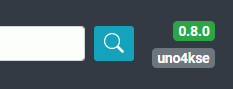

Wer mir eine kleine Anerkennung für diese Anleitung zukommen lassen möchte, kann dies gerne über PayPal an marti_win7@magenta.de machen. Ich bedanke mich persönlich per PN bei jedem.
Einleitung
Der SerienRecorder erleichtert und automatisiert das Timern (Aufnehmen) von Serien, indem für angelegte Serien-Marker tägl. automatisch Timer erstellt werden. Als "Datenquelle" für die Serien und deren Sendetermine wird der Inhalt der Webseite TV Wunschliste genutzt.
Alle erstellten Timer werden in einer Datenbank (DB) gespeichert, damit der Serienrecorder weiß, ob eine Folge bereits getimert wurde oder nicht, sodass es zu keinen Mehrfachaufnahmen einer Episode kommt.
Außerdem können auch manuell Datenbankeinträge hinzugefügt werden, damit diese Episoden nicht getimert werden, falls man von einer Serie schon einige gesehen hat.
Für diejenigen, die es nicht abwarten können, gibt es auch einen "extra" Bereich, nämlich "Für die ganz Eiligen" , damit die auch sofort loslegen können.
Zuvor jedoch der Hinweis, dass JavaScript nötig ist, um diese Anleitung vollständig sehen und nutzen zu können. Auf folgendem (Screenshot) sieht man, wie die Anleitung aussehen sollte.
Der SerienRecorder besteht im wesentlichen aus 4 Ansichten:
- Planer-Ansicht
In der Serien-Planer-Ansicht wird ein Auszug der Serien dargestellt, die an dem jeweiligen Tag laufen, aber nur auf den Sendern, die in der Senderzuordnung zugeordnet sind. Hierüber lassen sich dann mit einem "Klick" direkt Serien-Marker anlegen.
- Senderzuordnung
Die Senderzuordnung dient dazu, die eigenen Sender (Box-Sender) den Sendernamen von Wunschliste (Wunschliste) zuzuordnen. Dies ist notwendig, da manche Sender auf Wunschliste.de (WL) einen, teilweise nur leicht, anderen Namen tragen, als der auf Eurer Box (z.B. ntv (WL) --- n-tv (Box)).
- Marker-Ansicht
Die Serien-Marker Ansicht ist eigentlich die wichtigste Ansicht im SerienRecorder. Sie zeigt alle Serien, die der SerienRecorder für die Timer-Erstellung berücksichtigt. Hier können dann auch "individuelle" Einstellungen für jeden einzelnen Serien-Marker gemacht werden.
- Timer-Liste
Die Timer-Liste spiegelt den Inhalt der Datenbank (DB) wider und beinhaltet alle erstellten Timer aller Serien-Episoden, die der SerienRecorder (SR) je erstellt hat. In der Timer-Liste kann man sowohl nachsehen, welche Episoden von den einzelnen Serien schon mal getimert wurden, als auch Einträge löschen oder hinzufügen.
Der Serienrecorder kann, je nach Einstellung, mit der Planer-Ansicht oder der Marker-Ansicht gestartet werden. Wenn man mit der Marker-Ansicht startet, gelangt man mit lang EXIT zur Planer-Ansicht.
Beispiel Screenshots für die 4 Ansichten
(Klick zum vergrößern)
Planer-Ansicht

Senderzuordnung
Marker-Ansicht
Timer-Liste

In den Screenshots kann man sehen, dass das "Aussehen" des SerienRecorders nicht immer gleich ist, denn es ist abhängig vom verwendeten Box-Skin und/oder Einstellungen im SerienRecorder(SR) selbst. Der SR hat auch eigene Skins, aber meist ist der SR schon im Box-Skin integriert bzw. es gibt Skin-Parts dafür. Der SR kann auch auf 4K-TVs Bildschirmfüllend angezeigt werden, sofern ein passender Skin/Skinpart genutzt wird.
Wie macht der SerienRecorder das?
Dafür bezieht der SerienRecorder Daten von der kommerziellen Webseite http://www.wunschliste.de, sodass für die Benutzung zwingend eine Internetverbindung notwendig ist. Wunschliste bietet auf seiner Webseite für so gut wie alle Serien die Ausstrahlungstermine im deutschen Fernsehen an. Diese Informationen bereitet der SerienRecorder auf und stellt eine Oberfläche zur Verfügung um die Lieblingsserien zu verwalten.
Der Benutzer kann sog. Serien-Marker für die Serien anlegen, die vom SerienRecorder überwacht werden sollen. Für jeden Serien-Marker kann konfiguriert werden, welche Staffeln und Sender in die Überwachung einbezogen werden. Einmal am Tag, zu einer einstellbaren Uhrzeit, wird ein sog. Timer-Suchlauf durchgeführt, der die Sendetermine bei Wunschliste abruft und anhand von bestimmten Vorgaben Timer für die Sendungen erstellt. Zusätzlich wird in der sog. Timer-Liste (der SerienRecorder Datenbank) ein entsprechender Datensatz eingefügt, der u.a. verhindert, dass für die Sendung ein weiterer Timer erstellt wird. Optional kann der SerienRecorder auch die sog. TV-Planer E-Mails abrufen und auswerten, die von Wunschliste einmal am Tag verschickt werden. Die dort enthalten Informationen sorgen dafür, dass Serien die auf "Meine Wunschliste" gepflegt werden, mehr oder weniger automatisch vom SerienRecorder berücksichtigt werden.
Neben dem Anlegen von Timern bietet der SerienRecorder dem Serien-Fan noch weitere interessante Funktionen, wie z.B. den sog. Serien-Planer der eine Übersicht der Serien des heutigen bzw. der kommenden Tage bietet. Außerdem kann der SerienRecorder neben Beschreibungen zur Serie bzw. einzelner Folgen auch das Cover anzeigen bzw. abrufen.
Wir weisen ausdrücklich darauf hin, dass Wunschliste.de mit Absicht keine Schnittstelle zum Abrufen der benötigten Informationen bereit stellt, weil den Betreibern dadurch Werbeeinnahmen verloren gehen. Es ist also nicht ausgeschlossen, dass Wunschliste.de den Betrieb des SerienRecorders irgendwann unterbindet.
Im Moment darf der SerienRecorder mit freundlicher Genehmigung von Wunschliste.de die Daten über einen von uns betriebenen Proxy Server (Serien-Server) abrufen um die Wunschliste Server so wenig wie möglich zu belasten. Da die Wunschliste-Seite von angemeldeten Usern lebt, ist es nur fair, dass sich JEDER Nutzer des SerienRecorder einen Account bei Wunschliste anlegt, egal ob er später die TV-Planer E-Mail Funktion nutzt oder nicht.
Der SerienRecorder ruft die Cover und Serien-Informationen von der freien Plattform TheTVDB ab. Hier kann jeder Cover bereitstellen oder Informationen eintragen.
Beispiel für eine Seite von wunschliste.de
Beispiel für eine Seite von wunschliste.de
Anmerkungen
Es werden genaue Folgen-Informationen abgerufen, so können diese in den Timer und damit in die Aufnahmeinformationen mit aufgenommen werden, also z.B. "S01E10 – Der Baum". Als Ausnahme können mittlerweile aber auch Sonderfolgen/Specials mit z.B. S01 oder Serien ohne Staffelbezeichnung (Folge 345, wie z.B. Tatort) vom SerienRecorder verarbeitet werden, die Staffelbezeichnung ist dann S00.
Serien, die eigentlich keine sind, weil sie tägl. oder wöchentl. ausgestrahlt werden und weder eine Staffel- noch Folgen-Bezeichnung haben, sind nur "schwer" mit dem SerienRecorder (SR) zu timern. Aber auch dies geht mittlerweile mit einigen von diesen "Serien". Da diese Folgen nicht eindeutig zu identifizieren sind, würden diese einmal in die DB eingetragen und danach nicht mehr getimert. Daher sollte man die Option aktivieren, dass diese spezielle Serie nicht in die DB eingetragen wird
Seit der Release-Version 4.1.0 können auch "gleichnamige" Serien unterschieden und separat als Serien-Marker hinzugefügt werden. Der SR unterscheidet diese dann durch das Produktionsjahr, welches beigefügt wird. Das Produktionsjahr wird auch beim Erstellen der Serien-Verzeichnisse angehängt, kann aber auch deaktiviert werden.
Die Sendetermine werden nicht mehr direkt von www.wunschliste.de (Wunschliste, WL) geladen, sondern von einem eigens dafür privat "gemieteten" Server (Serien-Server), da die Datenmengen die jeder User bei einem Timer-Suchlauf benötigte, für die WL-Seite zu viel waren. Daher wäre es "schön", wenn sich die User für den Unterhalt des Servers und natürlich hauptsächlich für den unermüdlichen Einsatz des jetzigen Programmierers @MacDisein mit einer kleinen Spende an ihn, daran beteiligen.
Selbst das VU+ Support Forum ist ein Hobby Projekt. Da sollte man dran denken, falls einem mal nicht sofort geholfen wird bzw. werden kann.
Zusätzlich kann man in den Einstellungen aktivieren, das auch Cover der Serien angezeigt werden sollen. Die Cover und auch die Serien-Infos werden von
The TVDB abgerufen. Da TheTVDB nicht immer ALLES vorrätig hat, kann es bei manchen Serien auch schon mal zu "Fehlern" bzw. zu fehlenden Inhalten kommen. Dies dann bitte im Forum melden, ob es behoben werden kann.
Wunschliste hat auf seiner Webseite mittlerweile auch Filme im "Angebot", welche auch mit dem SerienRecorder getimert werden können. Filme lassen sich allerdings nur mit Hilfe der TV-Planer E-Mail Funktion timern.
Der SerienRecorder aktualisiert (wenn eingeschaltet) die von ihm angelegten und noch ausstehenden Timer auf der Box mit den vorhandenen EPG-Daten, während des Timer-Suchlauf. Dabei werden die Zeiten der Timer abgeglichen und ggf. geändert. Dieses funktioniert idR ganz gut, aber halt nicht immer.
Wichtig ist auch, dass der SerienRecorder nur Timer erstellt. Sowohl für die Konflikterkennung wie auch für die Aufnahmen ist ausschließlich die Box verantwortlich. Wenn etwas nicht aufgenommen wurde, obwohl der SR einen Timer erstellt hat, ist in den allermeisten Fällen die Box dafür verantwortlich bzw. evtl... falsche Einstellungen auf der Box oder im SR bei der Senderzuordnung. In einem solchen Problemfall ist immer das dazugehörige Log des SR, wo diese Aufnahme getimert wurde mit anzuhängen. Die Log-Dateien befinden sich idR im Pluginverzeichnis.
Installation
Bei einer Neuinstallation des SR, nimmt man die Version vom FEED und macht ein Update auf die aktuelle Beta-Version oder aber man nutzt das letzte IPK-Release von der GitHub-Seite und macht dann ein Update auf die aktuelle Beta-Version. Nach einer Erst- bzw. Neuinstallation direkt auch ein Update auf die aktuelle Beta-Version zu machen ist Sinnvoll, da dort schon Bugfixes und neue Features eingebaut sind. Die Beta-Versionen sind idR, wenn sie erst mal ein paar Tage veröffentlicht sind, sehr stabil. Mehr Infos dazu bekommt man direkt im SR Thread im VTI Forum, falls man Fragen dazu hat.
Download und Installation geschieht i.d.R. über den Feed. Diesen erreicht man im VTI über Blau ==> Rot und dann OK um die Erweiterungen zu öffnen. Danach ist der SR im VTI unter MENÜ ==> ERWEITERUNGEN zu finden. Natürlich lässt sich der SR auch mit Hilfe des Plugins "MultiQuickButton" auf eine Taste der Fernbedienung legen oder mit Hilfe von Navigations-Plugins starten.
Da die Feed-Version meist nicht sehr aktuell ist, wird empfohlen, direkt nach der Installation (vor dem ersten Start) ein Update auf die aktuelle Beta zu machen.
- Der SerienRecorder wird auf der Box in das Verzeichnis /usr/lib/enigma2/python/Plugins/Extensions/serienrecorder/ installiert.
- Die Datenbank SerienRecorder.db wird allerdings in dem Verzeichnis /etc/enigma2/ gespeichert, weil dieses Verzeichnis auch von den System-Backup-Funktionen mit gesichert wird.
Es gibt auch die Möglichkeit sich eine Release- oder auch Beta-Version aus dem GitHub https://github.com/einfall/serienrecorder zu laden. Zu den Beta-Versionen sei gesagt, dass diese auch immer Fehler beinhalten können. In den Beta-Versionen werden Bugs gefixt und/oder Features dem SR hinzugefügt. Diese neuen Features müssen natürlich erst getestet werden, wofür sich "löblicherweise" immer User finden, bevor diese Features in eine Release-Version kommen.
Für eine manuelle Installation liegen die Release-Versionen idR in den Formaten IPKG und DEB vor.
Für Nutzer des VTI Image gibt es im VU+ WIKI nützliche Infos zur Installation. Einmal für die Installation vom Feed und einmal für eine manuelle Installation .
Unter folgender Adresse findet man für DreamBoxen ein How-To wie man ein IPKG manuell installiert:
http://www.dream-multimedia-tv.de/download/HowTo-Plugins-installieren.pdf
Nach der Installation ist der SerienRecorder als Eintrag unter "Erweiterungen" vorhanden.
Sollte jemand mit dem SR auf ein Python 3 Image wechseln (also "Umziehen") und die TV-Planer Mail nutzen, müssen dafür Benutzername und Passwort neu eingegeben werden.
Installation von Beta-Versionen
Die benötigten Dateien sind unter gitHub herunterzuladen. Etwas "einfacher" geht es evtl. mit dem GithubPluginUpdater weiter unten.
Rechts findet man einen grünen Button mit der Aufschrift "Code". Dort klickt man drauf und wählt "Download Zip".
Download der Beta-Version
Bei einem Update kommt es auch manchmal zu einem Update der Datenbank Version, was man nach dem ersten Start des SR nach einem Update im Log prüfen sollte, ob das Datenbank Update erfolgreich war.
Über FTP (z.B. mit DCC, Filezilla, Totalcommander etc.) können dann die entsprechenden Dateien aus dem "src"-Verzeichnis der Zip-Datei mit den Dateien im SerienRecorder Verzeichnis auf der Box ausgetauscht bzw. überschrieben werden. Die Dateien des SR sind dann auf der Box in folgendem Verzeichnis zu finden: /usr/lib/enigma2/python/Plugins/Extensions/serienrecorder/ Auch die manchmal benötigten LOG-Dateien sind in diesem Verzeichnis.
Der GithubPluginUpdater
Es gibt auch ein Plugin, mit dessen Hilfe man sich die Beta-Versionen (ohne Hilfe eines PCs/Laptops) direkt auf der Box installieren lassen kann.
Dieses Plugin heißt GithubPluginUpdater.
Zusatz Plugins
Außerdem können folgende Plugins die Funktionalität des SR erweitern, sind aber nicht für den vollen Funktionsumfang erforderlich.- VPS: zur Berücksichtigung der VPS-Zeiten bei der Erstellung der Timer
- WebkitHbbTV Webbrowser/DMM Webbrowser: zum Ansehen dieser Anleitung und der Wunschliste-Seite im SR
Für VU+ Receiver muss das WebkitHbbTV installiert sein, welches für ältere Image-Versionen wahrscheinlich nicht vorhanden ist.
Gestartet wird dies mit der TEXT (TeleText) Taste. - TAG Plugin : Wenn ein solches Plugin installiert ist, dann lassen sich am Serien-Marker in den Einstellungen die Tags für diese Serie setzen, dann wird auch automatisch immer der Name der Serie als Tag eingefügt. Diese können dann z.B. in der Movieliste zum Filtern genutzt werden.
- EPGRefresh Plugin (v2.1.1 oder höher) : Eine solche Version gibt es derzeit nicht für VU+ Boxen, daher ist eine eventuelle "Fehlermeldung" im Log zu ignorieren. Bei den Dream-Boxen gibt es eine solche Version und dort kann man einstellen, dass der Serienrecorder nach dem Durchlauf des EPGRefresh automatisch gestartet werden soll. Für alle anderen gilt, dies dann selbst zu prüfen
Wie aktuell die EPG Daten sind, ist für die Timererstellung des SR nicht wichtig, sondern für die evtl. aktivierte Aktualisierung der schon vom SR erstellten Timer auf der Box, welche beim Suchlauf auch mit ausgeführt wird.
Erste Schritte
Im folgenden Bild ist das SerienRecorder eigene Aussehen der Senderzuordnung abgebildet.
Senderzuordnung nach dem ersten Start
Der SR ist mittlerweile in vielen Skins integriert bzw. es gibt zu vielen Skins eigene Skinparts, womit das Aussehen des SR dem verwendeten Skin auf der Box angeglichen wird. Dabei haben die "Skin Erbauer" alle Freiheiten, wie sie die einzelnen "Objekte" im SR anordnen. Eine Möglichkeit sieht dann so aus.
Senderzuordnung nach dem Start
Sollte der SR bei jemandem nicht (annähernd) bildschirmfüllend sein, sollte man sich informieren, ob dazu ein Skinpart erforderlich bzw. überhaupt verfügbar ist.
Auch die Einstellungen im SR bezüglich "Skin"-Optionen (z.B. Serienrecorder1, Serienrecorder2, Skinpart etc.) sollten durchgetestet werden.
Dabei fällt auf, das die Farbtasten zwar auch unten angesiedelt sind, aber die anderen Tastenbelegungen auf die rechte Seite gesetzt wurden und zusätzlich das TV-Bild oben rechts eingeblendet wird. Dabei kann es dann aber geschehen, das die 3 Spalten der Sender nicht mehr ganz untereinander stehen. So wie die 2. Spalte (die Sender der Box) nicht ganz unter "Box-Sender" stehen. Aber ich denke, es gibt "schlimmeres", denn die Senderzuordnung ruft man ja eigentlich nur selten auf.
Wie die Senderzuordnung genau funktioniert lesen Sie bitte im Kapitel "Sender zuordnen" nach.
Beim nächsten Start bzw. nach dem Verlassen der Sender-Zuordnung wird der Serien-Planer angezeigt.
Nach der Aktualisierung der Senderliste in der Senderzuordnung muss die Senderzuordnung einmal geschlossen und dann wieder geöffnet werden, um wieder die gesamte Senderliste sehen und zuordnen zu können. Dies wird dann auch im SR-Log protokolliert.
Der SerienRecorder ist recht komplex und besteht eigentlich hauptsächlich aus zwei Ansichten, die Serien-Planer-Ansicht und die Serien-Marker-Ansicht. Diese werden im einzelnen in den nachfolgenden Kapiteln erklärt.
Jede Ansicht hat einen festen Bereich, in der die für diese Ansicht aktiven Tasten aufgelistet werden. Da es inzwischen sehr viele Funktionen pro Ansicht gibt, wechselt dieser Bereich (einstellbar) alle paar Sekunden. Bei manchen Skins werden auch ALLE Tasten angezeigt. Manchmal haben Tasten auch eine doppelte
Funktion, kurz gedrückt oder lang gedrückt. Dies wird durch einen Schrägstrich dargestellt (kurz/lang):
Aktive Tasten in dieser Ansicht
Grundsätzlich lässt sich jede Ansicht über die EXIT Taste schließen und es werden in Einstellungsfenstern, wo keine Tastenbelegung angezeigt wird, dadurch auch die gemachten Änderungen gespeichert. Danach gelangt man wieder zur vorherigen Ansicht. In einigen Fällen, in denen Änderungen verworfen oder gespeichert werden können, kann die betreffende Ansicht über Abbrechen bzw. Speichern verlassen werden.
Über die Pfeiltasten des
Steuerkreuzes kann die
Selektion zeilenweise geändert werden.
Über die Pfeiltasten des Steuerkreuzes kann
die Selektion seitenweise geändert werden bzw. damit wird durch die Einstellungen der gerade angewählten Option "geblättert".
Außer in den Einstellungen Ansichten, dort kann man über die CH CH
-Tasten seitenweise geblättert werden.
Globale Einstellungen MENU
Diese lassen sich sowohl aus der Serien-Planer-Ansicht mit MENU Taste als auch aus der Serien-Marker-Ansicht mit lang MENU aufrufen. Die Einstellungen sind inzwischen sehr komplex geworden, denn der SerienRecorder lässt sich sehr weitreichend konfigurieren, deswegen sind den Einstellungen ein eigenes Kapitel "Globale Einstellungen" gewidmet.
Timer-Suchlauf (auch Auto-Check) EPG/Info
Der Timer-Suchlauf wird idR automatisch, einmal am Tag, zu einer eingestellten Uhrzeit durchgeführt. Diese Uhrzeit sollte nicht zwischen 0:00 -6:00 Uhr liegen, da es dann wegen Aktualisierung der Server zu Fehlern beim Abrufen der Daten kommen kann.
Man muss (zwingend) eine "eigene" Uhrzeit dafür eingeben. Wenn man keine Uhrzeit für den Timer-Suchlauf auswählt, dann nimmt der SerienRecorder bei jedem Start eine zufällige Uhrzeit. Das soll verhindern, dass alle User einen Timer-Suchlauf zur selben Zeit machen.
Über die EPG Taste (auf manchen Fernbedienungen auch EPG/Info) kann ein manueller Timer-Suchlauf über alle aktiven Serien sowohl aus der PlanerAnsicht als auch aus der MarkerAnsicht heraus gestartet werden.
Ist die TV-Planer-Mail-Funktion aktiviert, dann wird mit EPG ein Hinweisfenster (Messagebox) geöffnet, wo man auswählen muss ob der Timer-Suchlauf nur die Mail verarbeiten soll oder aber ein Voller Timer-Suchlauf über alle aktiven Serien gemacht werden soll. Es gibt bei den Messageboxen leider nur Ja/Nein - dann ist Exit automatisch immer „Nein“, das lässt sich nicht ändern.
Bei einem vollen Timer-Suchlauf werden für alle aktivierten Serien-Marker die Ausstrahlungstermine von Wunschliste.de (bzw. dem SerienServer) abgerufen und ggf. für den eingestellten Zeitraum Timer angelegt.
Das Protokoll eines automatischen bzw. manuellen Suchlauf wird in einer Log-Datei abgespeichert und kann, aus so gut wie jeder Ansicht heraus, über die Taste 0 aufgerufen werden.
- Einstellungen zum Timer-SuchlaufHilfe HELP + lang HELP
Die "normale" Fernbedienungs-Hilfe erreicht man mit HELP, wo man dann auch mit OK die gerade selektierte Funktion ausführen kann.
Über lang HELP kann diese Anleitung auf der Box angezeigt werden, sofern ein Webbrowser installiert ist.
Ein paar Lösungen werden auch hier in der Anleitung unter FAQ bereits vorgestellt.
Es hat sich inzwischen auch schon ein große Community gebildet, viele Nutzer sind gerne bereit bei Fragen zu helfen, und natürlich auch die Entwickler:
- - VU+ Support Forum
- - IHAD - I have a dreambox - Forum
Und auch sicherlich noch andere.
Globale Einstellungen MENU
Der SerienRecorder lässt sich weitreichend konfigurieren und dementsprechend an die eigenen "Bedürfnisse" anpassen. Man kann z.B. Serien-Verzeichnisse anlegen lassen oder die Serien extern auf ein NAS speichern lassen. Manche Optionen werden erst sichtbar, wenn die dazugehörige "Ober-Option" aktiviert wird.
Der Umfang der Einstellungen lässt sich über die Option Umfang der Einstellungen einschränken. Standardmäßig steht dies auf Experte, um am Anfang ALLE Einstellmöglichkeiten sichtbar zu machen. Wenn man möchte, kann man später dann den Umfang der Einstellungen einschränken, falls man "Angst" hat beim Öffnen der Einstellungen aus Versehen "sensible" Optionen zu verstellen.
Zu jeder Option in den Einstellungen wird ein Hilfetext angezeigt, der die jeweilige Option erklärt.
Die Einstellungen werden erst dann dauerhaft gespeichert, wenn die Ansicht mit der Taste Speichern verlassen wird.
Damit der SerienRecorder automatisch (einmal täglich) Timer anlegt, muss der automatische Suchlauf aktiviert und eine Suchzeit eingestellt werden.
Hier ein Beispiel-Screenshot der Globalen Einstellungen. Im Folgenden wird jede Option in den einzelnen Bereichen erklärt:
Die globalen Einstellungen
Die Farbtasten
Zurücksetzen
Mit der roten Farbtaste werden die Einstellungen auf die Anfangs/Standard Werte zurückgesetzt.
Speichern
Mit der grünen Farbtaste werden die Einstellungen gespeichert und das Fenster wird geschlossen. Sollte man dieses Fenster mit EXIT verlassen, werden die gemachten Änderungen verworfen und nicht gespeichert.
in Datei speichern
Mit der gelben Farbtaste werden die Einstellungen in eine Datei exportiert, um sie z.B. für ein Wiederherstellen der Einstellungen auf einem neuen System bzw. auf einer anderen Box zu nutzen. Diese Datei heißt Config.backup und wird idR im Plugin Verzeichnis gespeichert.
aus Datei laden
Mit der blauen Farbtaste werden die Einstellungen aus der Datei Config.backup geladen, welche sich im Plugin Verzeichnis befinden muß.
Die Config.backup kann auch dazu verwendet werden, die Daten für den IMAP-Account (Login, Passwort) per PC einzugeben, was im Bereich der TV Planer Mail näher beschrieben wird.
Navigieren und Einstellungen ändern
- Das Navigieren in den Einstellungen geschieht Zeilenweise mittels Steuerkreuz und das Seitenweise blättern mit den CH CH -Tasten .
- Das Ändern der Optionen wird mit Steuerkreuz oder auch der OK Taste vorgenommen. Die vorgenommenen Änderungen werden dann mit Speichern dauerhaft gespeichert und das Fenster geschlossen.
Möchte man die gemachten Änderungen nicht behalten, kann man das Fenster mit EXIT verlassen und die gemachten Änderungen werden verworfen. - Über die Menü Taste kann die Senderzuordnung aufgerufen werden, die "normalerweise" über die Serien-Planer Ansicht geöffnet wird.
Nun zu den Einstellungen im Menü selbst
System
-
ID der Box:
Die SerienRecorder Datenbank kann von mehreren Boxen innerhalb eines Netzwerkes verwendet werden, damit für einzelne Marker nur auf bestimmten Boxen Timer angelegt werden, kann hier die ID der Box eingestellt werden. Wird in der Serien-Marker Ansicht ein Marker deaktiviert, werden für die Box mit der eingestellten ID keine Timer mehr für diesen Marker erstellt.
Damit mehrere Boxen auf die Datenbank (DB) zugreifen können, lässt sich der Speicherort der DB auch auf ein Netzlaufwerk (z.B.NAS) auslagern. -
Neue Serien-Marker nur auf dieser Box aktivieren:
Ist diese Option gesetzt, werden alle Serien-Marker die neu angelegt werden, nur für diese Box aktiviert, normalerweise sind neue Serien-Marker immer für alle Boxen aktiviert.
-
Verzeichnis der Serienaufnahmen:
Setzt den Speicherort für Aufnahmen. Alle Aufnahmen die durch den SerienRecorder programmiert werden, landen in dem eingestellten Verzeichnis.
Diese Option kann für jeden Serien-Marker aber auch individuell geändert werden.
Allerdings greifen in diesem Fall die globalen Einstellungen für Serien-/Staffelverzeichnis nicht mehr.Wenn man den globalen Speicherort im SerienRecorder ändert, dann werden beim nächsten Timer-Suchlauf alle neuen Timer mit dem neuen Verzeichnis erstellt und alle bestehenden, aber nicht abgearbeitete Timer geändert. Die neuen Verzeichnisse werden aber erst mit Anlegen eines Timers erstellt. Ein Verzeichniswechsel ist also kein Problem.WICHTIG:
Das Anlegen eines Ordners ist im Serienrecorder Grundlegend geändert worden, seit der Release-Version 4.3.0.
Vorher durfte man NICHT in den Ordner reingehen, jetzt muss man in den Ordner reingehen, in dem ein Verzeichnis erstellt werden soll, wie es eigentlich auch richtig und "intuitiv" ist. -
Serien-Verzeichnis anlegen:
Ist diese Option gesetzt, wird für jede Serie ein Unterverzeichnis mit dem Namen der Serie im Verzeichnis, das unter "Speicherort für Aufnahmen" eingestellt ist, angelegt. Das Verzeichnis wird erst dann angelegt, wenn für die betreffende Serie ein Timer erstellt wird.
Sollte der Speicherort nicht erreichbar sein (z.B. NAS), wird die Aufnahmen auf das Hauptaufnahme-Verzeichnis umgelegt.-
Verzeichnisname mit Produktionsjahr:
Wenn dies aktiv ist, wird dem Serien-Verzeichnis das Produktionsjahr der Serie angehängt, damit man im Falle von gleichnamigen Serien diese auch unterscheiden kann.
-
Staffelverzeichnis anlegen:
Ist diese Option gesetzt, wird für jede Staffel einer Serie ein separates Unterverzeichnis angelegt, mit dem Namen "Season x". Diese Option ist nur dann sichtbar, wenn die Option "Serien-Verzeichnis anlegen" gesetzt ist.
-
Mindestlänge der Staffelnummer im Verzeichnisnamen:
Gibt die Mindestlänge der Staffelnummer im Verzeichnisnamen an, z.B. würde ein Wert von drei immer dreistellige Ordnernamen für die Staffel erstellen, ist eine Staffelnummer kürzer wird mit dem unter "Füllzeichen für Staffelnummer im Verzeichnisnamen" eingestellten Füllzeichen aufgefüllt.
-
Füllzeichen für Staffelnummer im Verzeichnisnamen:
Füllzeichen mit dem die Staffelnummer auf die unter "Mindestlänge der Staffelnummer im Verzeichnisnamen" angegebene Länge aufgefüllt wird.
Die Staffel-Verzeichnisse können vom SR auch mit dem deutschen Namen "Staffel" angelegt werden, dazu muss man im SerienRecorder Verzeichnis eine Datei mit dem Namen "Staffel" anlegen. Sofern noch Staffel-Verzeichnisse mit dem Namen "Season" existieren, kann man die manuell in "Staffel" umbenennen. -
Mindestlänge der Staffelnummer im Verzeichnisnamen:
-
Verzeichnisname mit Produktionsjahr:
-
Automatisches Plugin-Update:
Ist diese Option gesetzt, versucht der SerienRecorder beim Öffnen nach neuen Versionen zu suchen. Wurde eine neue Version gefunden, kann der Benutzer entscheiden, ob er sie herunterladen und installieren möchte. Ein vorheriges Backup des SerienRecorder (SR) bzw. Systems ist eigentlich immer anzuraten.
-
Verzeichnis der Datenbank:
Der SerienRecorder speichert seine Daten in einer Datenbank. Mit dieser Option lässt sich der Speicherort für diese Datenbank definieren, in der Regel muss dies aber nicht geändert werden, es sei denn, mehrere Boxen sollen auf dieselbe Datenbank auf einem externen Netzwerkspeicher zugreifen.
Wird der Speicherort geändert, kann der SerienRecorder die aktuelle Datenbank an den neuen Ort verschieben. -
Erstelle Backup :
Mögliche Optionen: nein , vor dem Suchlauf , nach dem Suchlauf .
Ist die Option gesetzt, wird vor oder nach einem Suchlauf automatisch ein Backup der wichtigsten Dateien angelegt. Gesichert wird die SerienRecorder Datenbank, die SerienRecorder Einstellungen, die aktuelle SerienRecorder Log-Datei sowie die enigma2 Timer.-
- vor dem Suchlauf: Hat den Vorteil, das man ein Backup hat, falls beim Timer-Suchlauf bzw. bei der Timererstellung etwas "schief" geht und die Box abstürzt. War in den Anfängen des SR ab und zu mal der Fall, aber sollte mittlerweile nur noch äußerst selten vorkommen. Es sei denn man Testet immer "fleißig" die Beta-Versionen.
- nach dem Suchlauf: Damit hat man den "Ist-Zustand" nach dem AC, falls das System mal Crasht, ohne das der SR daran schuld ist, was wohl mittlerweile eher der Fall ist.
So oder so, es immer von Vorteil das Backup im SR einzuschalten, damit auch im Falle eines Falles bei Fragen zur Timererstellung von Serien-Folgen immer das dazugehörige Log vorhanden ist. Vorausgesetzt, man hat die "Vorhaltezeit" hoch genug angesetzt.Falls kein Backup erstellt werden kann, weil z.B. der Backup Pfad nicht beschreibbar oder erreichbar ist, wird eine Meldung ins Log geschrieben.-
Verzeichnis für Backups:
Gibt das Verzeichnis an, in dem die Dateien beim Backup gespeichert werden sollen.
Innerhalb dieses Ordners wird bei jedem Backup ein Unterordner mit dem aktuellen Datum und Uhrzeit erstellt (Beispiel: 201508012012). -
Backup-Dateien löschen die älter als x Tage sind:
Gibt an wie lange die Backup-Dateien aufbewahrt werden sollen.
Der Mindest-Wert hier, ist auf "5" voreingestellt, d.h. alle Backup-Dateien die älter als der eingestellte Wert sind, werden aus dem Speicherort für Backups gelöscht. Der höchste Wert ist 099 Tage, was ausreichen sollte, um auch Probleme bei der Timererstellung zu finden, die schon etwas her sind.
-
Verzeichnis für Backups:
- Backup beim manuellen Timer-Suchlauf:
Damit kann eingestellt werden, ob nach einem manuellen Timer-Suchlauf immer ein Backup erstellt werden soll. Manchmal macht man mehrere manuelle Suchläufe hintereinander oder das Anlegen eines Backups dauert wegen eines NAS zugriffs länger, dann kann man hier diese Erstellung abschalten. Die Option ist Standardmäßig auf "Ja" eingestellt und greift natürlich nur, sofern das Backup im SR aktiv ist.
Timer-Suchlauf
-
Automatischen Timer-Suchlauf ausführen:
Legt fest wann der automatische Timer-Suchlauf (Auto-Check) durchgeführt werden soll. Als Timer-Suchlauf wird die Hauptfunktion des SerienRecorders bezeichnet. Es handelt sich dabei um das Suchen von Ausstrahlungsterminen, und das Anlegen von Timern für die einzelnen Serien-Folgen (bzw. auch Filme) automatisch im Hintergrund. Zu diesem Zeitpunkt wird eine Internetverbindung benötigt um die Informationen vom SerienServer abrufen zu können.
-
Manuell:
Es wird kein automatischer Suchlauf durchgeführt, der Benutzer muss den Suchlauf manuell über die EPG Taste starten.
Ist die "Wunschliste TV-Planer E-Mail" Funktion aktiviert, dann wird mit EPG ein Hinweisfenster (Messagebox) geöffnet, wo man auswählen muss ob der Timer-Suchlauf nur die Mail verarbeiten soll oder aber ein Voller Timer-Suchlauf über alle aktiven Serien gemacht werden soll. Es gibt bei den Messageboxen leider nur Ja/Nein - dann ist Exit automatisch immer „Nein“, das lässt sich nicht ändern. -
zur gewählten Uhrzeit:
Der automatische Timer-Suchlauf wird täglich zur eingestellten Uhrzeit durchgeführt.
-
Uhrzeit für automatischen Timer-Suchlauf:
Uhrzeit angeben, zu der, der Timer-Suchlauf durchgeführt werden soll.
Es hat sich gezeigt, das diese nicht zwischen 0:00-6:00 Uhr liegen sollte, da es in dieser Zeit durch Datenaktualisierungen der Server zu Problemen beim abrufen der Daten für die Timererstellung kommen kann.
Man sollte also möglichst eine andere Uhrzeit einstellen, um Verbindungsfehler zu vermeiden.
-
Maximale Verzögerung für den automatischen Timer-Suchlauf (in Min.):
Um die Belastung des SerienServers zu verringern, kann hier ein Zeitraum in Minuten angegeben werden, in dem der SerienRecorder, ausgehend von der unter "Uhrzeit für automatischen Timer-Suchlauf" eingestellten Zeit, den Suchlauf durchführt.
D.h. der Suchlauf findet irgendwann zwischen der unter "Uhrzeit für automatischen Timer-Suchlauf" eingestellten Zeit + Verzögerung statt, damit nicht alle, die 6:00 Uhr eingestellt haben, auch punkt 6:00 Uhr den Timer-Suchlauf starten.
-
Uhrzeit für automatischen Timer-Suchlauf:
- nach EPGRefresh:
Die Auswahl "nach EPGRefresh" ist nicht bei allen Boxen verfügbar/sichtbar.Damit diese Funktion genutzt werden kann, muss zwingend das EPGRefresh Plugin ab Version 2.1.1 installiert sein. Z.B. für VU+ Receiver gibt es eine solche Version nicht, daher ist diese Option auf VU's nicht sichtbar.
Einige Benutzer verwenden das EPGRefresh Plugin, um das EPG der Box aktuell zu halten. Mit dieser Option hat man die Möglichkeit, im Anschluss an den EPGRefresh, den automatischen Timer-Suchlauf starten zu lassen.
-
Manuell:
-
Timer für X Tage erstellen:
Legt fest, wie viele Tage im voraus Timer erstellt werden sollen, in der Regel hat sich hier ein Wert von 3-8 Tagen als gut herausgestellt.
- 3-4 Tage : Dies ist ein "guter" Wert, wenn man Serien dabei hat, die "häufiger" schon mal verschoben werden, sei es nur am gleichen Tag für eine größere Zeitspanne oder aber auch erst an anderen Tagen gesendet werden. Wenn man hier schon Timer für die nächste Woche erstellt, kann es passieren, das diese Timer bis zum Sendetermin nicht vom SR während der Aktualisierung beim Timer-Suchlauf korrekt geändert werden können, da die Verschiebung des Sendetermins zu groß war.
- 8-10 Tage : Hiermit gibt es "eigentlich" auch keine Probleme, denn die meisten Serien haben ja ihren festen Sendeplatz. Die meisten Serien werden ja, wenn überhaupt, nur um wenige Minuten verschoben, was der SR korrigiert, sofern man das Aktualisieren in den Einstellungen aktiviert hat. Wenn man bei WL einen Vorlauf von 1 Tag eingestellt hat, werden im SR bei "Timer für 8 Tage erstellen", bei wöchtl. Serien, sowohl der Timer für diese als auch der Timer für die nächste Woche erstellt.
Dies hat den Vorteil, das man einerseits eine Art "Ausfallsicherung" hat, falls der SR mal einen "Total-Ausfall" hat (was sehr selten vorkommt), dann hat man wenigstens noch genug Zeit, um abzuwarten, ob der Fehler behoben werden kann bzw genug Zeit sich um die manuelle Erstellung der Timer zu kümmern. Andererseits bietet das Timern über einen größeren Zeitraum den Vorteil, das man schon Timer für nächste Woche erstellt hat und es keine Konflikte mit evt. manuell erstellten Timern von anderen Aufnahmen (Filme, Dokus etc) hat. Wenn die Frau oder Kinder gerne das EPG auf Tage im Voraus durchforsten und "unzählige" Timer für alles mögliche erstellen, dann kann es schon mal eng werden, für den SR seine Timer zu erstellen.
Es gibt sicherlich auch diejenigen, wo es evtl. „besser“ ist, den SR in einem anderen Bereich an Tagen im Voraus Timern zu lassen, das muß man dann selbst "herausfinden", welche Anzahl an Tagen da individuell für jemanden gut ist. Das kommt auf die Serien drauf an, der eine nimmt hauptsächlich nur wöchentliche Serien auf, ein anderer viele tägl. Serien. Wenn man manuell häufig Serien "nacharbeiten" muß, dann ist wahrscheinlich die Einstellung nicht ganz optimal. Sollte es häufig dieselbe Serie sein, die Probleme macht, dann kann auch eine der anderen individuellen Einstellungen die Lösung sein, z.B. das Einschränken auf ein bestimmtes Zeitfenster.
Im Gegensatz zur "Wunschliste TV-Planer E-Mail", wo nur die Serien für den einen Tag berücksichtigt werden, erstellt der SR seine Timer für den Bereich von x Tagen. Was aber nicht bedeutet, das über die Mail nur die Serienfolgen für einen Tag erstellt werden, denn der SR nutzt im normalfall nur die Info, welche Serien in der Mail stehen. Dann geht der SR "ganz normal" hin und erstellt Timer für diese Serien für die eingestellten x Tage. Nur wenn der SerienServer nicht erreichbar ist, um die Sendetermine abzurufen, werden für den Timer-Suchlauf auch die Ausstrahlungstermine für die Serien aus der Mail benutzt. -
Früheste Zeit für Timer:
Diese Option legt die früheste Ausstrahlungszeit für einen Timer fest. Wenn man beispielsweise nur Timer für Sendungen nach 22:00 Uhr anlegen lassen möchte, kann man hier diese Uhrzeit festlegen. Die Option steht im Zusammenhang mit der nachfolgenden Option.
-
Späteste Zeit für Timer:
Diese Option legt die späteste Ausstrahlungszeit für einen Timer fest. Wenn man beispielsweise nur Timer für Sendungen vor 14:00 Uhr anlegen lassen möchte, kann man hier diese Uhrzeit festlegen. Die Option steht im Zusammenhang mit der vorherigen Option.
Beide Optionen lassen sich für einen bestimmten Serien-Marker nutzen, um zum Beispiel zu erreichen, dass nur die ungekürzte Nachtwiederholung der Serie aufgenommen wird. -
Versuche Timer aus dem EPG zu aktualisieren:
Ist diese Option gesetzt, wird beim Anlegen eines Timers, bzw. bei jedem Suchlauf versucht die vom SerienRecorder angelegten Timer zu aktualisieren. Dabei wird die Sendung im EPG gesucht und die Start-/Endzeit wird aktualisiert. Zusätzlich werden die aktuellen Daten von Wunschliste.de verwendet den Timer zu korrigieren. Es wird z.B. der Titel und die Beschreibung geändert oder die Start-/Endzeit angepasst.
-
EPG Suchgrenzen in Minuten:
Legt fest, wie viele Minuten der SR von der eigentlichen Startzeit davor und dahinter eine ggf. geänderte Startzeit eines Timer sucht. Das Maximum ist 30 min.
Die Minuten der Suchgrenzen sollten aber immer KLEINER sein, als eine Serienfolge LANG ist, sonst kann es zu Problemen mit Aktualisierung dieser Episoden kommen.
Wenn man also z.B. Kinderserien mit ca. 20 min pro Episode timern möchte, dann sollten die Suchgrenzen auf ca. 10-15 Minuten eingestellt sein/werden. Sollte es bei solchen Serien vom Sender öfters größere Verschiebungen/Programmänderungen geben, dann sollte man die Aktualisierung aus dem EPG für diese Serie individuell deaktivieren und statt dessen den Vor-/Nachlauf größer einstellen.
-
EPG Suchgrenzen in Minuten:
-
Immer Timer anlegen, wenn keine Wiederholung gefunden wird:
Verhindert, dass durch einen der oben gesetzten Filter eine Sendung nicht aufgenommen wird. Sollte für eine Sendung im angegebenen Zeitraum (siehe nachfolgende Option) keine Wiederholung gefunden werden, wird trotzdem ein Timer erstellt, auch wenn die Sendung außerhalb der in "Früheste Zeit/Späteste Zeit für Timer" angegeben Zeit ausgestrahlt wird.
-
maximal X Tage auf Wiederholung warten:
Legt fest, wie viele Tage auf eine Wiederholung gewartet werden soll, bevor die Sendung zur regulären Zeit aufgenommen wird, auch wenn dies durch andere Einstellung nicht erlaubt ist. In der Regel sind hier ca.8-15 Tage ein optimaler Wert, abhängig davon, wie viel Tage man im voraus timern lässt.
-
maximal X Tage auf Wiederholung warten:
-
Anzahl der Aufnahmen pro Episode:
Über diese Option lässt sich einstellen wie viele Aufnahmen pro Episode einer Serie erlaubt sind. In manchen Fällen möchte man von einer Serie die Episoden mehrfach aufnehmen, um sich nachher die "beste" zum Archivieren herauszusuchen.
-
Anzahl der Tuner für Aufnahmen einschränken:
Aktiviert die Option zum Beschränken der Tuner für Aufnahmen.
-
maximale Anzahl der zu benutzenden Tuner:
Legt fest, wie viele Tuner für Aufnahmen genutzt werden dürfen, darüber lässt sich erreichen, dass z.B. immer ein Tuner zum Fernsehen frei bleibt.
-
maximale Anzahl der zu benutzenden Tuner:
-
Aus Deep-StandBy aufwecken:
Legt fest, ob die Box für einen automatischen Timer-Suchlauf aus dem Deep-StandBy (DSB) aufwachen darf.
Eine Box wird meist, wenn sie durch Plugins aus dem DSB aufgeweckt wird, im Standby ihren Dienst verrichten, was für den SerienRecorder kein Problem darstellt. -
Aktion nach dem automatischen Timer-Suchlauf:
Legt fest was nach dem automatischen Timer-Suchlauf passieren soll.
-
keine:
Die Box bleibt im aktuellen Zustand.
-
in Standby gehen:
Versetzt die Box in den Standby.
- in Deep-Standby gehen:
Fährt die Box herunter.
-
Time-out für (Deep-)StandBy-Abfrage (in Sek.):
Falls die Box in den Standby oder Deep-Standby versetzt werden soll, legt diese Option fest, wie lange ein Hinweisfenster eingeblendet wird, um den Vorgang noch zu stoppen.
-
keine:
Früheste Zeit für Timer: 00:00
Späteste Zeit für Timer: 23:59
Damit werden dann Timer "rund um die Uhr" erstellt.
Die option heißt Immer aufnehmen wenn keine Wiederholung gefunden wird. Wenn dies aktiviert ist, werden auch Timer erstellt, die außerhalb der Zeitspanne "Früheste und Späteste Zeit" liegen, sofern innerhalb der Zeitspanne eine Timererstellung nicht möglich ist.
TV-Planer E-Mail
-
Wunschliste TV-Planer E-Mail nutzen:
Wird diese Option mit Ja aktiviert, dann werden weitere Optionen sichtbar.
- IMAP Server:
- IMAP Server SSL:
- IMAP Server Port:
- IMAP Login:
- IMAP Passwort:
- IMAP Mailbox:
- IMAP Einstellungen testen:
- TV-Planer Subject:
- maximales Alter der E-Mail (Tage):
- Voller Timer-Suchlauf mindestens einmal im Erstellungszeitraum:
- Timer nur aus der TV-Planer E-Mail anlegen:
- Timer für Serien anlegen:
- Neue TV-Planer Serien nur auf dieser Box aktivieren:
- Timer für Filme anlegen:
- Neue TV-Planer Filme nur auf dieser Box aktivieren:
- Verzeichnis für Filme:
- Unterverzeichnis für jeden Film:
In dem separaten Artikel Die TV-Planer Mail von Wunschliste.de werden die obigen Optionen genauer beschrieben und erläutert.
Timer
-
Timer-Art:
Legt die Art der Timer fest die angelegt werden sollen, die Auswahl entspricht der Timer-Art für enigma2 Timer.
-
umschalten:
Es wird ein sog. Umschalttimer angelegt der zum Start der Sendung auf den entsprechenden Sender umschaltet, es erfolgt keine Aufnahme.
-
aufnehmen:
Ein klassischer Aufnahmetimer der die Sendung aufzeichnet.
- umschalten und aufnehmen:
Schaltet zum Start der Sendung auf den entsprechenden Sender um, und startet gleichzeitig die Aufnahme.
- Erinnerung:
Zum Start der Sendung wird ein Hinweisfenster angezeigt, es erfolgt keine weitere Aktion, also auch keine Aufnahme.
Seit der Version 4.4.0 kann diese globale Einstellung auch individuell bei jedem Serien-Marker eingestellt bzw. geändert werden. Falls also jemand grundsätzlich alles auf "aufnehmen" stehen hat, aber bei EINER Serie nur "umschalten" möchte, kann man dies jetzt so einstellen.
-
umschalten:
-
Nach dem Event:
Auch diese Auswahl ist von den enigma2 Timer bekannt und legt fest was nach dem Event (also nach der Aufnahme) passieren soll.
-
nichts:
Die Box bleibt im aktuellen Zustand.
-
in Standby gehen:
Die Box wird in den Standby versetzt.
- in Deep-Standby gehen:
Die Box wird heruntergefahren.
- automatisch:
Die Box entscheidet automatisch (Standardwert).
-
nichts:
-
Timervorlauf (in Min.):
Legt fest wie viele Minuten die Aufnahme vor der regulären Startzeit gestartet werden soll.
-
Timernachlauf (in Min.):
Legt fest wie viele Minuten die Aufnahme nach der regulären Endzeit weiter aufnehmen soll.
Beide Optionen lassen sich für jeden Serien-Marker einzeln ändern. -
Timername:
Es können verschiedene Kombinationen aus Serienname, Episodenname und Staffel/Episoden-Bezeichnung ausgewählt werden, wie der Timername gebildet werden soll, dieser Name bestimmt auch den Namen der Aufnahme. Es gibt 15 verschiedene voreingestellte Varianten, aus denen man wählen kann, zusätzlich kann man noch über eine "Text"-Datei eigene Varianten hinzufügen.
Hier ein paar Beispielvarianten:- (Serienname) - S01E01 - (Episodenname)
- (Serienname) S01E01 (Episodenname)
- (Serienname)
- S01E01 - (Episodenname)
- (Serienname) - S01E01
Um eigene Timernamen einzugeben, muss man die Datei "SerienRecorder.timer-pattern.json", welche sich unter "/etc/enigma2/" befindet, editieren/bearbeiten.
- Das ändern der Datei funktioniert mit jedem Editor, man darf halt nur nichts falsch machen bzw. irgendwelche wichtigen Zeichen vergessen. Am besten kopiert man sich eine Zeile, fügt die an "passender" Stelle wieder ein und ändert daran dann.
Möchte man z.B. anstatt der Bindestriche lieber Pluszeichen, ist das schnell gemacht.Die linke Seite ist der Programmcode und die rechte Seite ist für die Anzeige in den Einstellungen.
["{serie:s} - S{staffel:s}E{episode:s} - {titel:s}" , "Serienname - S01E01 - Episodenname"],
Wenn man es ganz individuell haben möchte, betrifft die Anzeige im SR:["{serie:s} - S{staffel:s}E{episode:s} - {titel:s}" , "Serienname - S01E01 - Episodenname"],
["{serie:s} + S{staffel:s}E{episode:s} + {titel:s}" , "Serienname + S01E01 + Episodenname"],
["{serie:s} - S{staffel:s}E{episode:s} - {titel:s}" , "Serienname - S01E01 - Episodenname"],
["{serie:s} + S{staffel:s}E{episode:s} + {titel:s}" , "Meine eigene Serien Beschriftung"],
Falls das Plugin 'SerienFilm' verwendet wird, sollte man die Einstellung '<Serienname>' wählen, damit die Episoden korrekt in virtuellen Ordnern zusammengefasst werden. -
Timerbeschreibung:
Hierbei gilt das Selbe wie für die Namensgebung des Timernamen (oben), denn sie beziehen den aus der selben Datei "SerienRecorder.timer-pattern.json".
Die Anzeige der Timerbeschreibung ist vom Skin und den Einstellungen im System abhängig, ob und wo diese angezeigt wird.
Wenn man die Timerbeschreibung im SR ändert, werden nicht nur alle nachfolgend erstellten Timer so benannt, sondern beim nächsten Timer-Suchlauf werden auch alle noch ausstehenden Timer daraufhin aktualisiert. -
Manuelle Timer immer anlegen:
Ist diese Option gesetzt, dann werden manuell angelegte Timer, aus der Sendetermine-Ansicht immer erstellt, unabhängig davon ob für die zu timende Folge bereits die maximale Anzahl von Timern und/oder Aufnahmen vorhanden sind, bzw. die max. Anzahl an Tunern überschritten wird.
Bei Konflikten kann aber auch bei aktivierter Option kein Timer angelegt werden. -
Event-Programmierungen behandeln:
Über diese Option lässt sich einstellen wie sog. Event-Programmierungen (also mehrere Episoden einer Serie als ein Event) behandelt werden soll.
-
nein:
Event-Programmierungen (S01E01/1x02/1x03) werden als eigenständige Sendungen behandelt.
-
Timer anlegen:
Es wird versucht die einzelnen Episoden einer Event-Programmierung zu erkennen, es wird zwar weiterhin nur ein Timer angelegt, aber die Einzelepisoden werden in der Datenbank als 'bereits aufgenommen' markiert. Sollten bereits alle Einzelepisoden vorhanden sein, wird für das Event kein Timer angelegt.
- Einzelepisoden bevorzugen:
Es wird versucht die einzelnen Episoden einer Event-Programmierung zu erkennen und diese innerhalb der Wartezeit für Wiederholungen zu timern. Ist das nicht möglich, wird das Event aufgenommen.
Hierfür gibt es dann wiederum eine Zusatz-Option, wo man festlegen kann, ob die einzelnen Episoden, die im Event aneinander getimert wurden, als einzel Episoden in die Datenbank eingetragen werden, wodurch diese dann später nicht mehr getimert würden.- Einzelepisoden als 'bereits getimert' markieren:
-
nein:
-
Bouquets auswählen:
Ermöglicht die Auswahl eines Standard- und Alternativbouquet für die Sender-Zuordnung.
Steht die Option auf "nein", werden bei der Auswahl der Sender alle Bouquets nacheinander angezeigt, weshalb man dann schon mal weiter runter scrollen muss, bis man den richtigen Sender gefunden hat, um ihn auszuwählen.-
Standard Bouquet:
Auswahl, welches Bouquet bei der Sender-Zuordnung als Standard verwendet werden soll.
-
Alternatives Bouquet:
Auswahl, welches Bouquet bei der Sender-Zuordnung als Alternative verwendet werden soll.
-
Verwende alternative Sender bei Konflikten:
Bei "ja" wird versucht den Timer für den alternativen Sender anzulegen, falls es zu einem Konflikt gekommen ist.
-
Standard Bouquet bevorzugen:
Wenn diese Option aktiviert ist und die Episode auf einem Sender des Standard Bouquets ausgestrahlt wird, legt der SerienRecorder auch dann noch Timer an, wenn für diese Episode bereits ein Timer auf einem Sender des alternativen Bouquets angelegt wurde.
Dadurch kann man z.B. eine Episode noch einmal werbefrei aufnehmen, dazu müssen allerdings dann die werbefreien Sender dem Standard Bouquet zugeordnet werden und die anderen dem alternativen Bouquet.
-
Standard Bouquet:
Optimierungen
-
Intensive Suche nach angelegten Timern:
In der Serien-Planer Ansicht werden die Episoden hervorgehoben für die bereits ein Timer existiert.
Ist diese Option gesetzt, wird vor dem Anzeigen der Serien-Planer Ansicht, jede Episode im EPG gesucht. -
Sucht eine Episode als Aufnahme auf der HDD:
In einigen Ansichten werden die Episoden mit einem Festplatten Symbol gekennzeichnet, wenn sie sich bereits auf der Festplatte befinden.
Ist diese Option auf NEIN gesetzt, wird dieses Symbol nicht angezeigt und es wird auch nicht auf der Festplatte nach der Aufnahme gesucht.Diese Option muß aktiviert sein, wenn der SR keine Episoden timern soll, die er schon auf der Festplatte (HDD, NAS) findet. Dies kann allerdings den Timer-Suchlauf verlängern und evtl. die Leistung der Box beeinträchtigen, da der/die Ordner durchsucht werden müssen. Es werden nur das Hauptaufnahme-Verzeichnis (meist /media/hdd/movie/) und andere, die vom SR genutzt werden, falls vom SR Verzeichnisse angelegt werden. Es werden nicht sämtliche, angeschlossenen Medien durchsucht.
Es werden folgende Dateiendungen verarbeitet: ts | mkv | avi | mp4 | divx | xvid | mpg | mov . Natürlich ist auch eine "korrekte" und SR-Kompatible Schreibweise der zu durchsuchenden Aufnahmen dazu nötig.
Benutzeroberfläche
-
SerienRecorder Skin:
Der Serienrecorder verfügt selbst schon über ein paar eigene Skins, sowohl in HD- als auch in FHD-Auflösung.
Zudem kann das Aussehen des SerienRecorders über die Box-Skins angepasst werden, damit es dem "Aussehen" der Box entspricht. Bei manchen Skins ist der SR direkt im Skin integriert und bei anderen muß man sich einen Skin-Part installieren und/oder aktivieren. Näheres zu Skin-Parts Bitte in den jeweiligen Bereichen im Forum nachlesen.- SerienRecorder1
- SerienRecorder1 FHD
- SerienRecorder2
- SerienRecorder2 FHD
- AtileHD
- StyleFHD
- Black Box
- DreamOS FHD
- Skinpart
Die einzelnen Optionen sind u.a.:
Man kann auch eigene Skins im SR nutzen, diese müssen dann nur in das "Skin-Verzeichnis" zu den anderen hinein kopiert werden und werden dann nach einem Neustart des SR zur Auswahl angezeigt.
Nutzt man einen Skin-Part des Box Skins, dann muss meistens die Einstellung Skinpart gewählt werden, aber das sollte in dem betreffenden Thread im Forum dabei stehen, falls es mal Probleme dabei gibt.
Die meisten SR eigenen Skins sind in HD-Auflösung gemacht, bei den FHD Skins steht es im Namen dabei.Sollte auf der Box ein HD-Skin aktiviert sein, können die SR-Skins mit einem FHD im Namen nicht ausgewählt werden.
-
Werden bei diesem Skin immer alle Tasten angezeigt:
Bei manchen Skins, wie z.B. beim SerienRecorder1, werden nicht alle Tasten angezeigt, sondern nur z.B. die Tasten 0-4. Nach eingestellter Wechselzeit (siehe unten) werden dann die Tasten 5-9 usw. angezeigt. Dies spart u.a. Platz für andere Elemente.
-
Wechselzeit der Tastenanzeige (in Sek.):
Legt die Anzahl der Sekunden fest, in der die Anzeige der Options-Tasten wechselt. Da in manchen Skins nicht alle Tasten auf einmal angezeigt werden (können), wechselt diese durch die gesamte Tastenbelegung des SR. Die nutzbaren Farb-Tasten werden idR immer angezeigt.
Diese Option ist nicht bei allen Skins verfügbar bzw. hat dort keine Funktion, wenn alle Tasten angezeigt werden.
-
SerienRecorder Start-Ansicht:
Gibt an, welche Ansicht beim Start des SerienRecorder sichtbar ist.
-
Serien-Planer:
Die Serien-Planer Ansicht zeigt eine Tages-Übersicht von Episoden die an diesem Tag laufen oder aber die Top30 der SerienRecorder Charts. Die beiden Ansichten lassen sich mit ROT umschalten. Man navigiert in diesen Ansichten mit Hilfe des Steuerkreuzes ( alle 4 Richtungen ).
Die Tage-Übersicht zeigt eine Auswahl an Episoden an diesem Tag und ist idR NIE vollständig. Möchte man auch die folgenden (4) Tage sehen, kann man mit Hilfe der Channel+- bzw. Bouquet+-Tasten blättern. Das dauert manchmal ein wenig, da neue Daten geladen werden müssen. -
Serien-Marker:
Die Serien-Marker Ansicht zeigt die Liste der angelegten Serien-Marker.
Wird der SerienRecorder mit dieser Ansicht gestartet (bzw. man befindet sich in der Serien-Marker Ansicht) sind manche Tasten anders belegt. Z.B. wird das "Globale Menü" des SR von hier mit lang Menü gestartet, während hier mit Menü das Serien spezifische Menü geöffnet wird
-
Serien-Planer:
-
Picons anzeigen:
Ist die Option gesetzt werden in der Serien-Planer und der Serien-/Staffelstart Ansicht Sender Logos angezeigt.
Mögliche Optionen, je nachdem, welche Picons schon auf der Box sind:- nein
- ja, by ServiceRef
- ja, by Name
-
Verzeichnis mit Picons:
Hier dann das Verzeichnis angeben, welches meist das selbe ist wie auf der Box.
-
Cover herunterladen:
Ist die Option gesetzt werden die Cover der Serien bei TheTVDB.com heruntergeladen. Der SerienRecorder speichert die Cover im unten angegebenen Ordner ab.
-
Verzeichnis für Cover:
Gibt den Ordner an, wo die Cover gespeichert werden. Es sollte ein Ordner verwendet werden in dem die Dateien dauerhaft gespeichert werden, also nicht "/tmp/", denn der wird bei jedem (Neu-)Start der Box gelöscht.
-
Cover anzeigen:
Bei "JA", werden beim Scrollen durch die verschiedenen Listen die Cover der Serien heruntergeladen und angezeigt, was beim Ersten mal die Bedienung des SR teilweise zäh bzw. hakelig erscheinen lässt. Sind für die Serien die Cover vorhanden, geht das Scrollen wieder flüssig, außer dort, wo keine Cover gefunden werden konnten. Dort wird jedes mal versucht, ein Cover nachzuladen, weshalb es sinnvoll ist, die Folgende Option zu aktivieren.
Wenn dies auf "NEIN" steht, werden beim Timer-Suchlauf die Cover für die verarbeiteten Marker heruntergeladen, aber im SR nicht angezeigt. Die Cover werden aber dann in der Filmliste (Movielist) angezeigt. -
Platzhalter anlegen wenn Cover nicht vorhanden:
Diese Option dient dazu, Platzhalter Dateien für nicht gefundene Cover anzulegen, damit beim Scrollen nicht ständig versucht wird, ein Cover zu laden.
Diese Platzhalter Cover muss man aber manuell löschen, wenn der SR wieder versuchen soll, dafür ein Cover zu laden. - Platzhalter regelmäßig aktualisieren
Wird dieses aktiviert, werden die Platzhalter jedes mal beim anzeigen auf ihr Datum überprüft. Liegt die Erstellung schon mehr als 60 Tage zurück, wird der Platzhalter gelöscht und es wird versucht, erneut das Cover zu laden. Wenn dies nicht der Fall ist, wird wieder der Platzhalter erstellt.
-
Cover in Serien-/Staffelordner kopieren
- folder.jpg
- series.jpg
Dies kann man so einstellen, je nachdem wie ein anderes Anzeige-Plugin (Movielist, EMC, VMC etc.) das darstellen kann.
-
Verzeichnis für Cover:
-
Korrektur der Schriftgröße in Listen:
Bei einigen Skins ist es nötig die Schriftgröße in Listen anpassen zu können, dies ist über diese Option möglich. Der SerienRecorder muß neu gestartet werden damit die Änderung wirksam wird.
-
Korrektur der Spaltenbreite in der Serien-Marker Ansicht:
Hiermit kann die Breite der ersten Spalte in der Serien-Marker Ansicht angepasst werden, breiter oder schmaler.
-
Einzug der Serien-Namen in der Serien-Marker Ansicht:
Einstellung möglich von 0 (ganz links) bis 80 (nach rechts gerückt), wobei 40 die Standardvorgabe ist.
Hiermit wird erreicht, das die erste Zeile, also der Serien-Name, in der Serien-Marker Ansicht bei 0-39 nach links gerückt oder 41-80 nach rechts gerückt wird und somit die "Abgrenzung" der einzelnen SerienMarker optisch deutlicher wird.
Je nachdem mit welcher Ansicht (Planer oder Marker) man startet, werden die Änderungen direkt wirksam oder aber erst nach einem SerienRecorder Neustart. -
Staffel-Filter in Sendetermine-Ansicht:
Ist diese Option gesetzt, werden nur noch die Sendetermine angezeigt, die den eingestellten Staffeln im Serien-Marker entsprechen.
-
Timer-Filter in Sendetermine-Ansicht:
Ist diese Option gesetzt, werden nur noch die Termine angezeigt, für die es noch keine Einträge in der SerienRecorder Datenbank gibt. Es werden also bei aktivem Timer-Filter nur noch nicht aufgenommen Folgen in den Sendeterminen angezeigt.
-
Sortierung der Serien-Marker:
Hier steht zur Auswahl
-
Alphabetisch:
Die Serien-Marker werden in alphabetischer Reihenfolge angezeigt.
-
Wunschliste:
Sortiert die Serien-Marker so wie auf der Wunschliste Seite. Dort werden die Artikel "Der, Die, Das und The" nicht bei der Sortierung berücksichtigt, sodass z.B. die "Die Simpsons" nicht unter "D" sondern unter "S" einsortiert werden.
-
Alphabetisch:
-
Anzahl der wählbaren Staffeln im Menü Serien-Marker:
In der Serien-Marker Ansicht kann ausgewählt werden, welche Staffeln bei der Timererstellung berücksichtigt werden sollen. Mit dieser Option kann eingestellt werden, wie viele Staffeln dort angezeigt werden.
-
Öffne Marker-Ansicht nach Hinzufügen neuer Marker:
Ist die Option gesetzt, wird nach dem Hinzufügen eines neuen Markers automatisch die Serien-Marker Ansicht geöffnet und der neue Marker selektiert.
-
Vor löschen in Serien-Marker und Timer-Liste Benutzer fragen:
Bei "Ja" erfolgt eine Sicherheitsabfrage, ob wirklich gelöscht werden soll.
-
Box-Sender bei der Senderzuordnung alphabetisch sortieren:
Bei "Ja" erfolgt die Anzeige in alphabetischer Reihenfolge, ansonsten so, wie es auf der Box auch ist.
-
SerienRecorder Webinterface aktivieren:
Bei "Ja" wird das Webinterface des SerienRecorders aktiviert, sodass man über einen Webbrowser auf einige Funktionen des SR zugreifen kann. Mehr dazu gibt es im SR Webinterface Artikel.
Das SR Webinterface befindet sich gerade noch im Aufbau, näheres dazu findet man im VTI-Forum.
Wenn das Serienrecorder Webinterface zum ersten Mal aktiviert wird und der "web-data" Ordner auf der Box nicht existiert, wird abgefragt, ob das Webinterface installiert werden soll. Damit wird dann auch "sichergestellt", das man die richtige Version bzw. die richtige API-Version installiert. Zudem muss man dadurch nicht mehr selbst manuell tätig Werden.
Nach der Installation des Webinterface durch den SR das Speichern nicht vergessen.
SerienRecorder Webinterface Deaktivieren / Deinstallieren:Wenn man das Webinterface von "Ja" wieder auf "Nein" stellt, wird das Webinterface deaktiviert. Dann kommt die Frage, ob man es auch deinstallieren möchte. Bei "Nein" wird es nur deaktiviert und bei "Ja" wird es zusätzlich noch deinstalliert bzw. gelöscht.
Das die Dateien gelöscht werden, kann man sich zu nutze machen, wenn man das Webinterface nicht updaten kann, wofür es verschiedene Gründe geben kann.
Man stellt das Webinterface auf "Nein" und bestätigt die Frage zur Deinstallation mit "Ja". Nach einem Neustart des SR stellt man das Webinterface wieder auf "Ja" und es wird die aktuellste Version installiert.Ist das Webinterface einmal installiert, werden alle weiteren Updates dafür über das Webinterface selbst installiert.
Meldungen
-
Meldung beim Timer-Suchlauf:
Es kann ausgewählt werden ob und wie nach dem Suchlauf eine Benachrichtigung auf dem Bildschirm angezeigt werden soll.
-
keine:
Zeigt keine Benachrichtigung beim Suchlauf an.
- bei Suchlauf-Ende:
Zeigt ein Hinweisfenster, das der Suchlauf beendet wurde.
- Statistik bei Suchlauf-Ende:
Zeigt eine Zusammenfassung (Statistik) nach erfolgreichem Suchlauf an.
-
keine:
-
Meldung bei Timerkonflikten:
Kommt es beim Anlegen von Timern zu Konflikten, wird eine Benachrichtigung angezeigt, wenn diese Option gesetzt ist.
Diese Nachricht bleibt so lange auf dem Bildschirm bis sie von Benutzer quittiert/bestätigt wird. -
Meldung bei TV-Planer Fehlern:
Bei "Ja" wird ein Hinweisfenster eingeblendet, das beim Abrufen der Mail ein Fehler aufgetreten ist.
Diese Nachricht bleibt so lange auf dem Bildschirm bis sie von Benutzer quittiert/bestätigt wird. -
Meldung, wenn Sendung im EPG nicht gefunden wurde:
Bei "Ja" wird für jeden Timer, der NICHT im EPG gefunden wurde, eine Nachricht eingeblendet. Dabei ist es egal, ob der Timer wegen fehlender EPG Daten oder weil die Sendung nicht ausgestrahlt wird, nicht gefunden wurde. Daher kann diese Meldung darauf hindeuten, das die Sendung kurzfristig aus dem Programm genommen wurde.
-
Anzeigedauer für Meldungen:
Gibt an, wie viel Sekunden (max. 60) die obigen Hinweisfenster für Meldungen angezeigt werden. Natürlich nur für die, welche NICHT quittiert werden müssen.
Bei Anzeigedauer auf "0" müssen alle Hinweisfenster quittiert werden. -
Meldung bei Senderaktualisierungen:
Der SerienRecorder zeigt an, wenn die Senderliste bei Wunschliste sich geändert hat und diese dann auf im SerienRecorder aktualisiert werden sollte.
Hierüber kann entschieden werden, ob das Hinweisfenster beim Start des Serienrecorders oder nach jedem Timer-Suchlauf angezeigt werden soll.
Diese Nachricht bleibt so lange auf dem Bildschirm bis sie von Benutzer quittiert/bestätigt wird.
Logging
Außerdem wird jeder Start und jedes korrekte Herunterfahren der Box im SR Log protokolliert.
In der Log-Datei wird alles protokolliert, was der SR macht. Die Log-Datei befindet sich idR im Plugin Verzeichnis auf der Box unter "/usr/lib/enigma2/python/Plugins/Extensions/serienrecorder/" und ist eine reine Text-Datei. Sie kann im SR mit der Taste 0 aufgerufen werden.
Hier stehen u. a. die Serien drin, die abgerufen wurden und was der SR mit den einzelnen Episoden "gemacht" hat. Es wird auch angezeigt, wie viele Sender in der Senderzuordnung den WL-Sendern zugeordnet sind.
Natürlich sind auch Fehlermeldungen enthalten, falls es dazu kommt.
-
Verzeichnis für Log-Datei:
Standardmäßig stehen die Log-Dateien im SR-Plugin Ordner
-
Log-Dateiname mit Datum und Uhrzeit:
Steht dies auf Nein, wird die Log-Datei jeden Tag überschrieben. Dies hat den Nachteil, das man keine fortlaufenden Log-Dateien hat, für eine eventuelle Fehlersuche.
Steht dies auf Ja, wird im Log-Dateinamen Datum und Uhrzeit mit eingebracht. So hat man dann jeden Tag eine eigene Log-Datei. Damit die Anzahl dieser nicht ins "unendliche" anwächst, kann man in folgender Einstellung festlegen, wie lange diese Log-Dateien vorgehalten werden sollen.- Log-Dateien löschen die älter als x Tage sind:
-
DEBUG LOG aktivieren:
Ist diese gesetzt, werden folgende DEBUG LOG Optionen, sofern diese dann auf JA gesetzt sind, im Log mit angegeben.
- DEBUG LOG - Box Informationen:
- DEBUG LOG - Senderliste:
- DEBUG LOG - Episoden:
- DEBUG LOG - Added:
- DEBUG LOG - Festplatte:
- DEBUG LOG - Tageszeit:
- DEBUG LOG - Zeitbegrenzung:
- DEBUG LOG - Timer Debugging:
- Backup von TV Planer e-Mail erstellen:
-
Ans Ende des Logs springen:
Diese Option bewirkt, das bei Anzeige des Logs im SR direkt ans Ende gescrollt wird, wo man dann sofort sehen kann, wie viele Timer erstellt wurden.
-
Log-Anzeige mit Zeilenumbruch:
Diese Option bewirkt, das man bei Anzeige des Logs im SR, immer den ganzen Inhalt des Logs im Fenster sieht, wodurch allerdings die Anzeige "länger" wird.
Tastaturbelegung in den globalen Einstellungen
| Zurücksetzen | Reset der Einstellungen auf Standardwerte | |
| Speichern | Speichert die gemachten Änderungen | |
| in Datei speichern | Speichert die Einstellungen in eine Datei | |
| aus Datei laden | Lädt die Einstellungen aus einer Datei | |
| OK | Werte ändern, ansonsten das Steuerkreuzes nutzen | |
| Steuerkreuzes | Werte ändern, ansonsten OK nutzen | |
| Steuerkreuzes | Zeilenweise hoch und runter | |
| CH CH | Seitenweise blättern | |
| EXIT | Abbrechen, ohne zu speichern | |
| Menü | Senderzuordnung | Senderzuordnung |
Die Serien-Planer Ansicht
Der Name "Serien-Planer Ansicht" hat "historische" wurzeln und stammt aus den Anfängen des SerienRecorders. "Damals" konnte man nur mithilfe des Serien-Planers eine Serie zum SerienRecorder (SR) hinzufügen, mittlerweile gibt es eine ganze Reihe mehr Möglichkeiten, eine Serie zum SR hinzuzufügen.
Diese Ansicht lässt sich mit ROT umschalten, und zwar zwischen Tagesübersicht und TOP30.
Beispiel Screenshot der Tagesübersicht

Serien-Planer Ansicht im SerienRecorder
Beispiel Screenshot der Top30-Ansicht

Serien-Planer Ansicht im SerienRecorder
In der Tagesübersicht wird eine "Auswahl" an Serien/Episoden angezeigt, die an dem jeweiligen Tag ausgestrahlt werden. Diese Ansicht ist NIE vollständig, was bedeutet, das hier NIE die Sendetermine ALLER Serien an dem Tag aufgeführt werden, eben nur eine Auswahl. Dafür werden die Daten von unserem SerienServer ausgewertet (Daten von WL dürfen wir nicht nutzen) und die beliebtesten 150 SerienRecorder Serien unserer User verwendet. Außerdem werden nur Serien angezeigt, welche auf Sendern ausgestrahlt werden, die in der Senderzuordnung der jeweiligen Box auch zugeordnet sind. Es macht ja keinen Sinn hier Serien anzuzeigen, die auf Sendern ausgestrahlt werden, die man selbst nicht empfangen kann.
Die TOP30 sind die Charts der SerienRecorder-User, also welche Serie am häufigsten von unserem SerienServer abgerufen wurde, steht ganz oben. Hierbei werden die Serienabrufe der letzten 12 Monate berücksichtigt, damit die Statistik auch einigermaßen aktuell ist.
Die Farbtasten
Tagesübersicht / TOP30
Über die rote Farbtaste lässt sich die Anzeige des Serien-Planers zwischen den beiden Ansichten Tagesübersicht / TOP30 wechseln. Je nachdem welche Ansicht man gerade sieht, ist die rote Farbtaste mit der anderen Ansicht beschriftet.
Tagesübersicht
Über die Steuerkreuz Tasten kann man durch die Serien/Episoden des jeweiligen Tages blättern.
In der Tagesübersicht kann man über die Bouquet +- bzw. Channel +- Tasten zum nächsten bzw. vorherigen Tag springen. Die Tagesübersicht kann man Tageweise (insgesamt 4 Tage) durchblättern. Dies kann, je nach Leistung der Box und des Internets, schon mal ein paar Sekunden dauern, bis der nächste Tag angezeigt wird.
TOP30
Über die Steuerkreuz Tasten kann man durch die tagesaktuellen Charts der TOP30 blättern.
Mit der OK Taste wird die gerade selektierte Serie als Serien-Marker dem SerienRecorder (SR) hinzugefügt, dabei ist es egal, in welcher der beiden Ansichten man sich befindet.
Das Hinzufügen von Serien wird unter Serie/Marker hinzufügen genauer beschrieben.
Ist für eine der angezeigten Serien bereits ein Serien-Marker vorhanden, wird der Eintrag in grüner Schrift dargestellt.
Zusätzlich gibt es folgende Symbole an den Zeilen:
-
Das Festplatten-Symbol zeigt an, ob eine Episode bereits auf der Festplatte ist. Dazu muss aber die dazugehörige Option in den globalen Einstellungen aktiviert sein.
Das Timer-Symbol zeigt an, das für diese Episode ein noch ausstehender Timer existiert.
Das Neu-Symbol zeigt an, das es sich bei dieser Episode um die Erste Folge der Ersten Staffel (S01E01) handelt. Dies muss allerdings nicht bedeuten, das es sich dabei immer um eine Erstausstrahlung handelt, da die meisten Serien ja auch wiederholt werden.
Sender zuordnen
Die Senderzuordnung dient dazu, die eigenen Sender (Box-Sender) den Sendernamen von Wunschliste (Wunschliste) zuzuordnen. Dies ist notwendig, da manche Sender auf Wunschliste.de (WL) einen, teilweise nur leicht, anderen Namen tragen, als der auf Eurer Box (z.B. ntv (WL) --- n-tv (Box)).
Alles weitere zur Senderzuordnung wird auf einer eigenen Seite bereitgestellt, mit dem Namen Senderzuordnung.
Serien-Marker
Mit GELB gelangt man in die Serien-Marker Ansicht. Damit eine Serie beim automatischen Suchlauf (und damit bei der Erstellung von Timern) berücksichtigt wird, muss die Serie dem SerienRecorder zunächst hinzugefügt werden. Die Serien-Marker Ansicht zeigt die Serien an, für die ein Serien-Marker angelegt wurde.
Eine genaue Beschreibung der Serien-Marker Ansicht ist unter Serien-Marker beschrieben.
Timer-Liste
Die Timer-Liste spiegelt quasi einen Teil des Inhalts der SR Datenbank wider und enthält alle Episoden der Serien, für die der SerienRecorder bereits einen Timer erstellt hat - und damit bei der Suche nicht mehr berücksichtigt werden.
Eine genaue Beschreibung der Möglichkeiten ist unter Timer-Liste beschrieben.
Tastaturbelegung in der Serien-Planer Ansicht
| ROT | Tagesübersicht / TOP30 | Tagesübersicht / TOP30 |
| GRÜN | Sender zuordnen | Senderzuordnung |
| GELB | Serien-Marker | Serien-Marker |
| BLAU | Timer-Liste | Timer-Liste |
| OK | Serie/Marker hinzufügen | Serie/Marker hinzufügen |
| EPG/INFO | Timer-Suchlauf starten / wenn WL-Mail aktiviert, dann Auswahl Mit Mail oder voller Timer-Suchlauf | Timer-Suchlauf |
| lang EPG/INFO | --- | --- |
| Menü | Globale Einstellungen | Globale Einstellungen |
| Help+lang Help | Hilfe | Hilfe |
| 0 | Log anzeigen | Log |
| 1 | SUCHE öffnen | |
| 2 | TVDB-ID ändern | TVDB-ID ändern |
| 3 | Neue Serienstarts | |
| 4 | Serien Beschreibung | |
| 5 | --- | --- |
| 6 | Konflikt Liste | |
| 7 | Merkzettel | |
| 8 | Neu laden | |
| 9 | --- | |
| TEXT | Wunschliste Webseite | |
| lang Text | Wunschliste Webseite | |
| EXIT | Abbrechen / Fenster schließen |
Die Senderzuordnung
Die Senderzuordnung dient dazu, die eigenen Sender (Box-Sender) den Sendernamen von Wunschliste (Wunschliste) zuzuordnen. Dies ist notwendig, da manche Sender auf Wunschliste.de (WL) einen, teilweise nur leicht, anderen Namen tragen, als der auf Eurer Box (z.B. ntv (WL) --- n-tv (Box)).
Die Senderzuordnung wird idR aus der Planer-Ansicht mit GRÜN aufgerufen (weitere Wege dort hin werden weiter unten aufgeführt), außer beim (ersten) Start des SR mit einer leeren Datenbank, da wird die Senderzuordnung sofort gestartet, weil man ohne zugeordnete Sender keine Serien-Marker anlegen kann.
Die automatische Zuordnung Auto-Zuordnung kann zwar einige Sender schon vorab richtig zuordnen, aber trotzdem muss man selbst noch meist ein paar Sender zuordnen, indem man auf einem selektierten Sender die OK Taste drückt.
Auf der WL-Seite wird idR nicht unterschieden zwischen SD, HD und UHD Sendern, also muss man selbst dafür Sorge tragen, das den WL Sendern, falls gewünscht, Eure HD oder UHD Sender zugeordnet werden.
Hat man mehrere Bouquets auf der Box angelegt, werden diese bei der Auswahl der Sender im SR nacheinander angezeigt, weshalb man dann schon mal weiter runter scrollen muss, bis man den richtigen Sender gefunden hat, um ihn auszuwählen.
Man kann noch zusätzlich „alternative Sender“ (alt.Box-Sender) angeben, die dann zur Timererstellung genutzt werden, falls es Konflikte gibt oder man für einzelne Serien anstatt des HD Kanals, den UHD Kanal auswählen möchte. Um die alternativen Sender nutzen zu können ist es erforderlich, das man mind. 2 Bouquets auf der Box angelegt hat. Dann muss man noch in der Einstellung Bouquets auswählen eines für die "normalen" Sender und eines für die alternativen Sender zuordnen. Hier wird dann idR als "alternativer Sender" die SD Variante eines HD-Senders genutzt, um Timerkonflikte zu umgehen.
Man kann bei Bouquets auswählen aber auch 2 mal das selbe Bouquet angeben, falls man bei manchen Serien anstatt des HD-Senders lieber den UHD-Sender zuordnen möchte, sofern alles in einem Bouquet ist.
Die Nutzung der alternativen Sender hat dann allerdings den Nachteil, das man dann nur noch Sender aus den beiden Bouquets zuordnen kann, die man angegeben hat.
Beispiel Screenshot für die Senderzuordnung
Die Senderzuordnung
Die Farbtasten in der Senderzuordnung
(De)aktivieren/löschen
Über die rote Farbtaste lassen sich die einzelnen Sender aktivieren (+) bzw. deaktivieren (-), wenn die Taste kurz gedrückt wird.
Um einen Sender aus der Senderzuordnung zu löschen muss man lang Rot drücken.
Aktualisieren
Mit der grünen Farbtaste kann man die Senderliste der (Wunschliste)-Sender aktualisieren. Dies ist nötig, falls ein neuer Sender dazu kommt oder wenn sich der Name eines Senders auf der WL Webseite geändert hat, sei es, weil sich der Name wirklich geändert hat oder weil WL den Namen für sich intern geändert hat.
Leider bekommt man darüber keine Info, wenn WL Sendernamen ändert, deshalb wäre es schön, solche Infos im SR Thread zu posten, falls es beim Aktualisieren hier nicht geschieht. Eine Namensänderung muss nämlich auf dem Serien-Server manuell gemacht werden, damit der SerienRecorder dies auch machen kann. Ohne den korrekten Namen können keine korrekten Timer erstellt werden.
Seit der Version 3.9.6 Beta wird beim Start des SerienRecorders ein Hinweisfenster geöffnet, wodurch man darauf hingewiesen wird, das es Änderungen in der Senderliste gibt und man kann direkt zur Senderzuordnung wechseln. Die Aktualisierung der Senderzuordnung sollte nach Möglichkeit zeitnah geschehen.
Nachdem man auf Aktualisieren gedrückt hat und die Sicherheitsabfrage mit JA bestätigt hat, wird auf eine geänderte Senderliste geprüft. Über den Ausgang wird man mit einem Hinweisfenster informiert. Im Falle einer Aktualisierung werden die geänderten und/oder hinzugefügten Sender im SR angezeigt und auch im SR-Log protokolliert. Jetzt noch einmal EXIT um die Aktualisierung abzuschließen und danach kann man die Senderzuordnung wieder öffnen, um die neuen/geänderten Sender den eigenen (Box-Sender) richtig zuzuordnen.
- Beispiel Einträge im SR-Log:
Senderliste wird aktualisiert...
Die SerienRecorder Senderliste ist aktuell, es wurden keine neuen Sender bei Wunschliste gefunden.Senderliste wird aktualisiert...
Folgende Sender wurden neu bei Wunschliste gefunden:
Beispiel Screenshots
Beispiel Screenshots
Beispiel Screenshots
Beispiel Screenshots
nicht belegt
Die Gelbe Farbtaste ist z.Z. nicht belegt.
Auto-Zuordnung
Mit Hilfe der Auto-Zuordnung kann man schon mal einen Teil der Sender einander zuordnen lassen. Dabei versucht der SerienRecorder über einen Namensvergleich den passenden (Box-Sender) zum (Wunschliste)-Sender zu finden, deswegen können nicht alle Sender automatisch zugeordnet werden, weil sich die Namen bei vielen Sendern stark unterscheiden. Es wird erst versucht, den Wunschliste-Sendern die passenden HD-Sender der Box zuzuordnen. Also "Das Erste" --- "Das Erste HD" oder "ZDF" --- "ZDF HD" . Sind keine "passenden" HD-Sender vorhanden, kommen die SD-Sender an die Reihe.
Die Auto-Zuordnung kann allerdings nur einen Teil der Sender zuordnen, weshalb man danach immer noch die übrigen Sender zuordnen muss.
Nach der Auto-Zuordnung muss man die Senderzuordnung einmal mit EXIT verlassen, um dann nach erneutem Öffnen die restlichen Sender zuzuordnen.
Die „alternativen Sender“ (alt.Box-Sender) werden NICHT automatisch zugeordnet.
Beispiel Screenshots
Beispiel Screenshots
Beispiel Screenshots
Die anderen, für die Senderzuordnung "wichtigen", Tasten
Taste - OK
Um einem (Wunschliste)-Sender einen Sender auf der Box zuzuordnen, muss man ihn selektieren und dann OK drücken. Daraufhin öffnet sich eine Senderliste mit den zur Verfügung stehenden Sender. Sind mehrere Bouquets auf der Box vorhanden, werden diese der Reihenfolge nach in dieser Senderliste angezeigt. Dies bedeutet, das man für einen Sender des zweiten oder dritten Bouquets "etwas" weiter runter scrollen muss. Ist der Sender gefunden, muss man erneut auf OK drücken, um diesen Sender dem zuvor ausgewählten (Wunschliste)-Sender zuzuordnen.
So fährt man weiter fort, bis alle Sender, auf denen man Timer erstellen lassen möchte, zugeordnet sind.
Man muss also nicht allen (Wunschliste)-Sendern einen Sender auf der Box zuordnen.
Für den Fall, das man auch die „alternativen Sender“ (alt.Box-Sender) aktiviert hat, öffnet sich nach der Senderliste, wo man den (Box-Sender) zugeordnet hat, eine zweite Senderliste, wo man dann den (alt.Box-Sender) zuordnet. Dabei muss beachtet werden, das dazu die Option Bouquets auswählen: aktiviert wird und die beiden Bouquets gewählt werden. Denn wenn man die „alternativen Sender“ nutzen möchte, kann man für die Senderzuordnung nur noch diese beiden nutzen. Das Erste Bouquet für die (Box-Sender) und das Zweite Bouquet für die (alt.Box-Sender).
Taste - EXIT
Mit der Taste EXIT werden Eingaben beendet und abgebrochen, ohne zu speichern oder aber man verlässt damit ein Fenster und kehrt zum vorherigen zurück.
Taste - 8
Mit der Funktion "Sender prüfen" 8 kann man testen, ob die ServiceRefs für die im SerienRecorder zugewiesenen Sender noch gültig sind. Der SerienRecorder speichert in seiner Datenbank die ServiceRef zum Sender und verknüpft sie mit dem Sender von Wunschliste. Neben der Ausgabe im Hinweisfenster werden die nicht mehr gültigen Sender auch mit ins SR-Log geschrieben.
Taste - 9
Mit der Option "Alle löschen" 9 kann man die gesamte Senderzuordnungstabelle in der SerienRecorder Datenbank löschen und noch einmal bei Null anfangen.
Taste - MENÜ
In der Senderzuordnung lassen sich mit der Taste MENÜ individuelle Einstellungen für den jeweiligen Sender machen. Hier lässt sich u.a. auch für einzelne Sender ein individueller Vor- und Nachlauf einstellen. Dies kann von Vorteil sein, wenn ein Sender gerne mal Sendetermine um einige Minuten verschiebt, evtl. auch ohne es im EPG zu zeigen.
-
vom globalen Setup abweichenden Timervorlauf aktivieren:
- Timervorlauf (in Min.):
Legt für den Sender fest, wie viele Minuten die Aufnahme vor der regulären Startzeit gestartet werden soll.
-
vom globalen Setup abweichenden Timernachlauf aktivieren:
- Timernachlauf (in Min.):
Legt für den Sender fest, wie viele Minuten die Aufnahme nach der regulären Endzeit weiter aufnehmen soll.
-
VPS für diesen Sender aktivieren:
Um diese Option "sehen" zu können, muss das System-Plugin VPS installiert sein.
Das VPS-Plugin kann man in den VPS-Einstellungen auch deaktivieren, natürlich sind dann sämtliche Einstellungen bzgl. VPS im SerienRecorder unwirksam.
VPS dient dazu, um auf Verschiebungen, Überziehungen oder sogar Ausfälle von Sendungen zu reagieren. Dabei wird dann der Timer bei eventuellen Änderungen vom VPS-Plugin angepasst.
Das VPS-Plugin beginnt innerhalb der Kontroll-Vorlaufzeit vor dem eigentlichen Beginn der Aufnahme mit der Überwachung der Startzeit der Sendung. Die Aufnahme wird erst gestartet, wenn das VPS-Signal zum Start der Sendung kommt. Eine Vorlaufzeit kann nicht eingetragen werden und eine im System angegebene Vorlaufzeit wird "ignoriert". Die Aufnahme wird beendet, wenn das VPS-Signal zum Sendungs-Ende kommt, eine eventuelle, im System eingegebene, Nachlaufzeit wird ignoriert.
Mehr dazu findet man auch unter Das VPS-Plugin-
Sicherheitsmodus aktivieren:
Ist dieser aktiviert, dann startet die Aufnahme zum angegebenen Zeitpunkt im Timer, auch wenn das VPS-Signal zum Start der Sendung noch nicht da ist, die Aufnahme wird aber erst mit dem VPS-Signal zum Sendungs-Ende beendet bzw. wenn eine Nachlaufzeit eingetragen ist, wird diese dann noch "hinten dran gehängt".
-
Sicherheitsmodus aktivieren:
-
Aufnahmezeitenanpassung aus den EPG Daten für diesem Sender aktivieren: (Dies ist eine reine VTI Image Option)
Bei Einstellung auf "Nein" gilt weiterhin die VTI Einstellung.
Bei Einstellung auf "Ja" wird die VTI Option "überschrieben" und folgende Einstellung wird in jedem Timer vom SR für den jeweiligen Sender gesetzt. Dies kann aber wiederum für einzelne Serien direkt im SerienMarker-Menü nochmal individuell eingestellt werden.- Aufnahmezeiten automatisch an EPG Daten anpassen:
- Ja:
- Nein:
Die Option "Aufnahmezeiten automatisch an EPG Daten anpassen:" Ist nur auf VU+ Receivern mit einem VTI Image sichtbar und nutzbar. Wenn man ein älteres VTI Image nutzt, welches diese Funktion noch nicht unterstützt, sieht man diese Option zwar und kann dort auch Einstellungen tätigen, aber diese sind dann "nutzlos", führen aber auch nicht zu Fehlverhalten auf der Box.
Die gleichzeitige Aktivierung der beiden Optionen "VPS für diesen Sender aktivieren:" und "Aufnahmezeiten automatisch an EPG Daten anpassen:" innerhalb EINES Timers kann zu Fehlverhalten bei der Aufnahme führen. Man sollte sich daher lieber für eines von beiden entscheiden.
- Aufnahmezeiten automatisch an EPG Daten anpassen:
Befindet man sich aber gerade nicht in der Planer-Ansicht, gibt es auch noch andere Wege um diese aufzurufen.
Aus der Marker-Ansicht gibt es mehrere Wege zur Senderzuordnung:
- Mit lang EXIT zur Planer-Ansicht und dann mit GRÜN zur Senderzuordnung
- Mit lang MENÜ in die Globalen Einstellungen und dann nochmal MENÜ zur Senderzuordnung (hier bei umgeht man das Laden der Serien-Planer-Daten)
- Mit 3 zu den Serienstarts oder mit 0 ins Log, von dort mit MENÜ in die Globalen Einstellungen und dann nochmal MENÜ zur Senderzuordnung (für Leute, die Probleme mit dem "langen Tastendruck" haben).
Die Serien-Marker Ansicht
Die Serien-Marker Ansicht ist die wichtigste Ansicht im SerienRecorder. Sie zeigt alle Serien die der SerienRecorder für die Timer-Erstellung berücksichtigt.
Wird der SerienRecorder zum ersten Mal gestartet, ist die Ansicht leer. Wie viele Serien vorgemerkt sind, wird idR oben angezeigt, ist aber Skinabhängig evtl. woanders angeordnet. Angezeigt werden "aktive / alle" (105/108) Serien-Marker.
Wie man Serien bzw. Serien-Marker zum SerienRecorder (SR) hinzufügt, wird im Abschnitt Serie/Marker hinzufügen gezeigt.
Neben dem Namen des Serien-Markers lassen sich an jedem Eintrag in der Liste auch noch (Skinabhängig) wichtige Einstellungen ablesen. Im unteren Bild kann man sehen, das für die angezeigten Serien alle zugeordneten Sender und auch alle Staffeln erlaubt sind. Zudem sieht man das jede Episode nur einmal aufgenommen werden soll (Wdh=0) und sowohl die Vorlaufzeit als auch die Nachlaufzeit auf 5 min stehen. Das Aufnahmeverzeichnis ist auch zu sehen.
Auch werden in vielen Skins die Cover zu den gerade selektierten Serien und auch die (manchmal komplette) Tastaturbelegung angezeigt.
Zusätzlich werden zu den Serien jetzt auch Produktionsort und -Jahr der Serie angezeigt (Nicht auf dem Screenshot unten enthalten). Diese Zusatzinformationen werden auch in der Datenbank gespeichert. Damit können dann auch (endlich) gleichnamige Serien hinzugefügt werden, wodurch diese unterschieden werden, dies geht seit Release-Version 4.1.0.
Aus der Serien-Marker-Ansicht kommt man mit EXIT wieder zurück zur Serien-Planer-Ansicht, sofern man von dort auch gekommen ist. Der SerienRecorder lässt sich auch direkt mit der Marker-Ansicht starten, dann wird mit EXIT der SR beendet und mit lang EXIT kommt man zur Serien-Planer-Ansicht.
Als Beispiel sei genannt, "Hubert und Staller" heißt jetzt "Hubert ohne Staller".
Hiermit werden dann auch die Zusatzinformationen (Ort und Jahr) der Serien hinzugefügt, was Anfangs nicht der Fall war. Diese Zusatzinformationen sind noch nicht für Alle Serien vom Server abrufbar, daher kann man hin und wieder mal die Marker aktualisieren, falls noch bei Serien diese Zusatzinformationen fehlen, aber BITTE NICHT jeden Tag, denn damit ist der SerienServer stark belastet.
Wenn es z.B. Änderungen bei einer Serie gibt, können die Sendetermine auf dem SerienServer zurückgesetzt werden, sodass der SerienServer die Daten neu von Wunschliste abruft. Dies setzt natürlich voraus, das man dies auf Wunschliste geprüft hat, ob die Sendetermine dort "richtig" sind.
Diese Funktion wirkt sich direkt auf den SerienServer aus und die Sendetermine sind dann für jeden sofort geändert - es reicht also wenn das ein User macht, wenn nach dem Zurücksetzen die Termine immer noch falsch sind, dann ist Wunschliste nicht aktuell. Maßgebend dafür ist die Druckansicht auf Wunschliste.
Sollte die Funktion missbraucht werden, wird sie wieder deaktiviert.

Serien-Marker Ansicht im SerienRecorder
Die Farbtasten
(De)aktivieren/Löschen Sender auswählen Sendetermine Timer-Liste
Werden jetzt unten genauer beschrieben. Diese haben meist in jeder Ansicht teilweise andere Funktionen.
(De)aktivieren/Löschen
- Serien-Marker aktivieren/deaktivieren (Taste ROT kurz drücken)
Ein aktiver Serien-Marker wird dadurch deaktiviert und bei der Suche nach Ausstrahlungsterminen und der Erstellung von Timern nicht mehr berücksichtigt. Dieser wird dann in roter Schrift dargestellt.
Die Einstellungen des Serien-Markers bleiben aber erhalten - der Marker kann jederzeit durch erneutes drücken der Taste ROT wieder aktiviert werden.Falls mehrere Boxen auf dieselbe Datenbank (z. B. auf einem Netzlaufwerk) zugreifen, gilt die Deaktivierung nur für die aktuelle Box. Dabei ist darauf zu achten, dass für jede Box in den globalen Einstellungen lang MENÜ eine andere Box-ID eingestellt ist.Um alle Serien-Marker für die aktuelle Box-ID zu aktivieren/deaktivieren, kann die Taste 9 gedrückt werden.
- Serien-Marker löschen (Taste lang ROT lange drücken)
Damit wird der Serien-Marker aus der Datenbank des SerienRecorders entfernt - wenn die Serien z.B. ausgelaufen oder nicht mehr interessant ist. Es erfolgt eine Abfrage, ob auch ALLE Einträge zu dieser Serie aus der Datenbank/Timer-Liste gelöscht werden sollen. Wird diese Frage mit „Ja“ beantwortet, werden also auch die Informationen gelöscht, welche Folgen bereits aufgenommen wurden.
Dies kann natürlich auch dazu genutzt werden, um eine Serie nochmal (komplett, je nach Staffelbegrenzung) aufzunehmen.
Sender auswählen
Wird ein Serien-Marker angelegt, hat er zunächst keine Sender-Einschränkung, alle im SerienRecorder zugeordneten Sender werden bei der Erstellung von Timern berücksichtigt.
Sollen für einen Serien-Marker nur Timer auf bestimmten Sendern angelegt werden, lassen sich über Sender auswählen Einschränkungen vornehmen.
Über die OK Taste können die betreffenden Sender markiert/demarkiert werden - die Auswahl Alle beinhaltet alle Sender und muss deaktiviert sein, um die Sender einzuschränken. Dieses Fenster schließt man zum Speichern mit EXIT, ein verwerfen/abbrechen evtl. geänderter Einstellungen ist nicht vorgesehen.
Sender für einen Serien-Marker auswählen
Staffel auswählen OK
Über die OK Taste können für die ausgewählte Serie die Staffeln ausgewählt werden, die bei der Timer-Erstellung berücksichtigt werden sollen. Mehrfachauswahl ist möglich, allerdings schließen einige der Auswahlmöglichkeiten alle anderen aus, z.B. Manuell (schließt alle anderen Einstellungen aus), oder Alle (beinhaltet alle anderen Einstellungen, inkl. Specials). Dieses Fenster wird mit EXIT zum speichern geschlossen.
Staffeln für einen Serien-Marker auswählen
- Manuell: Der Serien-Marker ist von dem automatischen Suchlauf ausgeschlossen, es können nur manuell Timer über die Sendetermine Ansicht angelegt werden.
- Alle: Der SerienRecorder wird Timer für alle Staffeln erstellen, inkl. Specials.
- Specials: Nimmt spezielle Folgen auf, die nicht in das Schema SnnEmm passen. Das kann z.B. „F“ wie Folge sein (öfter bei ORF), auch S oder TÜ usw. Specials können auch "alleine" eingestellt werden, wodurch dann nur Sonderfolgen getimert würden.
- Staffeln ab: Gilt nur in Verbindung mit einer Staffelauswahl darunter und bewirkt das ab der größten ausgewählten Staffel auch alle folgenden Staffeln getimert werden. Man kann also Staffel 2,3 und 6 aktivieren und es werden dann im Zusammenhang mit Staffeln ab:, die Staffeln 2,3,6 und alle weiteren getimert. Dies gilt aber nicht für "00", denn dies ist für Serien ohne Staffel-Einteilung.
- 00 : Dies ist für Serien, die keine Staffel-Einteilung haben, wie z.B Tatort. Dies wird dann mit EXIT zum bestätigen geschlossen, worauf sich dann eine Eingabemaske öffnet, wo man einstellt, ab welcher Episode Timer erstellt werden sollen.
Dies geht natürlich auch umgekehrt, das man eingibt, welche Episoden der SerienRecorder NICHT mehr timern soll, wenn man nicht nur "ab" einer bestimmten Episode timern möchte. Siehe dazu in der Timer-Liste die Option "Einträge der Datenbank hinzufügen, die erst gar nicht getimert werden sollen."
Staffel 00 für einen Serien-Marker auswählen
Sendetermine
In dieser Ansicht sieht man, wie der Titel vermuten lässt, alle bei Wunschliste aufgeführten Sendetermine für die selektierte Serie.
Diese Sendetermine lassen sich in 3 verschiedenen Varianten filtern, und zwar mit der Taste GELB.
- aktive Sender
- Marker Sender
- alle Sender
Wie im unteren Screenshot zu sehen, werden die Sendetermine in unterschiedlichen Farben dargestellt.
- Schriftfarbe BLAU: Episode als aktueller Timer vorhanden.
- Schriftfarbe ROT: Episode nicht in der Datenbank vorhanden.
- Schriftfarbe Grün: Episode ist in der Datenbank vorhanden.
Zusätzlich ist noch das Timer Symbol zu sehen.
-
Das Timer-Symbol zeigt an, das für diese Episode ein noch ausstehender Timer existiert.
Sendetermine der ausgewählten Serie
Auch in dieser Ansicht können Timer erstellt werden. Mit OK wird der selektierte Sendetermin markiert (aus dem roten Minus - wird ein grünes Plus + ) und damit für die Timer-Erstellung vorbereitet. Wenn alle gewünschten Sendetermine markiert sind, drückt man nur noch Timer erstellen. Jetzt wird versucht, unter Berücksichtigung der Einstellungen im SerienRecorder (SR), für die gewünschten Sendetermine Timer zu erstellen. Sollte diese Episode schon in der Datenbank des SR vorhanden sein, wird nur ein Timer versucht zu erstellen, wenn in den Optionen aktiv ist "manuelle Timer immer erstellen".
Mit der Taste Timer-Liste kann auch von hier die Timer-Liste geöffnet werden, um evtl. nachzuschauen, ob Episoden schon in der DB vorhanden sind oder auch um Einträge zu löschen.
Timer-Liste
Die Timer-Liste ist quasi die SerienRecorder eigene Datenbank und enthält alle Episoden einer Serie, für die der SerienRecorder bereits einen Timer erstellt hat - und damit bei der Suche nicht mehr berücksichtigt wird. In die Timer-Liste können auch manuell Einträge eingefügt werden, um bestimmte Episoden von der Timer-Erstellung auszuschließen.
Eine genaue Beschreibung der Möglichkeiten ist unter dem Abschnitt Timer-Liste beschrieben.
Die Serien-Marker Einstellungen
Diese werden aufgerufen mit der Menü Taste in der Serien-Marker Ansicht. Hier können für jede Serie individuelle Einstellungen getroffen werden, die nur für diese Serie abweichend von den globalen Einstellungen sind. Diese Einstellungen "überschreiben" natürlich idR die Einstellungen in edn Globalen Einstellungen.
Abweichend von der Tastaturbelegung in der Serien-Marker-Ansicht, wird hier mit Taste Blau die Cover-Auswahl aufgerufen. Damit wird ein neues Fenster geöffnet, wo Cover der gerade aktiven Serie von TheTVDB heruntergeladen werden. Dort kann dann aus der Liste ein Cover selektiert und mit OK bestätigt/gespeichert werden.
Mit der Taste EXIT verlässt man die Cover-Auswahl, ohne Änderungen zu speichern.
-
Abweichender Speicherort der Aufnahmen:
Durch drücken von OK wird ein neues Fenster geöffnet, wo man dann das gewünschte Verzeichnis auswählen bzw. auch anlegen kann. Dadurch greifen in diesem Fall die globalen Einstellungen für Serien-/Staffelverzeichnis nicht mehr.
Über die GELBE Taste kann man das Aufnahmeverzeichnis wieder auf "Standard" zurücksetzen.WICHTIG:
Das Anlegen eines Ordners ist im Serienrecorder Grundlegend geändert worden, seit der Release-Version 4.3.0.
Vorher durfte man NICHT in den Ordner reingehen, jetzt muss man in den Ordner reingehen, in dem ein Verzeichnis erstellt werden soll, wie es eigentlich auch richtig und "intuitiv" ist. -
Alternativer Serienname im EPG:
Der alternative Serienname wird zusätzlichen beim Abgleich mit dem EPG verwendet. Es wird zuerst versucht, über den Serien-Marker Namen die Sendung im EPG zu finden, wenn das nicht klappt, wird es über den EPG Seriennamen (wenn konfiguriert) versucht. Manchmal unterscheiden sich Serien-Marker Name und EPG Name nur um wenige Zeichen, das führt dann dazu, dass der SerienRecorder die Sendung nicht im EPG finden kann und deswegen den Timer nicht aktualisiert (z.B. "Die Heiland: Wir sind Anwalt" und "Die Heiland - Wir sind Anwalt").
-
Aktiviere abweichenden Timervorlauf:
Durch drücken von Steuerkreuzes wird auf "Ja" gewechselt und man kann darunter dann die Zeit in Minuten angeben.
- Timervorlauf (in Min.):
-
Aktiviere abweichenden Timernachlauf:
Durch drücken von Steuerkreuzes wird auf "Ja" gewechselt und man kann darunter dann die Zeit in Minuten angeben.
- Timervorlauf (in Min.):
-
Aktiviere abweichende Anzahl der Aufnahmen:
Der SR nimmt Standardmäßig jede Episode nur einmal auf. Falls jemand von einer Serie jede Episode mehrmals aufnehmen möchte, um z.B. die Abend- und die Nacht-Folge aufzunehmen, kann man das hier einstellen.
- Anzahl der Aufnahmen:
-
Aktiviere abweichende Früheste Zeit für Timer:
Hier kann, abweichend von den globalen Einstellungen, eine andere Zeit für diese Serie eingegeben werden.
- Früheste Zeit für Timer:
-
Aktiviere abweichende Späteste Zeit für Timer:
Hier kann, abweichend von den globalen Einstellungen, eine andere Zeit für diese Serie eingegeben werden.
- Späteste Zeit für Timer:
-
Aktiviere abweichende Timererstellung ohne Wiederholung:
Wenn man am Serien-Marker die Zeiten einschränkt in denen Timer für diese Serie angelegt werden sollen, konnte es vorkommen, dass trotzdem Timer außerhalb dieser Zeiten erstellt wurden. Der Grund war die globale Option "Immer Timer anlegen, wenn keine Wiederholung gefunden wird" - wenn für diese Serie, außerhalb der eingeschränkten Zeit, eine Wiederholung gefunden wurde, hat der SerienRecorder trotzdem einen Timer angelegt. Jetzt kann man die Option am Serien-Marker abschalten, sodass dann wirklich nur noch Timer, die innerhalb der eingestellten Zeitspanne ausgestrahlt werden, angelegt werden.
- Immer Timer anlegen, wenn keine Wiederholung gefunden wird:
-
Aktiviere abweichende Timeraktualisierung aus dem EPG:
Hiermit lässt sich die Timeraktualisierung gezielt für bestimmte Marker deaktivieren. Ist im globalen Setup die Option der Timeraktualisierung aus dem EPG aktiv, ist die Option im Marker Setup verfügbar. Diese Option ist z.B. für Serien interessant die sehr kurz sind und bei der Wunschliste mehrere Folgen zu einem Event zusammenfasst, im EPG aber die einzelnen Folgen vorhanden sind. Dann kann es passieren, dass der SerienRecorder die Endzeit falsch korrigiert (Als Beispiel sei die Serie Yakari genannt).
- Versuche Timer aus dem EPG zu aktualisieren:
-
Aktiviere abweichende Timer-art:
Seit der Version 4.4.0 kann die globale Einstellung hier auch individuell im Serien-Marker geändert werden. Falls also jemand grundsätzlich alles auf "aufnehmen" stehen hat, aber bei EINER Serie nur "umschalten" möchte, kann man dies jetzt einstellen.
- Timer-Art: umschalten, aufnehmen, umschalten und aufnehmen, Erinnerung
-
Aktiviere abweichende Timererstellung nur aus der TV Planer e-Mail:
Wird dies aktiviert, werden nur die Episoden getimert, die auch in der e-Mail enthalten sind. Allerdings nur, wenn diese nicht schon in der SR Datenbank enthalten sind.
- Timer nur aus der TV Planer e-Mail anlegen:
-
Aktiviere abweichende VPS Einstellungen:
Um diese Option "sehen" zu können, muss das System-Plugin VPS installiert sein.
Das VPS-Plugin kann man in den VPS-Einstellungen auch deaktivieren, natürlich sind dann sämtliche Einstellungen bzgl. VPS im SerienRecorder unwirksam.
VPS dient dazu, um auf Verschiebungen, Überziehungen oder sogar Ausfälle von Sendungen zu reagieren. Dabei wird dann der Timer bei eventuellen Änderungen vom VPS-Plugin angepasst.
Das VPS-Plugin beginnt innerhalb der Kontroll-Vorlaufzeit vor dem eigentlichen Beginn der Aufnahme mit der Überwachung der Startzeit der Sendung. Die Aufnahme wird erst gestartet, wenn das VPS-Signal zum Start der Sendung kommt. Eine Vorlaufzeit kann nicht eingetragen werden und eine im System angegebene Vorlaufzeit wird "ignoriert". Die Aufnahme wird beendet, wenn das VPS-Signal zum Sendungs-Ende kommt, eine eventuelle, im System eingegebene, Nachlaufzeit wird ignoriert.
Mehr dazu findet man auch unter Das VPS-Plugin-
VPS für diesen Serien-Marker aktivieren:
-
Sicherheitsmodus aktivieren:
Ist dieser aktiviert, dann startet die Aufnahme zum angegebenen Zeitpunkt im Timer, auch wenn das VPS-Signal zum Start der Sendung noch nicht da ist, die Aufnahme wird aber erst mit dem VPS-Signal zum Sendungs-Ende beendet bzw. wenn eine Nachlaufzeit eingetragen ist, wird diese dann noch "hinten dran gehängt".
-
Sicherheitsmodus aktivieren:
-
VPS für diesen Serien-Marker aktivieren:
-
Aktiviere abweichende Aufnahmezeitenanpassung aus den EPG Daten: (reine VTI Option)
Um es vorweg zu sagen, diese Funktion hat nichts mit dem Serienrecorder zu tun, sondern diese Einstellung zu "Aufnahmezeiten automatisch an EPG Daten anpassen:" dient dazu, um die VTI-Option durch den SerienRecorder umstellen zu lassen. Wer diese Funktion aktiviert, sollte wissen, wie sie funktioniert (ggf im Image-Thread darüber informieren) und sich im Klaren sein, das sämtliche Vor- und Nachlaufzeiten, die nicht zu der Funktion gehören, vom VTI-System ignoriert werden, sofern sie diese Serie betreffen.
Die Option "Aufnahmezeiten automatisch an EPG Daten anpassen:" des VTI ändert bzw. passt die Start- und Endzeiten vom jeweiligen Timer dahingehend an, das die Aufnahme mit der EIT-EPG Startzeit beginnt. Es gibt keinen Vorlauf, nur ein Nachlauf kann eingestellt werden. Daher kann es manchmal sein, das am Anfang der Aufnahme ein paar Sekunden der Sendung fehlen.
Wird dies aktiviert, kann mit der nachfolgenden Option die VTI Option individuell für die jeweilige Serie eingestellt werden, ob die Option im VTI für die Timer dieser Serie aktiviert oder deaktiviert wird.
Diese Einstellung hat Vorrang gegenüber der am Sender in der Senderzuordnung, wo man für einen ganzen Sender diese Option EIN oder AUS stellen kann.-
Aufnahmezeiten automatisch an EPG Daten anpassen:
- Ja
- Nein
Die Option "Aufnahmezeiten automatisch an EPG Daten anpassen:" Ist nur auf VU+ Receivern mit einem VTI Image sichtbar und nutzbar. Wenn man ein älteres VTI Image nutzt, welches diese Funktion noch nicht unterstützt, sieht man diese Option zwar und kann dort auch Einstellungen tätigen, aber diese sind dann "nutzlos", führen aber auch nicht zu Fehlverhalten auf der Box.
Die gleichzeitige Aktivierung der beiden Optionen "VPS für diesen Serien-Marker aktivieren:" und "Aufnahmezeiten automatisch an EPG Daten anpassen:" innerhalb EINES Timers kann zu Fehlverhalten bei der Aufnahme führen. Man sollte sich daher lieber für eines von beiden entscheiden.
-
Aufnahmezeiten automatisch an EPG Daten anpassen:
-
Timer in Timer-Liste speichern
Wird dieses auf "NEIN" gestellt, wird der SR für diese Serie keinen Eintrag mehr in die DB machen, was bedeutet, das man von dieser Serie beliebig viele Timer erstellen lassen kann. Damit können dann auch Serien getimert werden, die weder Staffel noch Episoden Bezeichnungen haben. Damit könnte man z.B. jeden Abend die Tagesschau um 20:00 Uhr timern. Vorausgesetzt man begrenzt auf die Früheste und Späteste Zeit für die Timer.
-
Bevorzugte Senderliste
Hier kann man zwischen Standard und Alternativ wählen. Mehr dazu findet man unter Senderzuordnung.
-
verwende alternative Sender bei Konflikten:
Hierüber lässt sich die Verwendung der alternativen Sender gegenüber den globalen Einstellungen ändern. Mehr dazu findet man unter Senderzuordnung.
- gemäß Setup (dzt. nein)
- nein
- ja
-
Wochentage von der Timererstellung ausschließen:
Wird hier "ja" gewählt, können hierunter die einzelnen Wochentage von der Timererstellung für diese eine Serie ausgeschlossen werden.
-
Tags:
Verwaltet die Tags für die Timer dieser Serie. Hierfür ist ein Tag-Editor Plugin nötig.
Die option heißt Immer aufnehmen wenn keine Wiederholung gefunden wird. Wenn dies aktiviert ist, werden auch Timer erstellt, die außerhalb der Zeitspanne "Früheste und Späteste Zeit" liegen, sofern innerhalb der Zeitspanne eine Timererstellung nicht möglich ist.
Die Farbtasten der Serien-Marker-Einstellungen
Abbrechen Speichern - - - - - Cover auswählenMit der Taste ROT für Abbrechen werden die hier in den Serien-Marker-Einstellungen gemachten Änderungen verworfen und man kehrt zurück zur Serien-Marker-Ansicht.
Mit der Taste GRÜN für Speichern werden die Änderungen dauerhaft gespeichert und man kehrt zurück zur Serien-Marker-Ansicht.
Mit der Taste BLAU für Cover auswählen wird ein neues Fenster geöffnet, wo Cover der gerade aktiven Serie von TheTVDB heruntergeladen werden. Dort kann dann aus der Liste ein Cover selektiert und mit OK bestätigt werden. Mit der Taste EXIT verlässt man die Cover-Auswahl, ohne Änderungen zu speichern.
Die heruntergeladenen Cover werden auf der Box im Ordner "/tmp/serienrecorder" temporär gespeichert. Dies bedeutet, das diese nach einem Neustart der Box gelöscht sind. Aber solange man die Box nicht neu Startet, müssen die Cover, wenn man die Cover-Auswahl noch mal öffnet, nicht noch einmal heruntergeladen werden.
Das Öffnen der Cover-Auswahl kann, je nach Leistung der Box und der Internet-Leitung, ein paar Sekunden in Anspruch nehmen.
Mehr dazu findet man unter Sonstige Funktionen => Cover
(Klick zum vergrößern)
Tastaturbelegung in der Serien-Marker Ansicht
Gilt nicht für die Serien-Marker-Einstellungen, denn dort ist es abweichend (siehe weiter oben).
| ROT+lang ROT | (De)aktivieren/löschen von Serien-Markern | (De)aktivieren/löschen |
| GRÜN | Sender für die Timererstellung auswählen | Sender auswählen |
| GELB | Anzeige der Sendetermine für die Serie | Sendetermine |
| BLAU | Timer-Liste | Timer-Liste |
| OK | Staffel auswählen | Staffel auswählen |
| EPG/INFO | Timer-Suchlauf starten / wenn WL-Mail aktiviert, dann Auswahl Mit Mail oder voller Timer-Suchlauf | Timer-Suchlauf |
| lang EPG/INFO | --- | --- |
| Menü+lang Menü | Serien-Marker-Einstellungen / Globale Einstellungen | Serien-Marker-Einstellungen // Globale Einstellungen |
| Help+lang Help | Hilfe | Hilfe |
| 0 | Log anzeigen | Log |
| 1 | SUCHE öffnen | |
| 2 | TVDB-ID ändern | TVDB-ID ändern |
| 3 | Neue Serienstarts | |
| 4 | Serien Beschreibung | |
| 5 | Episodenliste | |
| 6 | Konflikt Liste | |
| 7 | Merkzettel | |
| 8 | Marker aktualisieren | |
| 9 | Alle (De)aktivieren | |
| TEXT | Wunschliste Webseite | |
| lang Text | Wunschliste Webseite | |
| EXIT | SR beenden (falls start mit Marker-Ansicht) / zurück zur Planer-Ansicht / Fenster schließen | |
| lang EXIT | zur Serien-Planer Ansicht, falls mit Serien-Marker gestartet wurde |
Für die ganz Eiligen
bzw. die, die schnell ein Ergebnis sehen wollen.
Hier soll nur kurz und knapp erklärt werden, wie man eine Serie anlegt und die dazu nötigsten Einstellungen macht. Damit kann man schon mal "schnell" testen, ob der SerienRecorder (SR) grundsätzlich funktioniert und man lernt schon mal ein paar Funktionen kennen.
Nach der Installation und dem Start des SR, muss als Erstes die Senderzuordnung erledigt werden. Dies ist am Anfang das Wichtigste, damit die Sender auf der Box denen von der Wunschliste (WL) Webseite zugeordnet werden, da die Sendernamen auf WL teilweise anders bezeichnet sind. Es wird auf WL idR auch nicht unterschieden zwischen SD, HD und UHD Sendern, weshalb man selbst dafür sorgen muss, das die eigenen "richtigen" Sender denen von WL zugeordnet werden.
Es ist auch anzuraten, ALLE Sender, von denen man gedenkt etwas aufzunehmen, zuzuordnen, denn nur von diesen bekommt man in der Serien-Planer Ansicht auch Serien angezeigt. Zudem besteht das Problem, wenn eine Serie hinzugefügt wird, die auf einem "nicht zugeordneten Sender" ausgestrahlt wird, kann diese dann "logischerweise" NICHT getimert werden.
Nachdem die Senderzuordnung erledigt ist, kann man beginnen noch ein paar Einstellungen zu tätigen.
Dazu drückt man Menü, um die Globalen Einstellungen zu öffnen.
Die ersten Optionen sind noch nicht wichtig, wie z.B. der Speicherort der Aufnahmen, denn der wird erst mal vom System übernommen.
Wir scrollen runter bis zur Rubrik "Timer-Suchlauf". Dort stellen wir bei "Automatischen Suchlauf ausführen" ein "zur gewählten Uhrzeit". Darunter stellen wir dann die Uhrzeit für den Suchlauf z.B. auf "13:00". Somit würde jeden Tag um 13:00 Uhr ein Timer-Suchlauf ausgeführt.
Danach stellen wir noch "Timer für x Tage erstellen" auf "08" ein, womit dann bei einem Timer-Suchlauf die Episoden der zu verarbeitenden Serien für die nächsten 8 Tage getimert würden.
Evtl. noch "interessant", die Skin-Einstellung weiter unten. Sollte der SR nicht (annähernd) bildschirmfüllend sein, sollte man diese Optionen mal durch testen. Falls dies nicht hilft, dann in "seinem" Skin-Thread nachschauen bzw. nachfragen, ob es einen Skinpart für den SR gibt. Es gibt auch Skins bzw. Skin-Parts mit EXTRA Großer Schrift.
Der SR ist jetzt soweit eingestellt, das man mit dem Hinzufügen von Serien mit Standardeinstellungen beginnen kann. Die Timer werden so erstellt, das diese im Standard-Aufnahme-Verzeichnis der Box landen, welches idR /media/hdd/movie/ ist.
Hier ein „Quickie“ für die ganz eiligen:
SR starten => OK, um den Splashscreen wegzudrücken => Mit ROT auf Tagesübersicht wechseln, falls Top 30 angezeigt wird => auf eine Serie (zum Testen) gehen, die frühestens in 15 min beginnt => OK drücken => Jetzt (in der SerienMarker-Ansicht) ist die Serie hinzugefügt und wird, mit den Standard-Einstellungen, im Hauptaufnahmeverzeichnis der Box (idR /media/hdd/movie/) getimert, indem wir EPG drücken => Das kann jetzt einen Moment dauern, denn der Timer-Suchlauf läuft => Danach wird ein Fenster mit dem Ergebnis angezeigt => Jetzt so häufig EXIT drücken, bis wir aus dem SR raus sind => Nachschauen ob der Timer erstellt wurde => Warten, ob die Aufnahme beginnt. Fertig.
Nun können wir auch noch weitere Serien hinzufügen und auch die TEST-Serie ggf. in der Serien-Marker Ansicht löschen.
Und nun etwas ausführlicher
Nachdem die Installation, Senderzuordnung und die ersten Einstellungen gemacht sind, können wir dazu übergehen, die erste Serie zum SR hinzuzufügen.
Am Anfang ist es am einfachsten, eine Serie über die Serien-Planer Ansicht als Marker dem SR hinzuzufügen. Dazu selektieren wir eine Serie (zum Testen), die frühestens in 15 min beginnt und drücken OK. Damit wird die Serie dem SR als Marker hinzugefügt und die Ansicht wechselt automatisch in die Marker Ansicht. Hier lassen sich noch, für jede Serie einzeln, diverse Einstellungen tätigen, indem man auf einer selektierten Serie Menü betätigt, was aber für die erste Serie (zum Testen) nicht relevant ist.
Für die soeben hinzugefügte Serie sollen nun auch Timer erstellt werden, was wir mit der Taste EPG/Info auslösen. Nun läuft der Timer-Suchlauf , was einen Moment dauern kann, abhängig von Leistung der Box und dem Internet. Im Anschluss daran wird das Ergebnis in einem neuen Fenster gezeigt, was das gerade erstellte Log darstellt, welches auch idR im SerienRecorder Plugin-Verzeichnis zu finden ist.
Jetzt den SR verlassen, indem man so häufig EXIT drückt, bis der SR beendet ist. Nun nachsehen, ob der Timer erstellt wurde und abwarten, ob das System die Aufnahme ausführt. Der SR erstellt nur die Timer und ist nicht für die anschließende Aufnahme zuständig.
Da wir die Serie über die Serien-Planer Ansicht hinzugefügt haben, wo nur Serien auf Sendern angezeigt werden, die man auch zugeordnet hat, dürften also auch keine weiteren Probleme auftauchen.
Nun können wir auch noch weitere Serien hinzufügen und auch die TEST-Serie ggf. in der Serien-Marker Ansicht mit lang ROT löschen. Die weiteren Serien können nun auch über die anderen Wege zum SR hinzugefügt werden, da man ja jetzt "seine" eigenen Serien hinzufügt, die man auch schauen möchte.
Serie / Marker hinzufügen
Es gibt mittlerweile einige Wege, eine Serie dem SerienRecorder hinzuzufügen, damit diese dann "automatisch" immer wieder zu dessen Ausstrahlungsterminen getimert wird.
Man muss sich also "theoretisch" nicht mehr um die Sendetermine der angelegten Serien kümmern, auch nicht bei Staffelpausen oder zu den Staffel-Neustarts. Auch nicht, wenn Serien über 1 oder 2 Jahre pausieren, solange WL die Sendetermine bereithält und der SerienRecorder (SR) funktioniert.
Hier nun die verschiedenen Wege, eine Serie dem SerienRecorder (SR) hinzuzufügen
- Der schnellste und einfachste Weg geht über die Serien-Planer Ansicht. Dort, in einer der beiden Ansichten (Tagesübersicht oder TOP30), mir der OK Taste einfach die selektierte Serie dem SR hinzufügen. Im Normalfall wird dann sofort die Serien-Marker Ansicht mit der gerade hinzugefügten Serie geöffnet. Hier lassen sich dann diverse Einstellungen für jede Serie einzeln vornehmen.
- Über die Suche im SR, welche mit Taste 1 zu erreichen ist. Die Suche kann sowohl aus der Planer- als auch aus der Marker-Ansicht aufgerufen werden.
- Über die sogenannte „TV-Planer-Mail Funktion". Hierüber lassen sich dann Serien auf der WL-Seite hinzufügen, die dann beim Empfang der nächsten Mail von WL, wo diese Serie dann auftaucht, im SR beim Timer-Suchlauf verarbeitet und mit den Standardeinstellungen des SR als Serien-Marker hinzugefügt werden. Die „TV-Planer-Mail Funktion" sollte man auf jeden Fall nutzen, wenn der SR mal ein paar Tage läuft, denn erstens mindert es die Datenmengen auf dem SerienServer und zweitens dient es als „Absicherung“ falls der SerienServer mal nicht erreichbar ist. Dann werden die Timer nämlich aus der Mail erstellt. Zwar nur für den einen Tag, aber immerhin werden Timer erstellt. Die Mail wird manuell mit EPG verarbeitet, falls notwendig oder der Timer-Suchlauf nicht läuft.
- Es gibt auch noch die Möglichkeit, eine Serie aus dem EPG heraus hinzuzufügen. Dazu drückt man lang EPG im Live TV, man darf sich nicht im EPG selbst befinden. Dabei wird der Serienname aus dem EPG an die SR interne SUCHE übergeben und versucht, diese Serie bei WL zu finden. Falls dies nicht erfolgreich verläuft, kann man dann den Suchbegriff manuell editieren, falls die Serie bei WL einen anderen bzw. einen leicht abweichenden Namen trägt. User, die ihre EPG-Taste „umbelegt“ haben, z.B. mit MQB, können evtl. Probleme haben, das Menü mit lang EPG aufzurufen.
- Über das Menü der Aufnahmenliste. Hat man sich eine Serie einfach mal aufgenommen, um zu sehen, ob die was für einen ist, kann man über die Menü-Taste in der Aufnahmenliste diese Serie „einfach“ zum SR hinzufügen. Danach gleiches vorgehen wie in der Suche des SR.
- Man kann jetzt auch, allerdings z.Z. NUR FÜR DreamOS (also nicht für VU+ User), einen Serien-Namen direkt über das EPG in die SUCHE des SR übernehmen, um diese Serie als Marker hinzuzufügen.
Wenn man die EPG/INFO Taste drückt und die Sendungsinformation sieht, mit der blauen Taste (Mehr...) ein Menü öffnen, dort gibt es jetzt den zusätzlichen Eintrag „Serien-Marker hinzufügen...“. Man kann also jetzt von der aktuellen Sendung die Suche auslösen.
Seit der Release-Version 4.1.0 können auch "gleichnamige" Serien unterschieden und separat als Serien-Marker hinzugefügt werden. Der SR unterscheidet diese dann durch das Produktionsjahr, welches beigefügt wird. Das Produktionsjahr wird auch beim Erstellen der Serien-Verzeichnisse angehängt, kann aber auch deaktiviert werden.
Filme mit dem SerienRecorder timern lassen
Die Wunschliste-Webseite hat auch Sendetermine von Filmen in ihrem Angebot. Die Anzahl dieser Filme wird von WL stetig erweitert. Diese lassen sich "natürlich" auch mit dem SR timern. Das geht allerdings nur mithilfe der TV-Planer E-Mail Funktion im SR.
Ist die Funktion erfolgreich aktiviert und eingerichtet, dann muss man den entsprechenden Film nur noch auf der Wunschliste-Webseite zu "seiner Wunschliste" hinzufügen und der Rest geht dann "automatisch". Wenn der Sendetermin bevorsteht, wird er, wie die Serien-Sendetermine auch, in der WL-Mail aufgeführt und im SR verarbeitet. Der dafür angelegte "Serien-Marker" wird automatisch wieder gelöscht, aber der Eintrag in der Timer-Liste, der dafür sorgt, das dieser Film nicht noch einmal getimert wird, bleibt erhalten.
Seit der Release-Version 4.1.0 werden Timer für Filme aus der TV-Planer E-Mail ohne Staffel und Episode angelegt.
Die Suche im SerienRecorder
Über diese Funktion können fast alle Serien, die die Webseite http://www.wunschliste.de anbietet, im SerienRecorder gefunden und hinzugefügt werden.
Im Gegensatz zur Serien-Planer-Ansicht, wo immer nur eine Auswahl der Serien angezeigt wird, die an diesem Tag ausgestrahlt werden, können über die Suche auch (fast) alle anderen Serien als Serien-Marker dem SerienRecorder (SR) hinzugefügt werden.
Beispiel Screenshot: Ergebnis einer Suche
Die Suche im SerienRecorder als Beispiel-Screenshot
Nach dem Öffnen der Suche mit 1, sieht man eine Eingabe-Maske, wo man den/die Suchbegriff(e) eingibt. Je eindeutiger der Suchbegriff ist, desto besser ist idR das Ergebnis.
Möchte man z.B. die Serie "Game of Thrones" über die Suche zum SerienRecorder (SR) hinzufügen, muss man nicht den ganzen Serien-Namen eingeben, sondern in diesem Fall reicht es aus, als Suchbegriff "thrones" einzugeben. Ob die Suchbegriffe in Groß- und/oder Kleinbuchstaben eingegeben werden, ist irrelevant für die Suchfunktion.
Da das Wort "Thrones" relativ selten in Serien-Namen vorkommt, reicht es aus, um nur wenige Treffer im Ergebnis zu erhalten. Also, im Ergebnis-Fenster die gewünschte Serie selektieren und mit OK zum SR hinzufügen. In der darauf geöffneten Serien-Marker Ansicht kann man dann weitere Einstellungen vornehmen.
Normalerweise funktioniert die Suche recht gut, wenn man genügend Suchbegriffe eingibt, damit eine Serie "fast" eindeutig zu finden ist. Als Beispiel sei hier die deutsche Serie "Soko 5113" genannt. Da es von dieser Serie mittlerweile einige "Ableger" gibt, würde ein Suchbegriff wie "soko" nicht sehr sinnvoll sein. Es wäre "besser", wenn man zu "soko" noch was dazu schreibt, also in diesem Beispiel "soko 5113".
Na so was, der Suchbegriff "soko 5113" bringt keine Ergebnisse, dabei gibt es die Serie doch. Hätte man vorher auf WL nachgesehen, hätte man festgestellt, das diese Serie auf WL hauptsächlich unter dem Namen "Soko München" zu finden ist. Merkwürdigerweise liefert eine Suche nach "5113" als Ergebnis die Serie "Soko München".
Liefert eine Suche nicht das gewünschte (oder kein) Ergebnis und man möchte noch etwas am Suchbegriff ändern, muss man nicht wieder alles neu eingeben, sondern kann mit Suche wiederholen zurück zur Eingabe-Maske, wobei der letzte Suchbegriff erhalten bleibt und man ihn dann ändern kann.
Bekommt man zudem mehr Treffer, als auf eine Fenster-Seite angezeigt werden können, muss man die Zeile "=> Weitere Ergebnisse laden ?" selektieren und mit OK bestätigen und danach runter scrollen.
Woran es liegt, das "eindeutige" Suchbegriffe nicht das erhoffte Ergebnis liefern, kann leider niemand sagen. Manchmal ist es sogar nötig, den (meist englischen) Originaltitel oder Teile davon als Suchbegriff einzugeben.
Im obigen Screenshot ist das Ergebnis einer Suche nach den Begriffen "Der Blaue" zu sehen. Wenn man jetzt weiß, das die Serie "Der Blaue Planet" gesucht wurde, fällt auf, das diese nicht im Ergebnis vorkommt.
Weitere Suchbegriffe, wie "der blaue planet" oder "blaue" blieben auch erfolglos. Einzig der Suchbegriff "planet" bringt die Serie "Der Blaue Planet" in die Suchergebnisse, wie man in dem unteren Screenshot sehen kann.
Auch bei der Serie "Nord Nord Mord" bringt nur der Suchbegriff "nord" diese Serie in die Suchergebnisse, wozu es dann leider nötig ist, mehrmals "=> Weitere Ergebnisse laden ?" zu drücken.
Dies soll aufzeigen, das nicht immer jedes Wort im Serien-Titel "geeignet" ist, um die gesuchte Serie in die Ergebnis-Liste zu bekommen. Es gibt kein Schema, woran man sehen kann, warum manche Serien "Suchresistent" sind bzw. man teilweise mehrere Suchbegriffe ausprobieren muss, bis die gesuchte Serie in den Ergebnissen vorliegt.
Die Suche im SerienRecorder als Beispiel-Screenshot
Es gibt auch die Möglichkeit, Serien-Namen über das EPG oder die Aufnahmenliste der SUCHE des SerienRecorder hinzuzufügen. Näheres hierzu findet man im Bereich Serie / Marker hinzufügen.
Sollte jemand wirklich eine Serie nicht über die Suche finden, dann kann man z.B. im VU+ Support Forum nachfragen, ob diese Serie schon mal jemand hinzugefügt hat und wie man das bewerkstelligen kann.
Eine weitere Möglichkeit wäre, diese Serie mit Hilfe der sogenannten „TV-Planer-Mail Funktion" zu dem SR hinzuzufügen. Dazu muss man dann diese Funktion einrichten und aktivieren. Wenn das erledigt ist, muss man "nur" noch diese Serie in WL zu seinen Serien hinzufügen und wenn dann eine Episode dieser Serie ausgestrahlt wird, taucht sie in der WL-Mail auf. Der SR verarbeitet dann die Mail beim Timer-Suchlauf und legt dann dafür einen Serien-Marker an. Natürlich wird dann auch sofort ein Timer erstellt, sofern es die Einstellungen zulassen.
Die Timer-Liste
Die Timer-Liste spiegelt den Inhalt der Datenbank (DB) wider und beinhaltet alle erstellten Timer aller Serien-Episoden, die der SerienRecorder (SR) je erstellt hat. Wenn man hier "Mist" baut und versehentlich alles löscht, dann hat man quasi das Gedächtnis des SR gelöscht, zumindest einen großen Teil davon.
In der Timer-Liste kann man sowohl nachsehen, welche Episoden von den einzelnen Serien schon mal getimert wurden, als auch Einträge löschen oder hinzufügen.
Die Timer-Liste wird mit der blauen Farbtaste geöffnet und zeigt als Erstes die noch ausstehenden Timer an, ähnlich dem Screenshot unten. Diese Ansicht kann, je nach benutztem Skin, etwas anders aussehen.
Timer, die der SerienRecorder (SR) wegen Konflikten nicht aktiv anlegen konnte, werden deaktiviert auf der Box angelegt und sind hier in roter Schrift dargestellt.
Existiert also ein Eintrag in der DB, dann hat der SR den Timer auch ans Image übergeben. Was danach passiert, da hat der SR keinen Einfluss drauf.
Beispiel Screenshot der Timer-Liste beim Öffnen
Timer-Liste
Ab der Version 3.9.8 Beta wird in der Timer-Liste der Sendername von der Box angezeigt
Vorher wurde immer der Web-Sender (Wunschliste.de-Sender) angezeigt. Da es bei Wunschliste (WL) keine Unterscheidung zwischen SD, HD oder sogar UHD gibt, wurde z.B. immer RTL angezeigt, egal ob der Sender auf der Box "RTL Television" oder "RTL UHD" heißt.
Da man aber manche Serien z.B. auf "RTL HD" und andere auf "RTL UHD" timern lassen kann, ist es auch sinnvoll, dies in der Timer-Liste dementsprechend anzeigen zu lassen.(siehe Bild unten)
Timer-Liste
Wozu ist die Timer-Liste eigentlich da ?
In der Timer-Liste stehen alle jemals vom SerienRecorder (SR) getimerten Episoden, die dann auch vom SR nicht mehr getimert werden, sofern die Anzahl der gewünschten Timer pro Episode erreicht ist. In der Regel nimmt man jede Episode nur einmal auf, was bedeutet, das der SR nur einmal einen Timer erstellt und dazu den Eintrag in die Datenbank (DB) schreibt.
Wenn man die Timer-Liste öffnet, sieht man als Erstes die Liste der noch ausstehenden bzw. nicht abgeschlossenen Timer. Diese noch ausstehenden Timer sind bereits Inhalt der Datenbank (DB). Ab hier gibt es mehrere Möglichkeiten, etwas an den Einträgen der Timer-Liste bzw. Datenbank zu ändern oder auch nur nachzuschauen, ob eine Serien-Episode schon getimert wurde.
Man ist gut beraten, wenn man das Backup im SR immer eingeschaltet hat.
Im Folgenden gibt es meist 2 Reihenfolgen zur Ansicht, welche der SR sich merkt. Man sieht also die Reihenfolge beim nächsten öffnen wieder, mit der man die Liste zuvor verlassen hatte.
- Nur Nachschauen
Gleich beim Öffnen der Timer-Liste sieht man die noch ausstehenden Timer. Hier stehen jetzt die Timer oben, welche als nächstes ausgeführt werden. Mit den Steuerkreuz Tasten Navigiert man in dieser Liste.
Möchte man die Timer oben sehen, welche als letztes erstellt wurden, also auch als letztes ausgeführt werden, muss man Zeige neueste Timer zuerst drücken.Um alle jemals erstellten Timer zu sehen, muss man auf Zeige auch alte Timer drücken. Die Reihenfolge kann mit GRÜN gewechselt werden.
Noch ausstehende Timer erkennt man an dem roten Timer-Symbol.
Mit der Taste Zeige nur neue Timer gelangt man wieder zur Anzeige der noch ausstehenden Timer.
- Timer löschen, damit diese nochmal erstellt werden.
Wenn man die Timer-Liste mit druck auf Timer-Liste geöffnet hat, kann man durch betätigen der OK Taste die Liste bearbeiten. Die hier angezeigte Anzahl der Serien kann abweichend der Anzahl der aktiven Serien-Marker sein, da hier auch noch z.B. die Anzahl der Filme, die man mit dem SR getimert hat, mitgezählt werden.
Die Liste bearbeiten geht auch, wenn man alle Timer (neue + alte) anzeigen lässt.Hier werden die Timer dann, je nach Sortierung, in 2 verschiedenen Reihenfolgen angezeigt.
Entweder so, wie die Timer auch zeitlich erstellt wurden (unsortiert), oder aber in alphabetischer Reihenfolge (sortiert). Dies kann man dann mit GELB umschalten.Man kann in der Timer Liste, wenn man mit OK zum Bearbeiten gegangen ist, mit Hilfe der CH CH Tasten von Serie zu Serie "springen".
Sollte man alle noch ausstehenden Timer löschen wollen/müssen, geht dies mit Entferne neue Timer. Hierbei werden alle noch ausstehenden Timer, die der SR erstellt hat, aus der DB und auch von der Box entfernt.
Wenn man in der Timer-Liste noch ausstehende Timer löscht, werden diese auch, sofern noch vorhanden, im Timer-Editor der Box gelöscht. Andersherum natürlich nicht.Befindet man sich in der Liste, wo neue und alte Timer angezeigt werden, kann man jeden Timer nur einzeln löschen. Man kann also nicht z.B. die Timer einer ganzen Staffel auf einmal löschen.
Nach dem Löschen eines oder mehrerer Timer ist diese Episode wieder bereit, vom SR getimert zu werden.
- Einträge der Datenbank hinzufügen, die erst gar nicht getimert werden sollen.
Wozu soll das gut sein? könnte man sich fragen.
Nehmen wir an, man hat die Serie Tatort zum SR hinzugefügt und man möchte nun nicht ALLE Folgen timern lassen, sondern nur die NEUEN. Die nächste Tatort-Folge wäre beispielsweise die Nummer 1045. Da der Tatort keine Staffelunterteilung hat, nutzt man die Staffelbezeichnung 00.
In der Timer-Liste drückt man OK, um die Liste zu bearbeiten. Dann drückt man OK für "Neuer Eintrag". Jetzt selektiert man die Serie, welcher man manuell Einträge hinzufügen möchte. In unserem Beispiel also Tatort. Dort drückt man nochmals OK für "Neuer Eintrag". In den folgenden Eingabemasken gibt man dann sowohl die Staffel als auch die Episodennummern ein. In unserem Beispiel Tatort, also Staffel "00", von Episode "0" und bis Episode "1044". Diese Änderungen werden dann mit Speichern abgeschlossen. Somit werden von der Serie Tatort nur Folgen ab Nummer 1045 getimert.
Man kann auch mehrere Bereiche an Einträgen machen, z.B. 0-30 und 90-550 und 600-900, wenn man auch "zwischendurch" noch ein paar Folgen getimert haben möchte.
Die Timer-Liste kann dann mit EXIT verlassen werden.
Dies lässt sich natürlich auch bei Serien mit Staffelunterteilung machen, obwohl man dort doch eher hingeht und ganze Staffeln an- oder abwählt. - Timer-Liste bereinigen
Mit der Taste 8 in der Timer-Liste werden nur die Einträge aus der Timer-Liste gelöscht, für die es keine Serien-Marker mehr gibt. Das kann z.B. dann passieren, wenn man beim Löschen eines Serien-Markers nicht auch die Einträge in der Timer-Liste gelöscht hat. Wichtig ist, dass wirklich alle nicht zugeordneten Einträge der Timer-Liste bereinigt werden.
- Datenbank komplett leeren.
Mit der Taste 9 kann die gesamte Datenbank geleert werden. Damit werden sämtliche Einträge bezüglich getimerten Episoden aller Serien gelöscht.
Einzig die Senderzuordnung, die auch in der Datenbank steht, bleibt erhalten.
Die TV-Planer Mail von Wunschliste.de
Was ist das? |
Wozu braucht man das? |
Wie wird Sie eingerichtet? |
Warum sollte man Sie nutzen? |
Und genau diese Fragen werden im Folgenden beantwortet.
Die TV-Planer Mail wird in den Globalen Einstellungen unter Timer-Suchlauf aktiviert und dort werden dann auch die nötigen Einstellungen, die für den SR nötig sind, vorgenommen. Aber auch andere Dinge müssen "erledigt" werden, wie z.B. ein Account bei Wunschliste.
Der TV-Planer von Wunschliste, "Was ist das?" bzw. "Was kann man damit machen?"
- Das ALLE Serien, die im SR enthalten sind, auch auf "Eurer" Wunschliste stehen.
- Man braucht einen Account auf der Wunschliste Website.
- Am "besten" auch eine eMail-Adresse, die nur dafür genutzt wird. Es gibt genügend Anbieter, die das kostenlos anbieten.
- Grundsätzlich sollte (fast) jeder eMail-Anbieter funktionieren, es werden hier aber nur 2 der bekanntesten behandelt, wo man dann sicher sein kann, das diese auch funktionieren.
Der TV-Planer von Wunschliste enthält alle Sendetermine der Serien und Filme, die Ihr auf der Wunschliste Website zu "Eurer" Wunschliste hinzugefügt habt. Dies geschieht, in dem ihr den "orangenen Stern" anklickt, so dass er danach voll ausgefüllt ist.
Der TV-Planer ist "eigentlich" dazu da, das man sich per Mail von WL über die Sendetermine seiner Serien und Filme unterrichten lässt. Dies macht sich der SerienRecorder (SR) zu Nutze, in dem er die idR täglich eintreffende Mail verarbeitet. Über die TV-Planer Mail können dann auch Serien und Filme, die bisher noch nicht im SR enthalten sind, hinzugefügt werden.
Was bei der Benutzung des TV-Planers zu beachten ist:
Das "Warum?" bzw. das "Wozu?" ist nicht ganz "unwichtig".
Die TV-Planer Mail (TVPM) hat mehrere "Vorzüge". Als wichtigsten Grund "dafür" wäre zu nennen, das dadurch die Datenmengen, die der SerienServer zu verarbeiten hat, erheblich verringert werden. Wenn viele User die TVPM nicht nutzen und all diese gleichzeitig einen vollen Timer-Suchlauf machen, kann unter Umständen der SerienServer überlastet werden. Mithilfe der TVPM werden bei einem Timer-Suchlauf immer nur die Serien verarbeitet, welche für den jeweiligen Tag in der TVPM enthalten sind. Es werden dadurch z.B. anstatt 60-90 Serien, nur 2-7 Serien pro User bei einem Timer-Suchlauf verarbeitet.
Des Weiteren dient die TVPM als "Ausfallsicherheit", falls der SerienServer mal ausfällt.
Sollte der SerienServer mal ausfallen bzw. für eine Weile nicht erreichbar sein und Eure Box macht einen Timer-Suchlauf, dann können keine Timer erstellt werden. Ist aber die TVPM aktiviert, werden in einem solchen Fall trotzdem Timer erstellt, und zwar anhand der Sendetermin-Daten aus der Mail. Es werden dann zwar nur Timer für den einen Tag erstellt und nicht für eine Zeitspanne von Tagen (wie im SR eingestellt), aber immerhin werden Timer erstellt.
Auch wenn für eine Serie, die in der Mail drin steht, keine Sendetermine auf dem SerienServer gefunden werden, sollten anhand der Sendetermin-Daten aus der Mail Timer erstellt werden.
Über die TVPM lassen sich auch Serien-Marker zum SerienRecorder (SR) hinzufügen. Dazu die Serie auf der Wunschliste Website zu "Eurer" Wunschliste hinzufügen und beim nächsten Mal, wenn diese Serie ausgestrahlt wird und deshalb in der Mail auftaucht, wird der Marker erstellt und sofort ein Timer erstellt. Der Serien-Marker wird hierbei allerdings nur mit den Standard-Einstellungen erstellt. Möchte man Sender und/oder Staffeln begrenzen oder einen anderen Speicherort angeben, muss man das dann manuell im SR erledigen.
Auf der Wunschliste Website werden auch immer mehr Sendetermine von Filmen angeboten, welche sich auch mit dem SR timern lassen. Auch dazu den Film auf der Wunschliste Website zu "Eurer" Wunschliste hinzufügen und beim nächsten Mal, wenn dieser Film ausgestrahlt wird und deshalb in der Mail auftaucht, wird der Marker erstellt und sofort ein Timer angelegt. Allerdings wird, anders als bei Serien, der Marker wieder aus der Datenbank entfernt und nur der Eintrag in der Timer-Liste bleibt erhalten, damit dieser Film nicht noch einmal getimert wird.
Das Angebot an Filmen auf WL wächst ständig.
Die Einrichtung der TV-Planer Mail von Wunschliste
Mindestvoraussetzung für die Nutzung der TVPM im SR ist die SerienRecorder Version 3.4.0 .
Am "besten" legt man auch eigens dafür eine neue eMail-Adresse und einen neuen Account bei Wunschliste (WL) an. Wer beides schon hat und diese dazu nutzen möchte, das ist auch kein Problem, aber manche lassen sich über einen schon länger existierenden WL Account über Serien informieren, die nicht im SR stehen (sollen).
Nachdem man sich bei Wunschliste (WL) angemeldet hat, kann man unter "Euer Name Wunschliste" in den Einstellungen weitere Angaben machen.
Dazu klickt man einfach auf "Euer Name Wunschliste", im oberen Bereich rechts. (siehe Screenshot)
Die Main Ansicht von WL
Daraufhin sieht man folgende Ansicht, wo man dann auf "Einstellungen" klickt.
Die Profil Ansicht von WL
Nun befindet man sich in den "Einstellungen", wo man u.a. auch die eMail-Adresse und das Passwort ändern kann, falls mal nötig.
Viel wichtiger sind aber die Einstellungen, die man weiter unten machen muss.
Die Einstellungen von WL
Hier nun die "wichtigsten" Einstellungen, die man machen muss, damit der SR die TVPM auch verarbeiten kann.
| E-Mail-Adresse: | Hier steht die E-Mail Adresse für die TV-Planer E-Mail, welche auch in den SR Einstellungen bei IMAP Login eingegeben werden muss. |
| Passwort: | Hier steht das Passwort (verschlüsselt) für den Wunschliste Account. |
| TV-Planer: | Aktivieren bzw. den Haken setzen. |
| Vorlauf: (in Tagen) | Dieser sollte mind. auf 1 stehen. |
| Programmtag-Beginn: | Empfohlen wird hier "5:00 Uhr", damit auch eventuelle "Nacht-Wiederholungen" von Serien in der E-Mail auftauchen. |
| Mailformat: | Muss auf HTML stehen. |
Das heißt, wenn der Vorlauf auf Beispielsweise "3" steht, und die Mail an einem Montag kommt, sind dort nur die Sendetermine für Donnerstag drin und nicht für den Bereich von 3 Tagen (Di, Mi und Do).
Der Timer-Suchlauf des SerienRecorders wiederum berücksichtigt aber nach wie vor seinen eingestellten Bereich "Timer für X Tage erstellen:", weshalb trotzdem bei z.B. tägl. Serien für alle Sendetermine in dem Bereich von "x Tagen" Timer erstellt werden.
Die obigen Einstellungen müssen gemacht werden, alles andere kann man natürlich auch "abonnieren".
"Meine" Serien auf Wunschliste
Neben dem Punkt Einstellungen findet man den Punkt Wunschlisten, wo man sich seine "Listen" ansehen kann oder auch Serien seiner eigenen Wunschliste hinzufügen kann.
Es ist sehr wichtig, das man ALLE Serien, die im SR als Marker existieren, auch auf Wunschliste anlegt. Man kann dann auch "neue" Serien, welche zum SR hinzugefügt werden sollen, über diesen Weg als Marker im SR anlegen lassen. (Siehe auch HIER und HIER)
Serien können auf Wunschliste.de ganz "einfach" zu der eigenen Wunschliste hinzugefügt werden, indem man den orangenen Stern anklickt, der danach "ausgefüllt" ist. Dies geht auf der Serien-Seite selbst, als auch in Artikeln auf Wunschliste.de , wo sich dieser orangefarbene Stern oft hinter dem Serien-Namen befindet. Dies geht natürlich auch über die Smartphone-App von Wunschliste.de .
Man sollte darauf achten, das bei jeder Serie in den Einstellungen auch "im TV Planer anzeigen" aktiviert ist.
Konfiguration in den Globalen Einstellungen des SerienRecorders
Im Prinzip sollte jeder IMAP E-Mail Account funktionieren. In dieser Anleitung werden 2 Anbieter als Beispiel aufgeführt. Bei anderen wird es ähnlich sein, aber dazu dann bitte bei dem jeweiligen Anbieter in den Details zum IMAP Account nachlesen.
Wie die "Mailboxen" für den Empfang von E-Mails heißen, kann man mit dem SerienRecorder abfragen, wenn alle anderen Daten im SR eingetragen sind. Dazu in den Globalen Einstellungen unter Timer-Suchlauf bei "IMAP Einstellungen testen:" . Danach sollte eine Benachrichtigung über einen erfolgreichen Abruf angezeigt werden, sofern die Daten richtig eingegeben wurden. Das Ergebnis wird dann im SR-Log gespeichert und kann mittels Taste 0 in vielen Ansichten abgerufen werden. In unseren Beispielen heißt es beide male "INBOX".
| Setup SerienRecorder | Einstellungen gmx.de Account | Einstellungen gmail Account von Google |
| Wunschliste TV-Planer E-Mails nutzen: | JA | JA |
| IMAP Server: | imap.gmx.net | imap.gmail.com |
| IMAP Server SSL: | JA | JA |
| IMAP Server Port: | 993 | 993 |
| IMAP Login: | Benutzername zur Anmeldung im E-Mail Account (wird verschlüsselt abgelegt) | Benutzername zur Anmeldung im E-Mail Account (wird verschlüsselt abgelegt) |
| IMAP Passwort: | Passwort zur Anmeldung im E-Mail Account (wird verschlüsselt abgelegt) | Passwort zur Anmeldung im E-Mail Account (wird verschlüsselt abgelegt) |
| IMAP Mailbox: | INBOX | INBOX |
| TV-Planer Subject: | TV Wunschliste TV-Planer | TV Wunschliste TV-Planer |
| Maximales Alter der E-Mail (Tage): | 0 (Null, für tagesaktuellen Abruf) | 0 (Null, für tagesaktuellen Abruf) |
Dazu geht man Folgendermaßen vor:
- Bei GMX einloggen (Webmail) -> oben auf "E-Mail" klicken -> ganz unten links auf "Einstellungen" klicken -> links im Menü "POP3/IMAP Abruf" wählen -> und dann den "POP3 und IMAP Zugriff erlauben" auswählen.
- config.plugins.serienRec.imap_login=*
- config.plugins.serienRec.imap_password=*
Die Daten für den IMAP-Account (Login, Passwort) können auch mit Hilfe der Config.backup über den PC eingegeben werden. Das erspart einem das "Sonderzeichensuchen" auf der Fernbedienung für das meist komplexe Passwort.
Hierzu muss man in den Globalen Einstellungen die aktuellen Einstellungen in die Datei Config.backup speichern. Diese "Text-Datei" kann nun mit einem beliebigen Editor am PC bearbeitet werden.
Man sucht die beiden Einträge
und ersetzt die beiden Sternchen (*) durch die jeweilige Zeichenfolge für Login und Passwort. Die Änderungen speichern und die Datei wieder vom PC auf die Box kopieren/überschreiben.
Die Config.backup wieder unter den Globalen Einstellungen einladen und schon sind Login und Passwort im SR eingegeben.
Falls jemand den Timer-Suchlauf im SerienRecorder immer am Tag nach dem Empfang der E-Mail macht, muss das Maximale Alter der E-Mail (Tage): auf "1" gestellt werden. Grundsätzlich wird aber immer nur EINE Mail verarbeitet, und zwar die Aktuellste.
In den Globalen Einstellungen unter Timer-Suchlauf bei "IMAP Einstellungen testen:" kann ein Test durchgeführt werden, dessen Ergebnis wieder in der SR Log Datei zu finden ist. Dort stehen dann ganz unten, alle Mailboxen des E-Mail Accounts sowie ein kleiner Hinweis ganz unten „IMAP Check OK: (1)“. Die 1 steht für die Anzahl der gefundenen TV-Planer E-Mails von Wunschliste.de, die innerhalb von Maximales Alter der E-Mail (Tage): gefunden wurden. Steht das Maximale Alter der E-Mail (Tage): auf "3" und es ist an den Tagen jeweils eine E-Mail eingetroffen, würde dort stehen: „IMAP Check OK: (4)“.
Die Optionen "Serien timern:" und "Filme timern:" sind dafür gedacht, wenn jemand mehrere Boxen hat, auf denen der SR läuft, die aber alle auf EINE Datenbank zugreifen. Hierüber kann man dann z.B. festlegen, das auf einer Box "nur" Filme getimert werden und "keine" Serien.
Hiermit ist die Einrichtung der Wunschliste TV-Planer E-Mail abgeschlossen und sollte nun funktionieren.
Anmerkungen und Wissenswertes
Hier noch mal der Hinweis, das es wünschenswert ist, das (fast) jeder die TV-Planer Mail (TVPM) nutzen sollte, im Hinblick auf die Datenmengen die der SerienServer zu bewältigen hat (wie oben schon erwähnt).
Dazu ist es natürlich wichtig, das man ALLE seine Serien auf Wunschliste.de einpflegt.
Zur Sicherheit sollte man auch die Option "Voller Suchlauf mindestens einmal im Erstellungszeitraum" aktivieren, damit einmal in der Zeitspanne "Timer für x Tage erstellen" ein voller Timer-Suchlauf über alle Serien gemacht wird. So wird dann sichergestellt, das einmal innerhalb der "x Tage" die Sendetermine für alle aktiven Serien abgerufen werden, falls eine Serie oder ein Sendetermin nicht in der Mail auftaucht.
Auch wenn man auf Wunschliste bereits gesehene Staffeln oder Episoden markieren kann, werden diese Einstellungen nicht in den Serienmarker übertragen, denn diese Informationen sind in der E-Mail nicht enthalten. Diese Einstellungen müssen weiterhin direkt im SerienRecorder vorgenommen werden.
Anders sieht es natürlich aus, wenn man die Option "Timer nur aus der TV-Planer E-Mail anlegen" aktiviert. Dies ist für diejenigen interessant, die ihre Serien komplett bei Wunschliste verwalten wollen, also auch dort markieren welche Episoden sie bereits gesehen/aufgezeichnet haben. Diese Funktion "Timer nur aus der TV-Planer E-Mail anlegen" sorgt dafür, dass der Suchlauf auf dem SerienServer übersprungen wird und nur die Timer erstellt werden, die in der TV-Planer E-Mail vorhanden sind. Es werden nach wie vor Serien-Marker angelegt und auch ALLE Einstellungen im SR beachtet.
Auch die Automatische Umbenennung von Serien im SR, wird teilweise durch die TVPM ausgelöst.
Vor allem bei neuen Serien kommt es vor, dass die Bezeichnung der Serien noch angepasst werden. Diese Änderungen werden automatisch in die schon bestehenden Serienmarker übernommen. Zukünftige Timer werden entsprechend neu benannt, bereits erstellte Timer behalten den alten Namen. Wenn Serienordner automatisch angelegt werden, wird ein neues Verzeichnis angelegt, bereits bestehende Aufnahmen müssen dann manuell verschoben werden.
Die Nutzung der TV-Planer Email mit mehreren Boxen ist auch möglich.
Im Setup des Serienrecorders gibt es die Möglichkeit, neue Serien oder Filme nur auf einer bestimmten Box timern zu lassen. Hierzu kann man im Setup „Neue TV-Planer Serien/Filme nur auf dieser Box aktivieren“ einstellen. Voraussetzung ist die Zuweisung von verschiedenen Box IDs auf den einzelnen Boxen im Setup des Serienrecorders, sowie einer Datenbank auf einem Netzlaufwerk oder dgl., auf die jede Box zugreifen kann. Will man verschiedene Serien oder Filme auf mehreren Boxen verteilt aufnehmen sind mehrere Wunschliste Accounts mit verschiedenen E-Mail Accounts erforderlich.
Die TVPM wird von WL für jeden User individuell meist immer zur gleichen Zeit verschickt, mit einem Zeitfenster von ca. zwei Stunden.
Kommt die Erste Mail z.B. gegen 9:00 Uhr, dann werden die nächsten idR zwischen 8:00 - 10:00 Uhr immer eintreffen. Dies sollte man beachten, wenn man die Zeit für den Timer-Suchlauf einstellt und auch bei der Option Maximales Alter der E-Mail (Tage):.
Manchmal (aber eher selten) kann es auch passieren, das die Mail mit "Verspätung" eintrifft, so ca. 3 Stunden später. Dies liegt dann idR an "Wartungsarbeiten" auf der WL Webseite, was aber nicht tragisch ist, wenn man die Option "Voller Suchlauf mindestens einmal im Erstellungszeitraum" aktiviert hat. Denn dadurch wird gewährleistet, das auch bei einer nicht verarbeiteten Mail durch den SR, immer mal ein voller Timer-Suchlauf über alle aktiven Serien gemacht wird.
Die Mail von WUNSCHLISTE wird ab und an vom Inhalt her geändert, d.h. es wird z.B. Werbung mit eingebracht, neue Features hinzugefügt oder der Aufbau geändert. Dann hat der SR schon mal "Probleme" die Mail zu verarbeiten. Normalerweise startet der SR dann einen vollen Suchlauf über alle aktiven Serien, weshalb es kaum "Verluste gibt, außer wenn jemand gerade in dieser Mail einen Marker hinzufügen lassen wollte. Im Falle der Werbung konnte dies bereits gefixt werden und diese stört nicht mehr.
Sollte der SR mal wirklich die Mail nicht verarbeiten, dann BITTE im VTI-Forum melden bzw. nachsehen, ob es schon gemeldet wurde.
Sollte an einem Tag keine Mail eintreffen, sollte man sich vergewissern, das auch Episoden von seinen Serien, an dem Tag für die Mail, vorhanden sein sollten. Wenn ja, dann könnte ein Fehler bei WL vorliegen. In diesem Fall kann man im Forum nachsehen oder aber nachfragen, falls dies noch nicht erörtert wurde. Oder aber man wartet noch einen Tag und macht stattdessen einen manuellen Timer-Suchlauf mit EPG.
Fehlersuche
Für die Fehlersuche direkt nach dem Einrichten, gibt es den IMAP-Test, der in den Globalen Einstellungen unter Timer-Suchlauf bei "IMAP Einstellungen testen:" (siehe auch weiter oben) gestartet werden kann.
Sollte es beim Verarbeiten der Mail Probleme geben, kann man in den Globalen Einstellungen unter LOG aktivieren, das der HTML-Teil der Mail beim Timer-Suchlauf gespeichert wird. Der Speicherort ist gleich dem der Log-Dateien und die *.html wird auch mit ins Backup des SR übernommen. Da alles nur kleine Dateien sind, wäre es nicht verkehrt, dies zu aktivieren.
Diese *.html kann dann im Fall der Fälle im Forum angehängt oder aber bei bedarf per PN jemand zugeschickt werden.
Sonstige Funktionen
Auf dieser Seite werden weitere Funktionen des SerienRecorder (SR) vorgestellt. Die Beispielscreenshots sind mit verschiedenen Skins erstellt worden und können bei dem jeweiligen User natürlich anders aussehen.
Cover laden und anzeigen.
Cover (auf TheTVDB heißen die Poster) von den jeweiligen Serien dienen der "Verschönerung" der Ansicht im SerienRecorder (SR), die dann mit einem entsprechenden Skin angezeigt werden können.
Dafür ist es notwendig, das man vom SerienRecorder (SR) Cover herunterladen lässt. Diese werden dann beim Scrollen durch die verschiedenen Listen der Serien heruntergeladen und angezeigt, wenn so eingestellt. Am Anfang, nachdem man diese Option eingeschaltet hat, ist die Bedienung des SR teilweise zäh bzw. hakelig, da die Cover für die jeweils selektierte Serie noch heruntergeladen werden müssen. Sind für die Serien die Cover vorhanden, geht das Scrollen wieder flüssig, außer dort, wo keine Cover gefunden werden konnten, denn dort wird jedes mal beim Scrollen versucht, ein Cover nachzuladen, weshalb es sinnvoll ist, die Option, "Platzhalter anlegen", zu aktivieren. Ist die Option aktiv, wird das Erstellungsdatum der Platzhalter Datei geprüft, wenn das Cover das nächste Mal angezeigt wird. Wurde die Platzhalter Datei vor mehr als 60 Tagen erstellt, wird sie gelöscht und es wird versucht ein Cover für diese Serie von TheTVDB herunter zu laden. Wenn das nicht klappt, wird wieder eine Platzhalter Datei erstellt und nach 60 Tagen erneut geprüft. Man kann natürlich auch die Platzhalter manuell löschen, damit versucht wird, ein neues Cover zu laden.
Das kein Cover geladen wird, man aber auf der Webseite von TheTVDB eines sieht, liegt oft daran, das den Covern auf TheTVDB eine "Sprache" zugeteilt wurde. Anfangs hat der SR öfters keine Cover gefunden, da er nur nach "deutschen Covern" gesucht hat. Da die Cover aber meist gleich sind, egal ob Deutsch oder Englisch und auch vielen "egal" ist, ob es ein deutsches oder anders sprachiges Cover ist (Hauptsache es wird überhaupt eines geladen der Optik wegen), werden auch englische Cover heruntergeladen.
Ein weiterer Grund dafür, das kein Cover geladen wird kann sein, das die TVDB-ID auf dem SerienServer nicht vorhanden ist.
Falls einem das "automatisch" geladene Cover (es wird immer das Cover mit der besten Bewertung und den meisten Stimmen geladen) nicht zusagt, kann man in den Serien-Marker-Einstellungen mit der Taste Cover auswählen die Cover-Auswahl öffnen, um sich evtl. ein anderes Cover auszusuchen. In dieser Cover-Auswahl kann man mit OK das selektierte Cover übernehmen oder aber man verlässt die Cover-Auswahl mit EXIT, ohne eine Änderung.
Beispiel Screenshots für die Cover-Auswahl
(Klick zum vergrößern)Wenn man vom SerienRecorder (SR) automatisch Serien- oder Serien+Staffel-Verzeichnisse anlegen lässt und auch Cover herunterladen aktiviert ist, werden bei der Timererstellung bzw. beim Timer-Suchlauf auch Cover für Serien- oder Serien+Staffel-Verzeichnisse angelegt. Der Name ist konfigurierbar, damit die Cover in den verschiedenen Plugins angezeigt werden können, welche teilweise andere Namensbezeichnungen voraussetzen. Man kann auch (dafür) einstellen, das die Cover in die jeweiligen Verzeichnisse kopiert werden.
Ist die Option Serien- oder Serien+Staffel-Verzeichnisse anlegen nicht im Globalen Menü aktiviert, aber für einzelne (oder auch alle) Serien hat man im Marker-Menü ein "vom globalen Setup abweichender Speicherort der Aufnahmen:" eingestellt, werden dafür keine Verzeichnis-Cover geladen.
Lässt man vom SR nur Serienverzeichnisse anlegen, aber für manche Serien wird ein "vom globalen Setup abweichender Speicherort der Aufnahmen:" auch zusätzlich ein Staffelverzeichnis genutzt, dann werden trotzdem auch hierfür nur Serien-Verzeichnis-Cover angelegt.
In dem Fall BITTE im SR Thread melden, damit die TVDB-ID hinzugefügt werden kann.
Aber Bitte vorher auf TheTVDB nachschauen, ob es auch ein Cover dafür gibt.
Beispiel Screenshot für eine Anzeige mit Cover im SR
Serien-Marker Ansicht im SerienRecorder mit Cover
Picons nutzen und anzeigen
Picons von den jeweiligen Sendern dienen der "Verschönerung" der Ansicht im SerienRecorder (SR), die dann mit einem entsprechenden Skin, sofern im SR aktiviert, angezeigt werden können. Diese zeigen dann das Sender-Logo, auf welchem die Serien-Episode ausgestrahlt wird.
Natürlich werden die Picons nur dort angezeigt, wo es auch möglich ist. In den Top30 oder der Serien-Marker-Ansicht geht es nicht und macht auch KEINEN Sinn, denn Serien werden ja nicht nur auf EINEM Sender ausgestrahlt, daher macht es nur dort Sinn, wo einzelne Episoden mit entsprechendem Sendetermin angezeigt werden, wie z.B. in der Planer-Ansicht oder den Serien-/Staffelstarts.
Es können dafür idR die Picons genutzt werden, die auch auf der Box Verwendung finden.
Falls die Picons nach der Aktivierung und Einstellung des Verzeichnisses nicht angezeigt werden, kann es helfen, den Pfad zu den Picons im SR kurzfristig zu ändern. Dann den SR beenden und wieder neu starten. Jetzt wieder den "ursprünglichen" Pfad wählen und die Picons sollten angezeigt werden.
Im Marker-Menü bei Speicherort OK-Taste, dann das Verzeichnis wählen (aber NICHT reingehen, nur den Cursor drauf), dort dann GRÜN drücken. Jetzt öffnet sich idR die virtuelle Tastatur, wo noch der alte Pfad drin steht. Dort NICHTS machen, außer die Taste EXIT drücken. Jetzt sollte im Menü der angewählte Speicherort eingetragen sein.
WICHTIG: Es ist unbedingt darauf zu achten, das am Ende des Pfades ein Slash/Schrägstrich vorhanden ist. (siehe Bild unten)
Pfad unbedingt mit Slash/Schrägstrich
Beispiel Screenshot für eine Anzeige mit Picons
(Klick zum vergrößern)Episoden-Liste 5
Die Daten für die Episoden-Liste werden von TheTVDB.com geholt, da der SerienRecorder diese nicht mehr von Wunschliste.de (WL) beziehen darf. Der Nachteil dabei ist, das nicht alles gleich bezeichnet ist, wie auf WL. Auf TheTVDB werden z.B. Specials anders bezeichnet als auf WL, was evtl. zu Problemen führen kann.
Selbst die Anzahl der Staffeln kann unterschiedlich sein. So wird Beispielsweise auf WL Staffel 8 und Staffel 9 gelistet, mit jeweils 8 Folgen und auf TheTVDB hat die Staffel 8 plötzlich 16 Folgen. Wobei dann die Staffel 10 auf WL die Staffel 9 auf TheTVDB ist, womit das Chaos dann fast perfekt ist.
Auch bei Serien "ohne" Staffelbezeichnung, wie "Tatort" oder "Das Traumschiff" gibt es gravierende Unterschiede. Bei WL werden diese mit Staffel 00 und bei TheTVDB mit Staffel 01 bezeichnet.
Seit der Version 4.3.0 werden die Serien ohne Staffelbezeichnung, also S00Exx, auch in der Episodenliste anstatt S01Exx mit S00Exx angezeigt, damit der Abgleich mit der SR DB funktioniert.
Die Episoden mit einem grünen PLUS sind bereits in der Datenbank (DB) vorhanden und werden nicht mehr getimert, wogegen die mit dem roten Minus nicht in der DB stehen und bei Ausstrahlung getimert werden, sofern die Staffel- und Episoden-Bezeichnung übereinstimmen und von den Einstellungen im SR nichts dagegen spricht.
In der Serien-Marker Ansicht wird die Episoden-Liste mit Taste 5 geöffnet. Hier kann dann auch der Status jeder einzelnen Episode mit ROT geändert werden, also von grünem PLUS nach rotem Minus und umgekehrt.
Möchte man hingegen eine ganze Reihe von Folgen der DB hinzufügen, kann man das auch mit Manuell hinzufügen machen. Dafür muss man dann nur noch die Staffel und den Bereich der Episoden "von ... bis" über die Eingabemaske eingeben.
Mit Auf den Merkzettel können Episoden dem Merkzettel hinzugefügt werden, welche dann, unabhängig davon, ob sie in der DB stehen oder nicht, getimert werden sollen.
Ab der SR Version 3.9.8 beta kann man über die Taste Zeige Timer eine Art "Timer-Liste" aufrufen. Hier werden nur die Datenbankeinträge angezeigt, welche diese Serie betreffen.
In dieser "Timer-Liste" können NUR Einträge gelöscht werden, damit diese Episoden vom SR noch einmal getimert werden können. Hier kann man auch wieder über die Taste Zeige Episoden zurück zur Episoden-Liste gehen. Mit EXIT kommt man direkt wieder zur Marker-Ansicht zurück.
Beispiel Screenshots: Links für die Episoden-Liste, rechts für die "Timer-Liste"
(Klick zum vergrößern)
Beispiel Screenshots:
Links: Serie ohne Staffel S00Exx, Rechts: Farben und Symbole angepasst
(Klick zum vergrößern)
Konflikt-Liste 6
Die Konflikt-Liste wird mit Taste 6 geöffnet. Hier werden die Timer angezeigt, welche wegen eines Konflikts deaktiviert angelegt wurden. Es besteht also Handlungsbedarf seitens des Users, den/die Konflikt(e) zu beheben.
Beispiel Screenshot für eine mögliche Konflikt-Liste
Konflikt-Liste Screenshot
Merkzettel 7
Mithilfe der Funktion Merkzettel können Serien-Episoden "vorgemerkt" werden, damit für diese dann vom SR ein Timer angelegt wird. Dabei werden sämtliche Einschränkungen, die für "normale" Timer gelten, auch beachtet. Allerdings werden natürlich keine Staffeleinschränkungen beachtet, es wird genau die vorgemerkte Episode versucht zu timern.
Der Merkzettel wird mit Taste 7 geöffnet. Dort lassen sich dann mit OK neue Einträge anlegen.
Danach muss man noch "Staffel", "von Episode" und "bis Episode" eingeben, wobei letztere beiden auch gleich sein können, wenn nur EINE Episode vorgemerkt werden soll. Hat man alles erledigt, werden mit Speichern alle Änderungen übernommen.
Mit Eintrag löschen, lässt sich der gerade selektierte Eintrag der Liste löschen und mit Liste leeren werden ALLE Einträge dieser Liste gelöscht.
Diese Liste lässt sich auch mit GELB in zwei Arten "sortiert" anzeigen, in alphabetischer Reihenfolge und so, wie man sie zeitlich erstellt hat.
Beispiel Screenshot für den Merkzettel
Merkzettel Screenshot
Neue Serienstarts 3
- Wenn eine Staffeleinschränkung am Marker eingestellt ist, dann wird geprüft ob die Staffel der ausgewählten Serie inbegriffen ist, wenn nicht, dann wird sie hinzugefügt.
Beispiel: Am Marker ist eingestellt "Staffel 1+2" der Staffelstart Screen zeigt an, dass die Staffel 3 bald beginnt, dann wird bei "OK" der Marker um "Staffel 3" erweitert. - Das gilt analog auch für die Senderbeschränkung, wenn also der Marker z.B. auf "Pro7" eingeschränkt, die neue Staffel aber jetzt laut Staffelstart Screen auf "Pro7 Maxx" ausgestrahlt wird, dann wird der Sender dem Marker hinzugefügt.
Mit dieser Ansicht, die mit Taste 3 geöffnet wird, werden Serien-/Staffelstarts der nächsten Tage angezeigt, entweder alle Staffelstarts oder aber nur Serienstarts die mit Staffel01/Episode01 beginnen. Der Anzeige-Modus kann mit GELB gewechselt werden.
Serien, die bereits als aktiver Marker im SerienRecorder (SR) vorhanden sind, werden in grüner Schrift, deaktivierte Marker werden in roter Schrift dargestellt.
Die gerade selektierte Serie kann dann auch direkt mit der OK Taste dem SR hinzugefügt werden. Hierbei ist zu beachten, das es bei Serien, die schon im SR als Marker vorhanden sind, "Sonderregelungen" gibt.
Die Daten für die Serien-/Staffelstart Ansicht werden von unserem SerienServer generiert und zeigen immer nur Serien der im SerienRecorder zugewiesenen Sender an. Es würde ja keinen Sinn ergeben, hier Serien anzuzeigen, die auf Sendern ausgestrahlt werden, die man selbst nicht empfangen kann.
Beispiel Screenshot für eine Anzeige der Staffelstarts
Staffelstarts Screenshot
Im obigen Screenshot werden sämtliche Staffelstarts angezeigt, egal ob Staffel 01, 02 oder 08.
Beispiel Screenshot für eine Anzeige der Serienstarts
Serienstarts Screenshot
Bei der Anzeige der Serienstarts werden die Serien angezeigt, welche mit Staffel 01 und Episode 01 beginnen.
Serien Beschreibung 4
Die Serien Beschreibung wird mit Taste 4 geöffnet und zeigt zu der selektierten Serie eine Beschreibung an, welche von TheTVDB.com heruntergeladen wird. Es gibt dort nicht für jede Serie Einträge, weshalb man manchmal die Meldung bekommt "Keine Serieninformationen vorhanden".
Die Serienbeschreibungen von Wunschliste.de darf im SR nicht mehr verwendet werden, daher hat man sich für diese "Quelle" entschieden.
Beispiel Screenshot für eine Serien-Beschreibung
Serien-Beschreibung Screenshot
TVDB-ID ändern/hinzufügen 2
- Covern
- Serienbeschreibungen (Taste 4)
- Episoden-Liste (Taste 5)
- Episoden-Infos (Taste OK in der Episoden-Liste)
- Einen Treffer mit Cover, dann muss man nur mit "OK" bestätigen
- Einen Treffer ohne Cover. Den sollte man auch übernehmen, denn es hängen ja noch andere Daten von der zugeordneten TVDB-ID ab und das Cover kann ja auch evtl. später noch bei TheTVDB auftauchen.
- Man bekommt mehrere Treffer, weil der "Suchbegriff" nicht eindeutig war und man den "richtigen" nur auswählen muss.
- Man bekommt mehrere Treffer, aber der passende ist nicht dabei. Dann kann es helfen, wenn man über Menü die Suche mit dem Aliasnamen macht, der idR der Original-Titel der Serie ist. Aber auch das führt nicht immer zum Ziel. Da kann man dann nur noch manuell auf TheTVDB nachschauen, ob die Serie wirklich nicht bei TheTVDB gelistet ist. Sollte man sie finden, kann man ja die TVDB-ID manuell im SR eingeben.
- Die Suche ergibt keine Treffer. Auch in diesem Fall kann man noch manuell auf TheTVDB nachschauen, ob die Serie wirklich nicht bei TheTVDB gelistet ist. Sollte man sie finden, kann man ja die TVDB-ID manuell im SR eingeben.
Das hinzufügen bzw. ändern der TVDB-ID ist aus "Sicherheitsgründen" nur freigeschalteten Usern möglich, da man hiermit direkt Änderungen auf dem SerienServer macht.
Da der SerienRecorder nicht alle Daten von der Wunschliste.de Webseite nutzen darf, wird für manche angezeigten Daten auf andere Quellen zurückgegriffen.
Im Falle von
werden die Daten von TheTVDB.com genutzt.
Damit das Zusammenspiel beider Datenquellen überhaupt funktioniert, ist es allerdings nötig, das für jeden Serien-Marker die TVDB-ID hinzugefügt wird. Dieses sollte eigentlich automatisch erfolgen, was Anfangs noch funktioniert hat, aber da beide Webseiten unterschiedlich Aufgebaut sind und ständig was geändert wird, muss es manuell erfolgen. Bisher hat der Admin/Programmierer des SerienRecorder diese Arbeit allein erledigt. Da es sich aber um mehrere Tausend Serien handelt, wurde eine Funktion eingebaut, die es jedem freigeschalteten User ermöglicht, diese TVDB-ID auch zu ändern/hinzufügen.
Um Missbrauch zu verhindern, muss diese Funktion für jeden "freiwilligen" User erst freigeschaltet werden. Dafür bekommt derjenige eine verschlüsselte Datei zugeschickt, die dann im Ordner "/etc/enigma2/" abgelegt werden muss. Dadurch wird dann protokolliert, welcher User, welche ID geändert/hinzugefügt hat.
Ist die Option nicht freigeschaltet, wird nur ein Hinweistext angezeigt und man gelangt mit EXIT wieder zurück.
Ist man freigeschaltet, wird die evtl. schon vorhandene TVDB-ID vom SerienServer abgerufen und angezeigt. Man hat dann die Möglichkeit die ID einzugeben bzw. zu ändern. Diese ID wird dann auf dem SerienServer gespeichert und das Cover wird neu geladen. Diese ID steht dann sofort auch allen anderen Nutzern des SerienRecorders zur Verfügung.
Sollte auf TheTVDB noch kein Poster (Cover) vorhanden sein, sollte man die ID trotzdem eingeben, wovon ja auch die anderen Daten abhängig sind.
Und wie geht das nun?
Man muss dazu die Serie NICHT dem SR hinzufügen, wenn man die Serie in der Planer-Ansicht oder in den Serien-/Staffelstarts findet.
Man kann die TVDB-ID auch direkt in der Suchfunktion im SR hinzufügen, dazu muss die Serie nicht mal als Marker dem SR hinzugefügt werden.
Ansonsten kann man die Serie dem SR als Marker hinzufügen, welchen man aber nach Eingabe der ID wieder löschen kann, sofern man die Serie nicht selbst nutzt.
Man drückt auf einer selektierten Serie die Taste 2, worauf man angezeigt bekommt, was für diese Serie auf dem SerienServer hinterlegt ist. Entweder "keine" oder aber eine TVDB-ID. Zudem wird gefragt, ob man diese nun ändern möchte.
Bestätigt man dies mit "ja", kommt man zur TVDB-ID Auswahl.
(Klick zum vergrößern)


Die TVDB-ID Auswahl ist ähnlich der Cover-Auswahl, man muss das gewünschte Element nur selektieren und mit der Taste OK bestätigen, sofern das "richtige" dabei ist.
Im 2. Screenshot wurde die Serie "Wilde Inseln" gesucht, was auch 1 falschen Treffer ergab und da die Serie 2x auf www.thetvdb.com vorhanden ist, auch 2 "richtige" Treffer. Hiervon nimmt man dann idR das deutsche Cover.
Es gibt hier verschiedene Möglichkeiten der Ergebnisse.
Das VPS-Plugin
VPS dient dazu, um auf Verschiebungen, Überziehungen oder sogar Ausfälle von Sendungen zu reagieren. Dabei wird dann der Timer bei eventuellen Änderungen vom VPS-Plugin angepasst.
Um diese Option "sehen" zu können, muss das System-Plugin VPS installiert sein.
Das VPS-Plugin kann man in den VPS-Einstellungen auch deaktivieren, natürlich sind dann sämtliche Einstellungen bzgl. VPS im SerienRecorder unwirksam.
Des weiteren werden ALLE Timer vom SR "ohne" VPS angelegt, sofern nicht im SR aktiviert, auch wenn im System in den VPS-Einstellungen die Option "VPS standardmäßig aktivieren" auf Ja steht. Deshalb muss die VPS Option am Marker oder am Sender explizit aktiviert werden, wenn man dort VPS nutzen möchte.
Innerhalb der Kontroll-Vorlaufzeit vor dem eigentlichen Beginn der Aufnahme beginnt das VPS-Plugin mit der Überwachung der Startzeit der Sendung. Die Aufnahme wird erst gestartet, wenn das VPS-Signal zum Start der Sendung kommt. Eine Vorlaufzeit kann nicht eingetragen werden und eine im System angegebene Vorlaufzeit wird "ignoriert". Die Aufnahme wird beendet, wenn das VPS-Signal zum Sendungs-Ende kommt, eine eventuelle, im System eingegebene, Nachlaufzeit wird ignoriert.
Das VPS-Plugin ist ein System-Plugin und muss separat auf der Box installiert werden. Auch die Einstellungen dazu müssen im VPS-Plugin direkt gemacht werden. Durch den SerienRecorder kann im Timer nur die Option für das VPS-Plugin zum aktivieren oder deaktivieren gesetzt werden.
Abweichende Einstellungen im Serien-Marker-Menü "überschreiben" die Einstellungen am Sender in der Senderzuordnung.
Die Einstellungen im SerienRecorder findet man unter Senderzuordnung und unter Serien-Marker-Menü.
Anmerkung
Beispiel
Man möchte eine Sendung auf ARD von 20:15-21:45 Uhr aufnehmen und hat 5 Minuten Vor- und Nachlaufzeit eingestellt. Der Timer geht dann von 20:10-21:50 Uhr.
Mit aktiviertem VPS würde die Aufnahme im Normalfall dann mit dem Start-VPS-Signal um 20:15 beginnen und um 21:45 mit dem Ende-VPS-Signal enden.
Sollte es aber auf der ARD eine kurzfristige Programmänderung geben und um 20:15 wird die Sendung "Brennpunkt" mit 15 Minuten Länge dazwischen geschoben, so wird die Aufnahme erst um 20:30 gestartet, da dann das Start-VPS-Signal erst kommt. Die Aufnahme endet dann auch erst um 22:00 Uhr, mit dem Ende-VPS-Signal.
Aber auch, wenn eine Sendung pünktlich beginnt, aber am Ende Überzogen wird, endet die Aufnahme erst am Ende der Sendung, mit dem Ende-VPS-Signal.
Der Nachteil beim VPS ist, das es meist nur bei den öffentlich-rechtlichen Sendern funktioniert, aber da dann recht gut.
Hier noch eine Liste mit Sendern, wo es funktionieren sollte, aber ohne Gewähr und ohne Anspruch auf Vollständigkeit:
ARD (Das Erste), Arte, BR, ARD-alpha, 3sat, hr, KiKA, MDR, NDR, ORF eins, ORF 2, ORF III, ServusTV, Phoenix, Radio Bremen, RBB, SRF 1, SRF zwei, SR, SWR, Tele 5, WDR, ZDF .
Beispiel Screenshot für die Einstellungen im VTI-Image
Einstellungen im VTI-Image Screenshot
Beispiel Screenshot für die Einstellungen im Serien-Marker-Menü des SerienRecorders
Einstellungen im VTI-Image Screenshot
Beispiel Screenshot für die Einstellungen in der Senderzuordnung des SerienRecorders
Einstellungen im VTI-Image Screenshot
Serienrecorder Webinterface
Der Serienrecorder hat jetzt auch ein Webinterface, damit man den Serienrecorder auch aus einem Webbrowser heraus direkt "bedienen" kann.
Dieses Webinterface ist noch im Aufbau/Entwicklung und beinhaltet noch nicht alle Funktionen, auch kann es in diesem Stadium noch zu Fehlern/Crashes kommen, daher unbedingt mindestens den 1. Post im Thread für das "Serienrecorder Webinterface" lesen. Da die Installation des Webinterface jetzt direkt aus dem SR heraus geschieht, muss man sich auch keine Gedanken mehr über die API-Version machen. Manche Optionen oder Einstellungen kann man zwar sehen, aber es passiert nichts, was daran liegt, das daran gerade gearbeitet wird. Es wird sicherlich auch nicht ALLES Einzug in das SR WebInterface halten.
Da die Einstellungen, die man hier tätigen kann, schon alle im SR erläutert werden, wurde hier darauf verzichtet, alles noch mal "haarklein" zu erklären.
Nähere Informationen findet man im VTI-Forum fürs WebInterface.
Serienrecorder Webinterface
Das Serienrecorder Webinterface kann einmal über das Box-Webinterface bzw. Box-OpenWebIf unter EXTRAS aufgerufen werden oder aber man gibt im Browser ein 'http://ip-der-box/serienrecorderui/', wobei das "ip-der-box" z.B. lauten kann "192.168.178.123".
Sollte der Eintrag im OpenWebIf nicht unter EXTRAS zu sehen sein, muss man ggf. ein Update dessen machen. Man kann sich einmal direkt die aktuellen Dateien vom Github/OpenWebIf holen oder man kann im VTI Forum im Thread Open WebIf aktuell die "aktuelle" IPK als Download bekommen. Dieser Thread ist direkt nach Veröffentlichung des SR WebIfs erschienen, da die Feedversion des OpenWebIfs nicht sehr aktuell ist. Aber daran denken, das diese Github Versionen noch Fehler enthalten können.
Man kann sich natürlich auch im Browser ein Lesezeichen machen, damit man das "Serienrecorder Webinterface" direkt mit einem Klick erreicht.
Das "Serienrecorder Webinterface" funktioniert auf jeden Fall auch mit der OpenWebIf Version 1.2.8 , nur wird es dann nicht unter EXTRAS angezeigt, man muss sich dann ein Lesezeichen anlegen oder so.
Manche User haben Probleme, das Webinterface aufzurufen, was manchmal am Cache des Webbrowsers liegt. Dazu kann man entweder sämtliche Cache-Daten von allen Webseiten löschen oder man lädt die Seite mit Strg + F5 oder Strg + Shift + R neu, was dann den Cache direkt überschreibt.
Logo
In obigem Screenshot sieht man oben links das SR Logo, welches auch der Weg zur Startseite aus den anderen Ansichten des SR Webinterface ist, wenn man drauf klickt.
Versionsnummer
Des weiteren sieht man oben rechts immer die installierte Version des Webifs und den Namen der Box, falls jemand mehrere hat.
Wenn die Versionsnummer GRÜN hinterlegt ist, dann ist es die aktuelle Version, bei ROT wäre ein Update vorhanden, welches man dann direkt mit einem klick darauf installieren kann. Auch auf die "grüne" Versionsnummer kann man klicken, man sieht dann halt nur, das man die aktuelle Version installiert hat.

Das Webinterface prüft automatisch beim Start auf Updates, allerdings nur alle 24 Stunden, was in ein Browser-Cookie geschrieben wird.
Seit der Version 0.9.1 wird auch bei klick auf die grüne Versionsnummer nach Updates gesucht. So kann man dann auch "manuell" eine Updateprüfung des Webinterface anstoßen.
Durch den "Klick" wird auch der "Ablaufzeitpunkt" im Browser-Cookie neu gesetzt, also ab da gelten dann wieder die 24h für die automatische Suche nach Updates.
Systeminformationen
Im unteren Bereich der Startseite findet man noch die Systeminformationen, welche manchmal nützlich sein können. Dort findet man z.B. die API-Version, hier im Bild zu sehen 2.1/2.1 . Links ist die aktuell installierte Versionsnummer (2.1) und rechts ist die benötigte Version (2.1).
Die Suche (im Webinterface)
Über die Suche, oben rechts, lassen sich Serien auf Wunschliste suchen und ggf zum SR hinzufügen.
Wenn man z.B. "navy" eingibt, werden alle Serien, in denen das Wort vorkommt (aber leider auch andere, was aber an der Suchroutine von WL liegt) angezeigt. Man sieht auch sofort, welche Serien schon im SR vorhanden sind und für welche man einen Marker anlegen kann. Zudem kann man sich noch Serien-Infos laden oder aber direkt zu der Serie auf Wunschliste springen.
Serienmarker (im Webinterface)
- Über das "Zahnrad" in den einzelnen Serienmarkern werden die Marker-Einstellungen aufgerufen.
- Über Sendetermine lassen sich die Sendetermine aufrufen. Durch einen klick auf einen der Sendetermine lassen sich diese zur Timererstellung aktivieren/deaktivieren.
- Über Informationen werden die Serien-Infos abgerufen.
- Über Deaktivieren wird der Serien-Marker deaktiviert, aber nicht gelöscht.
- Über Timer werden die schon in der Datenbank gespeicherten Timer-Einträge aufgerufen. Durch einen klick auf den "Mülleimer" lässt sich jeder einzelne Eintrag aus der DB löschen.
Am unteren Ende befinden sich Eingabe-Felder, womit man Episoden hinzufügen kann. Diese manuell hinzugefügten Einträge bekommen dann in der DB den Zusatz "Manuell übers Webinterface hinzugefügt !!". - Über Löschen lässt sich der Serienmarker, mit oder auch ohne die DB Einträge, löschen.
- Die Felder für Staffel und Sender sind auch "klickbar", worüber sich die einzelnen Serienmarker einstellen lassen.
Bei der Staffel-Auswahl wird, wenn man auf "Staffeln ab" klick, sofort auch die Staffel 01 als "Vorlage" mit ausgewählt. Man kann jetzt entweder die 01 oben löschen und mit gedrückter Strg-Taste eine (oder mehrere) Staffeln dazu wählen oder aber man wählt erst mit gedrückter Strg-Taste eine (oder mehrere) Staffeln dazu und löscht dann die 01. - Wenn man auf das Cover klickt, wird die Cover-Auswahl geöffnet, wo man sich, falls es mehrere bei TheTVDB gibt, ein anderes aussuchen kann.
Sollte das neu gewählte Cover nicht sofort angezeigt werden, muss man evtl einmal kurz die Seite neu laden. (Durch klick, F5 oder Strg+R)
In dieser Serienmarker Ansicht werden die Serien mit ihren Einstellungen dargestellt. Wenn die Cover im SR aktiviert sind, werden auch diese mit angezeigt. Es wird auch angezeigt, wie viele aktive Serien es sind, von den gesamten im SR befindlichen Serien. Es werden immer 10 Marker geladen/nachgeladen, weshalb es bei schnellen scrollen durch die Serienmarker schon mal etwas "ruckelig" laufen kann. Es ist aber auch oft gar nicht nötig, immer alle Marker zu laden, daher immer nur 10 auf einmal.
Über die Filter-Option oben rechts, kann man nur die Serien anzeigen lassen, die mit dem gewählten Buchstaben beginnen, in unserem Beispiel mit "N". Man kann auch sehen, das sich dabei die Anzahl der aktiven/gesamten Serien ändert, weil ja nur die mit "N" angezeigt werden.
Die anderen angezeigten Werte müssen weiterhin direkt im Serienrecorder eingestellt werden.
Timer-Liste (im Webinterface)
In dieser Ansicht sieht man die noch ausstehenden Timer. Dort kann man über den "Mülleimer" rechts, einzelne Timer löschen oder auch über den roten Button ALLE noch ausstehenden Timer löschen. Des weiteren kann man hier auch einen manuellen Suchlauf starten.
Senderzuordnung (im Webinterface)
Um hier einem Wunschliste Sender einen Box Sender zuzuordnen, muss man in die Zeile des jeweiligen Senders klicken, womit sich dann ein Fenster zum zuordnen öffnet. Damit ist der Sender dann aber noch nicht aktiv, falls er deaktiviert war, denn dazu muss man vorne noch das "Häkchen" setzten.
Einstellungen (im Webinterface)
Hier können die selben Einstellungen vorgenommen werden, wie im Serienrecorder selbst auch.
Log (im Webinterface)
Hier wird das letzte Log des SR angezeigt.
FAQ / Häufig gestellte Fragen / Was tun, wenn…
Die hier dargestellten Lösungen bzw. Lösungswege sind sicherlich nicht immer die einzigen um ans Ziel zu kommen, aber immerhin wird einem dadurch geholfen.
- Welche Angaben sollte ich machen, wenn ich einen Fehler melde
- Der automatische Suchlauf startet nicht
- Nach einem Update auf eine aktuellere Version funktioniert der SR nicht mehr
- Der Serienrecorder startet "plötzlich" mit dem Skin "Serienrecorder 1"
- Wie kann ich Episoden der Datenbank hinzufügen, damit diese nicht getimert werden?
- Die Anleitung sieht man, aber das Menü links nicht.
- Muss man im SR etwas einstellen, damit immer nur ein Timer auf Sky angelegt wird.
- Was tun, wenn ich mit dem SerienRecorder "umziehen" möchte?
- Welche Dateien müssen gesichert werden?
- Was tun, wenn eine "falsche" Episode getimert wurde?
- Was tun, wenn keine Sendetermine für eine Serie angezeigt werden?
- Nach dem Start des SR sieht man nur "Lade Infos vom Web..."
- Nach dem Aufruf der Senderzuordnung crasht die Box.
- settings-Datei bearbeiten, wie geht das?
- Wie lade ich eine ältere Beta Version von Github herunter?
Welche Angaben sollte ich machen, wenn ich einen Fehler melde
- Sinnvoll ist in jedem Fall die aktuell genutzte Serienrecorder Version. Die Image Version kann auch nicht schaden
- Bei einem Crash, Absturz oder ähnlichem sollte man auf jeden Fall auf der Box nach Crash-Logs schauen und dies mit anhängen.
- Hat man ein Problem mit einer Serie, sollte man diese auch beim Namen nennen, denn dann können andere User ggf. sagen "Bei mir funktioniert es".
- Sind das die Ersten Timer für diese Serie oder hat das vorher immer funktioniert.
- Ein SR-Log von dem Tag, an dem die Serie hätte getimert werden sollen ist immer sinnvoll.
- Auch, ob man mit oder ohne TV-Planer-Mail den Suchlauf macht.
- Die Angabe, ob man die Serie irgendwie "eingeschränkt" hat, was Staffeln, Sender, Zeit oder Wochentage angeht kann hilfreich sein.
- Wenn die Serie zwar getimert, aber nicht aufgenommen wird, ist es idR KEIN Problem des SR, denn der erstellt ja nur die Timer. Für die Aufnahme selbst ist das System zuständig, daher sollte man prüfen, ob es da evtl "Probleme" geben kann. Z.B. NAS oder USB-HDD waren nicht erreichbar.
- Falls ein Debug-Log vorhanden ist, dann bitte auch mit anhängen.
Auch wenn man meint, wofür soll ich all diese Angaben machen, ist es doch besser man gibt ein paar zu viele Infos, als das ständig nachgefragt werden muss. Jedes Nachfragen zieht die Lösung nur in die Länge. Wenn der Helfende gerade jetzt 5 Minuten Zeit hat, kann er in einer halben Stunde schon auf Arbeit sein und danach erst wieder helfen.
Der automatische Suchlauf startet nicht.
Obwohl alles "richtig" eingestellt ist, startet der tägliche, automatische Suchlauf nicht.
Dies kann mehrere Ursachen haben und es gibt idR auch keine einzelne Lösung dafür, denn so vielfältig die Ursachen sein können, so vielfältig sind auch evtl. die individuellen Lösungen.
Dazu ist es natürlich von Vorteil, wenn der SR so eingestellt ist, das die Logs für mindestens 10-14 Tage behalten werden, denn der SR löscht ja alle die älter sind automatisch.
Wird aber kein Suchlauf gemacht, wird idR auch kein SR-Log erstellt. Dann kann es sehr hilfreich sein, ein Debug-Log (VTI-Debug-Log) mitlaufen zu lassen, zu der Zeit, wenn eigentlich der Suchlauf starten sollte und dieses dann im Beitrag mit anzuhängen.
Oft reicht es schon, wenn man die Startzeit des Suchlaufs ändert, es reicht da schon 1 Minute.
Es gibt eigentlich nur 2 Situationen, wie der SR (bzw. der Suchlauf) gestartet wird:
- Die Box ist aus, befindet sich also im DeepStandBy (DSB)
- Die Box ist an, egal ob mit oder ohne (Standby) TV Ausgabe
Welche Angaben sind wichtig, wenn ich im Fehlerfall einen Beitrag dazu erstelle?
- Die genutzte SR Version
- Wird überhaupt kein Suchlauf gemacht oder nur ab und zu nicht
- Uhrzeit des Suchlaufs
- Ist die Box zu der Zeit AN oder im DSB
- Laufen vorher/währenddessen Plugins (z.B. AEL, EPGRefresh), welche die Box aufwecken und der Suchlauf dann stattfindet
Wenn z.B. EPGRefresh um 6:00 Uhr läuft und die Box aufweckt, der SR um 7:00 Uhr laufen soll und deshalb das EPGRefresh die Box nicht runter fährt, kann es zu Problemen kommen. Besser ist dann, das EPGRefresh die Box hoch und runter fährt, dann der SR die Box wieder aufweckt und dann entweder auch wieder runter fährt oder die Box AN bleibt.
Es ist auch oft Sinnvoll, ein Update des SR zu machen, auch auf Beta-Versionen, da die Beta-Versionen idR genauso stabil laufen, wie Release-Versionen. Ein Update auf eine Beta-Version lässt sich recht einfach und komfortabel mit dem Plugin GithubPluginUpdater (Link oben im Dropdown-Menü) bewerkstelligen.
Nach einem Update auf eine aktuellere Version funktioniert der SR nicht mehr
Nachdem man den SerienRecorder auf eine aktuelle Version (Release oder Beta) gebracht hat, startet er nicht mehr oder aber er Crasht bei Benutzung, z.B. Timer anlegen oder aufrufen des Menüs.
Dies kann natürlich verschiedene Gründe haben, aber ein Grund kann sein, das beim Update der Datenbank etwas schief gelaufen ist.
Der SerienRecorder macht beim ERSTEN Start nach einem Update das Datenbank-Update, wenn erforderlich. Deshalb sollte man nach dem ERSTEN Start nach einem Update immer erst ins Log schauen, ob ein DB Update gemacht werden musste und ob dies erfolgreich war.
Nun zur möglichen Fehlerbehebung:
- Der SR legt eine Sicherungskopie der Datenbank namens SerienRecorder.db.old an, welche die vorher funktionierende ist.
Man muss nur die fehlerhaft aktualisierte SerienRecorder.db Datenbank im /etc/enigma2 Verzeichnis umbenennen oder löschen und dann die SerienRecorder.db.old Datei in SerienRecorder.db umbenennen, dann den SerienRecorder starten und im Log nachschauen, ob das Update der Datenbank funktioniert hat.
Jetzt sollte der SR wieder funktionieren und man kann das Update erneut machen. Für den Fall, das dies immer noch nicht zum Erfolg führt, Bitte im Forum nachfragen.
Der Serienrecorder startet "plötzlich" mit dem Skin "Serienrecorder 1" !
Der SerienRecorder startet nach einem Fehler im SR-Skin mit dem Standard-SR-Skin "Serienrecorder 1", um zu gewährleisten, das der SerienRecorder auch bei einem SR-Skinfehler trotzdem noch danach gestartet werden kann.
Wie kann ich Episoden der Datenbank hinzufügen, damit diese nicht getimert werden?
Hauptsächlich wird dies genutzt, um bei Serien ohne Staffeleinteilung (z.B. Tatort, wo es schon mehr als 1000 Folgen gibt) einen großen Teil der Episoden schon vorweg vom Timern auszuschließen. Die meisten werden bei einer solch umfangreichen Serie nicht alle Episoden getimert haben wollen, also geht man hin und trägt in die DB die Episoden von z.B. 0 bis 1044 ein, damit nur Episoden ab 1045 getimert werden.
Wie das geht und noch mehr, findet man im Abschnitt zur Timer-Liste unter der Überschrift "Einträge der Datenbank hinzufügen, die erst gar nicht getimert werden sollen."
Die Anleitung sieht man, aber das Menü links nicht.
Beim Öffnen der Anleitung sieht man zwar die Anleitung, aber das Menü, die Sidebar, auf der linken Seite sieht man nicht und der Browser lädt sich "zu Tode".
Sollte dies einmal der Fall sein, keine Panik, dann sind nur Internetressourcen nicht erreichbar, die zum Anzeigen der Sidebar nötig sind. Dann BITTE später nochmal probieren die Anleitung zu laden, das ist meist nur von kurzer Dauer.
Muss man im SR etwas einstellen, damit immer nur ein Timer auf Sky angelegt wird.
NEIN. Die Konflikterkennung macht das System, nicht der SR.
Was tun, wenn ich mit dem SerienRecorder "umziehen" möchte?
- Die Datenbank (DB).
In der Datenbank sind die "wichtigsten" Daten des SR gespeichert, u.a. die Serien-Marker, die schon getimerten Episoden und die Senderzuordnung.
Die DB, SerienRecorder.db, befindet sich idR im Verzeichnis "/etc/enigma2/" und kann einfach kopiert bzw. gesichert werden. Im neuen System wird sie einfach, nach der Installation des SR und am besten vor dem ersten Start des SR ins Standard-Verzeichnis "/etc/enigma2/" kopiert. - Die Config des SerienRecorder (SR)
Die Datei Config.backup befindet sich im Plugin Verzeichnis was idR "/usr/lib/enigma2/python/Plugins/Extensions/serienrecorder/" lautet.
Die Config des SR lässt sich in den globalen Einstellungen mit in Datei speichern abspeichern, um sie dann zu sichern für den Umzug.
Auf dem neuen System wird dann die Config.backup vor dem ersten Start des SR in dessen Plugin Verzeichnis kopiert und nach dem Start des SR in den globalen Einstellungen mit aus Datei laden wieder eingelesen. Damit werden nicht nur die Einstellungen des SR wiederhergestellt, sondern (falls verwendet) auch idR die Zugangsdaten für WL zum Empfang der TV-Planer-Mail. -
Die timers.xml
Diese befindet sich im Verzeichnis "/etc/enigma2/" und dort sind die noch ausstehenden Timer der Box enthalten.
Falls jemand keine noch ausstehenden Timer auf seiner Box sichern muss/möchte, kann er diesen Punkt überspringen.Diese Datei gehört zum System der Box und ist im laufenden Betrieb idR nicht änderbar oder überschreibbar. Sie kann zwar einfach kopiert werden, was das Backup des SR auch macht, aber zum Wiederherstellen auf einem anderen System, muss das neue System erst angehalten werden, dann die Datei ersetzen und danach das System wieder starten.
WICHTIG: Da dies ein direkter Eingriff ins laufende System ist, wird empfohlen äußerste Vorsicht walten zu lassen und VORHER ein Backup des Systems zu machen.Per Telnet (z.B. mit dem DCC) wird das System mit dem Befehl " init 4 " angehalten. Jetzt kann man per FTP (geht auch mit dem DCC) die Datei ersetzen. Danach per Telnet den Befehl " init 3 " eingeben, um das System weiter laufen zu lassen. Um das Ergebnis zu sehen, ist idR kein Neustart der Box notwendig.
-
Die Datei Serienrecorder.log
Diese Datei (bzw. auch die mit Datum und Uhrzeit im Namen) ist nicht für den Umzug nötig, auch wenn sie im Backup des SR mit gesichert wird. Sie sollte aber nicht "vernachlässigt" werden, da mit dessen Hilfe, Probleme/Fehler bei der Timererstellung des SR auch im Nachhinein evtl. gelöst werden können, wenn man sie lange genug vorhält.
Das SR Log steht idR im Plugin Verzeichnis. - Cover
Wenn man die Anzeige von Covern im SR nutzt, kann man diese natürlich auch sichern und hinterher wieder rein kopieren, damit das nochmalige herunterladen wegfällt.
Es ist geplant ein neues Image auf die Box zu machen oder aber es kommt eine neue Box ins Haus.
Welche Dateien müssen gesichert werden?
Sollte jemand mit dem SR auf ein Python 3 Image wechseln (also "Umziehen") und die TV-Planer Mail nutzen, müssen dafür Benutzername und Passwort neu eingegeben werden.
Was tun, wenn eine "falsche" Episode getimert wurde?
Nehmen wir an, es wurde ein Timer für Episode E07 erstellt, obwohl an diesem Tag eigentlich E06 hätte getimert werden müssen. Der Grund dafür kann verschiedene Ursachen haben und ist für die Lösung auch irrelevant.
Wenn man im Timer auf der Box einfach sowohl Episoden-Nummer als auch -Beschreibung richtig ändern würde und es dabei belassen würde, hätte man gleich 2 weitere "Probleme" damit geschaffen, die man später dem SerienRecorder (SR) anlasten würde.
- 1. Der Timer für die Episode E07 würde (in der nächsten Woche) nicht mehr erstellt, weil er schon in der DB vorhanden ist.
- 2. Der Timer für E06 steht nicht in der DB und würde "irgendwann" mal, wenn die Serie/Episode wiederholt wird getimert, was dann keiner mehr weiß, warum der SR so was tut.
Lösung:
Man geht im SR mit Blau in die Timer-Liste und löscht dort den noch ausstehenden Timer der Episode E07. Damit wird sowohl der Eintrag in der DB gelöscht als auch der Timer im Timer-Editor der Box, was aber danach noch überprüft werden sollte. Dann macht man mit EPG/Info einen manuellen vollen Timer-Suchlauf, um den Timer für E06 zu generieren.
Was tun, wenn keine Sendetermine für eine Serie angezeigt werden?
Erstmal prüfen, ob für andere Serien welche angezeigt werden. Sollte dies nicht der Fall sein, Internetverbindung prüfen, ggf. einen manuellen Timer-Suchlauf anstoßen und im angezeigten Log prüfen, ob dieser erfolgreich war. Ist der Timer-Suchlauf erfolglos und die Internetverbindung der Box aber Okay, dann im Forum nachsehen bzw. dort um Hilfe bitten.
Sind nur für diese eine Serie keine Sendetermine vorhanden, aber auf WL werden welche angezeigt, ist wahrscheinlich ein Datenübertragungsfehler von WL zum SerienServer daran schuld. Dies kann immer mal vorkommen, wird sich aber am nächsten Tag erledigt haben. Sollten auch am 2. Tag keine Sendetermine vorhanden sein, Bitte im Forum nachfragen.
Bitte nicht damit argumentieren "Das EPG zeigt aber Sendetermine dafür an", wenn auf WL keine angezeigt werden. Der SR orientiert sich nicht am EPG, wenn er versucht Sendetermine abzurufen.
Nach dem Start des SR sieht man nur "Lade Infos vom Web..."
Das bedeutet, das der SR versucht, die Planer Daten aus dem Internet zu holen, was ihm aber anscheinend nicht gelingt.
Entweder kann der SR keine Internetverbindung aufbauen oder aber der SerienServer ist gerade mal nicht erreichbar. Wenn man getestet hat, das die Box ins Internet kommt, könnte es doch am SerienServer liegen. Dann einfach später nochmal probieren. Klappt es nach ein paar Stunden immer noch nicht, sollte man im VU+ Support Forum nachsehen, ob es schon Beiträge in dieser Richtung gibt, ansonsten dort Fragen.
Nach dem Aufruf der Senderzuordnung crasht die Box.
Dieses ist ein unerklärlicher Fehler, der nur wenige User betrifft und ist idR relativ leicht behebbar.
Zunächst sollte man mind. vom SerienRecorder (samt Datenbank) ein Backup machen und/oder ein Image-Backup. Danach die im SR-Verzeichnis befindlichen .pyo Dateien löschen und die aktuelle Beta-Version des SerienRecorder installieren bzw. drüber kopieren. Die .pyo Dateien werden nach einem Neustart der Box neu generiert.
Wie man den SR installiert, eine Beta-Version manuell drüber kopiert oder das ganze mit dem GithubPluginUpdater macht, ist an den entsprechenden Stellen der Anleitung nachzulesen.
Wenn alles erledigt ist, unbedingt einen Neustart der Box machen.
Sollte dieser Workaround nicht das Problem beheben, dann Bitte im Forum melden.
settings-Datei bearbeiten, wie geht das?
Manchmal ist es erforderlich, die Datei "/etc/enigma2/settings" (ohne Datei-Erweiterung) zu bearbeiten, um Einstellungen im SerienRecorder (SR), die vom Standard abweichen, zu löschen, um diese wieder auf den Standardwert zu setzen.
In die Datei "/etc/enigma2/settings" werden von vielen Plugins Einstellungen reingeschrieben, die von den Standardeinstellungen dieser Plugins abweichen. Dies macht auch der SR, sämtliche Änderungen die man im SR vornimmt, werden in dieser Datei gespeichert.
So zum Beispiel:
- "config.plugins.serienRec.SkinType=Skinpart" : Hieran sieht man, welche Skin-Option man im SR gewählt hat. Fehlt dieser Eintrag, dann steht der SR auf "Serienrecorder 1", was die Standardeinstellung ist.
- "config.plugins.serienRec.DisplayRefreshRate=9" : Dies bedeutet, das die Anzeige der Tasten, sofern nicht alle gleichzeitig angezeigt werden, alle 9 Sekunden wechselt.
- "config.plugins.serienRec.Autoupdate=false" :Hieran ist zu erkennen, daß das Autoupdate im SR deaktiviert wurde, man also nicht über neue Release-Versionen im SR benachrichtigt wird.
- "config.plugins.serienRec.tvplaner=true" :Durch diesen Eintrag sieht man, das die TV-Planer-Mail Funktion aktiviert ist.
- "config.plugins.serienRec.imap_login=*" :Hier ist der IMAP-Login Name verschlüsselt abgelegt.
- "config.plugins.serienRec.imap_password=*" :Hier ist das IMAP-Passwort verschlüsselt abgelegt.
Kommen wir nun zum Bearbeiten der Datei "/etc/enigma2/settings".
Man benötigt dazu:
- einen PC (oder ähnliches) zum bearbeiten der Datei,
einen Linux-Konformen Editor,
ein Programm, mit dem Telnet-Befehle an die Box geschickt werden können und
ein Programm, zum kopieren der "settings"-Datei.
Grundsätzlich sei gesagt, daß das Bearbeiten von Dateien von einem Linux- bzw. Enigma2-Gerät (Receiver), mit einem Linux-Konformen Editor geschehen sollte. Dies ist zwar nicht immer unbedingt Notwendig, aber es schadet dann auch nicht.
Sollte man nämlich eine Datei mit einem "Normalen" (Windows) Editor bearbeiten, bei der es zwingend erforderlich wäre, dann funktioniert diese Datei später nicht mehr auf dem Receiver.
Als ein solcher Editor sei hier nur der "Notepad++" genannt, den man "überall" kostenlos herunterladen kann.
Zuerst sollte man bei Eingriffen ins System ein Image-Backup machen, falls mal was schief geht. Natürlich sollte der Receiver auch nicht anderweitig beschäftigt sein, mit Aufnahmen oder dgl.
Dann die Datei "settings" auf den PC (oder ähnlichem) kopieren und in den Editor laden. Hier dann die gewünschten Änderungen vornehmen und die Datei abspeichern.
Bis hierhin war alles noch einfach, doch jetzt muss man direkt ins System eingreifen. Bevor man die Datei "settings" wieder auf die Box kopiert, muss das System "angehalten" werden, also quasi die "Pausentaste" drücken. Dazu muss ein Befehl per Telnet vom PC an die Box geschickt werden. Hier sei nur das DCC (Dreambox Control Center, Download u.a. in der Database) genannt, wobei es noch viele andere gibt, mit denen man Telnet-Befehle an die Box schicken kann.
Nachdem das System dann angehalten wurde, kann man die Datei "settings" wieder auf die Box kopieren/überschreiben. Jetzt das System per Telnet-Befehl wieder starten. Die Änderungen sind idR ohne (GUI)-Neustart wirksam, d.h. wenn man jetzt den SR startet, sieht man direkt schon die Änderungen.
Es gibt auch noch eine weitere Möglichkeit, Änderungen an der Datei "settings" vorzunehmen, indem man alles mit dem DCC macht.
Zuerst wird die Box per Telnet angehalten, dann im DCC auf den FTP-Reiter klicken, ins Verzeichnis "/etc/enigma2/" wechseln und dort mit der rechten Maustaste auf die Datei "settings" klicken. Im nun geöffneten Kontext-Menü auf bearbeiten klicken und man befindet sich in einem "einfachen" Editor, der aber eigentlich dafür ausreicht. Hier dann zur gewünschten Zeile scrollen und diese ändern bzw. löschen. Nach dem Abspeichern wieder auf den Telnet-Reiter klicken und das System der Box mit dem Telnet-Befehl starten. Auch hier sind die Änderungen idR ohne (GUI)-Neustart wirksam.
- init 4 : Für das Anhalten/Stoppen der Box.
- init 3 : Für das Starten der Box.
Bei neueren DreamBoxen mit DreamOS gibt es andere Befehle
- systemctl stop enigma2 : Für das Anhalten/Stoppen der Box.
- systemctl start enigma2 : Für das Starten der Box.
Kurz gesagt bedeutet dies jetzt:
- init 4 per Telnet an die Box senden
- Die Datei "settings" per DCC oder Editor am PC ändern und speichern
- Wenn am PC geändert, die Datei kopieren/überschreiben
- init 3 per Telnet an die Box senden
- Fertig.
Und nun noch alles ausführlich und mit Screenshots
Man steht z.B. vor dem Problem, das der SerienRecorder (SR) nicht mehr startet, weil man in den Skin-Optionen vom SR etwas Falsches eingestellt hat. Dazu muss man in der Datei "/etc/enigma2/settings" den dafür verantwortlichen Teil löschen. Die Standard-Einstellung dafür ist "Serienrecorder 1".
Nehmen wir an, man hat dies in "Skinpart" geändert und danach lässt sich der SR nicht mehr starten.
settings-Datei bearbeiten
Im Folgenden werden 2 Wege, bebildert durch Screenshots, zur Lösung aufgezeigt.
Als erstes der Weg rein übers DCC
Auch wenn im DCC überall "Dreambox" steht, es funktioniert wunderbar mit den Receivern von VU+ .
Also, das DCC auf dem PC installieren, starten und die nötigen Einstellungen (Ip-Adressen, Login, Passwort etc) vornehmen.
Danach sollte es dann in etwa wie folgt aussehen.
Bild 01
settings-Datei bearbeiten 01
Wie in Bild 01 zu sehen ist, wurde dort nur der PC und die Box konfiguriert. Obwohl ein Router dazwischen hängt, funktioniert die Verbindung auch mit obiger Einstellung "Verbindungsart: Direkt Crossover".
Wenn die Verbindung steht, den Reiter "Telnet" anklicken und den Telnet-Befehl init 4 gefolgt von ENTER eingeben, was in folgendem Screenshot zu sehen ist. Die Bezeichnung bm750 sagt aus, das es sich hierbei um eine "VU+ DUO" handelt, bei einer "VU+ Uno 4K SE" würde dort vuuno4kse stehen.
Bild 02

settings-Datei bearbeiten 02
Man bekommt keine "Bestätigung", das der Befehl funktioniert hat oder sonstiges.
Danach den Reiter "FTP" anklicken, wie in Bild 03 zu sehen ist.
Bild 03
settings-Datei bearbeiten 03
Hier jetzt durch "Doppelklicks" auf die Entsprechenden Ordner ins Verzeichnis "/etc/enigma2/" wechseln und die Datei "settings" selektieren, wie in Bild 04 zu sehen ist.
Bild 04
settings-Datei bearbeiten 04
Dort dann mit der rechten Maustaste auf die Datei "settings" klicken und im folgenden Kontext-Menü auf "bearbeiten" klicken, worauf sich ein "Datei Editor" öffnet. (Bild 05)
Bild 05
settings-Datei bearbeiten 05
Dort dann zur gewünschten Zeile scrollen, diese Zeile löschen (Bild 06) und oben links auf "Speichern" klicken. Die anschließende Frage zum "ersetzen" mit "JA" beantworten. (Bild 07)
Bild 06
settings-Datei bearbeiten 06
Bild 07
settings-Datei bearbeiten 07
Nun wieder den Reiter "Telnet" anklicken und den Telnet-Befehl init 3 gefolgt von ENTER eingeben, was in folgendem Screenshot zu sehen ist.
Bild 08
settings-Datei bearbeiten 08
Nun sollte der Receiver wieder "normal" laufen und der SR sich auch wieder starten lassen, weil dieser jetzt wieder unter den Skin-Optionen im SR auf "SerienRecorder 1" steht. (Bild 09)
Bild 09
settings-Datei bearbeiten 09
Hier der Weg mit "Notepad++" und "DCC", man kann natürlich in einem oder beiden Fällen auch ein anderes Programm nutzen.
Als erstes die Datei "/etc/enigma2/settings" auf den PC kopieren, in "Notepad++" öffnen und zur gewünschten Zeile scrollen.
Bild 10
settings-Datei bearbeiten
Diese Zeile dann löschen und oben links auf "Speichern" klicken. (Bild 11, blauer Pfeil)
Wenn das "Disketten-Symbol" (Bild 11, roter Pfeil) des "Datei-Reiters" noch ROT ist, bedeutet dies, das die Änderungen an dieser Datei noch nicht gespeichert wurden.
Bild 11
settings-Datei bearbeiten
Nachdem man jetzt die Datei "settings" geändert hat, kann das Kopieren auf die Box vorbereitet werden.
Dazu das DCC wie in Bild 01 zu sehen installieren und Einrichten (falls dies noch nicht geschehen ist), den Reiter "Telnet" anklicken und den Telnet-Befehl init 4 gefolgt von ENTER eingeben. (Bild 02)
Jetzt die Datei "settings" auf die Box kopieren/überschreiben und wieder ins DCC wechseln.
Dort dann in Telnet den Befehl init 3 gefolgt von ENTER eingeben. (Bild 08)
Nun sollte der Receiver wieder "normal" laufen und der SR sich auch wieder starten lassen, weil dieser jetzt wieder unter den Skin-Optionen im SR auf "SerienRecorder 1" steht. (Bild 09)
"Wie lade ich eine ältere Beta Version von Github herunter?"
Es ist manchmal nötig, eine ältere Beta-Version herunter zu laden, weil die aktuelle Beta-Version evtl. doch noch "gravierende" Fehler enthält und die letzte Release-Version zu "alt" wäre.
Dazu sind Folgende Schritte nötig.
Hier die Kurzfassung:
- Auf Github den passenden "Commit" aussuchen
- Die Zip-Datei herunterladen
- Den Inhalt des "src-Ordners" mit den Dateien im Serienrecorder Verzeichnis überschreiben und ggf die gesicherte Datenbank zurück kopieren/überschreiben.
- Neustart der Box
Und nun mit Bildern ausführlich:
Die benötigten Dateien sind unter GitHub herunterzuladen.
Das sollte dann so aussehen und dort klicken wir dann auf "commits" (roter Pfeil).
Bild 01
Github
Danach sollte es dann in etwa so aussehen, natürlich OHNE die roten und grünen Pfeile.
Bild 02
Github commits
Die roten Pfeile zeigen auf "einzelne Commits" hinter denen sich einzelne, herunterladbare Versionen des SerienRecorders verbergen.
Um eine (ältere) Version herunterzuladen, muss man dazu auf den Button klicken, wo die grünen Pfeile drauf zeigen.

Button
Da im Titel eines Commits NICHT die Versionsnummer drin steht und nicht jeder Commit eine Versionsänderung mit sich bringt, muss man entweder das Datum wissen, an dem eine bestimmte Version "Veröffentlicht" wurde oder aber man muss im Commit nach der Versionsnummer "suchen".
Nehmen wir an, wir möchten auf die 3.8.17 zurückgehen. Im Forum wäre zu finden, dass diese am 16. April 2019 (Bild 03) eingestellt wurde. Folglich müssten wir den Commit aus Bild 02 (oben) mit dem grünen Pfeil Nummer 2 wählen.
Bild 03
Github commits
Kennt man das Datum nicht, kann man auch direkt im Commit danach "suchen". Man klickt direkt auf den Titel eines Commits (sollte dann in etwa wie in Bild 04 aussehen) und schaut dort direkt nach der Versionsnummer.
Die Versionsnummer muss man dort nicht unbedingt durch "langes" scrollen suchen, sondern man drückt am (Windows) PC einfach Strg + F (sollte bei den meisten Browsern funktionieren) und dort dann "SRVERSION" ein. Dann sollte man die Versionsnummer finden, wie in Bild 05 dargestellt (grün unterlegt) und weiß, welchen Commit man herunterladen muss.
Bild 04
Github commits
Bild 05
Github commits
Wenn man dann auf den Button (Bild 02) geklickt hat, sollte man Folgendes (Bild 06) sehen können. Dort klickt man dann auf "Clone or Download" und klickt im anschließenden Dialogfeld (Bild 07) auf "Download Zip" und speichert diese Datei auf den PC.
Bild 06
Clone or Download
Bild 07
Download ZIP
In der Zip-Datei befindet sich u.a. der Ordner "src" (Bild 08), dessen Inhalt man in das SerienRecorder-Verzeichnis (/usr/lib/enigma2/python/Plugins/Extensions/serienrecorder/) auf der Box kopieren/überschreiben muss.
Bild 08
src Ordner
Jetzt muss man NUR noch drauf achten, ob die Datenbank-Version auch geändert wurde, wie in Bild 09 zu sehen, von SRDBVERSION 3.9.1 auf 3.9.2.
Sollte man dies nicht beachten und man startet den SerienRecorder mit einer NICHT kompatiblen DB Version, wird einem das vom SR angezeigt und der SR startet nicht. Wenn der SR ein Update der Datenbank macht, wird automatisch ein Backup der alten Datenbank (im gleichen Verzeichnis) angelegt, welche man dann nur umbenennen muss.
Bild 09
src Ordner
Jetzt nur noch einen Neustart der Box machen.
Das hört sich alles "kompliziert" an, aber falls man sich nicht sicher ist, wird es in einem solchen Fall genügend Infos dazu auch im SR Thread geben.
Index-Seite mit Begriffen zum SerienRecorder und passenden Links dazu
Diese "kleine" Sammlung von Begriffen soll dazu dienen, die passende Stelle dazu in der Anleitung zu finden.
A
- Aktuelle Release Version: Einleitung => Installation
- Alternatives Bouquet: Globale Einstellungen => Timer
- Timer-Suchlauf: Einleitung => Timer-Suchlauf Globale Einstellungen => Timer-Suchlauf
B
- Backup des SR: Globale Einstellungen => System
- Backup für Neuinstallation / Umzug: FAQ / HGF / WTW
- Beta-Version: Einleitung => Installation von Beta-Versionen
- Bouquet auswählen: Globale Einstellungen => Timer
C
- Cover: Sonstige Funktionen => Cover
- Config.backup: Globale Einstellungen => Die Farbtasten => in/aus Datei speichern/laden
D
- Deaktivieren von Markern: Serien-Marker => Serien-Marker aktivieren/deaktivieren
E
- EPGRefresh: Globale Einstellungen => Timer-Suchlauf => Automatischen Suchlauf ausführen: Einleitung => Installation => Zusatz-Plugins
F
G
- Globale Einstellungen: Globale Einstellungen
- GithubPluginUpdater Einleitung => Installation => GithubPluginUpdater
H
- Hilfe: Einleitung => Hilfe
I
- Installation: Einleitung => Installation
J
K
- Konflikt-Liste: Sonstige Funktionen => Konflikt-Liste
L
- Log: Globale Einstellungen => Log
- löschen von Serien-Markern: Serien-Marker => Serien-Marker löschen
M
- Marker Ansicht: Serien-Marker
- Marker hinzufügen: Serien/Marker hinzufügen
- Marker Einstellungen Serien-Marker => Serien-Marker Einstellungen
N
- Nach dem Event: Globale Einstellungen => Timer
- Neuinstallation mit alter DB / Umzug: FAQ / HGF / WTW
O
- Optimierungen: Globale Einstellungen => Optimierungen
P
- Picons: Sonstige Funktionen => Picons
- Platzhalter anlegen: Sonstige Funktionen => Cover Globale Einstellungen => Benutzeroberfläche => Cover herunterladen
Q
R
- Release Version: Einleitung => Installation
S
- Senderzuordnung: Serienplaner => Sender-zuordnen
- Serie / Marker hinzufügen: Serie / Marker hinzufügen
- Sicherung für Neuinstallation / Umzug: FAQ / HGF / WTW
- Box-Sender: Serien-Planer => Sender-Zuordnen
- Suchlauf: Einleitung => Timer-Suchlauf Globale Einstellungen => Timer-Suchlauf
T
- Timer-Liste: Timer-Liste
- TV-Planer-Mail von Wunschliste: Globale Einstellungen => Timer-Suchlauf => Wunschliste TV-Planer E-Mail nutzen:
U
- Umzug / Neuinstallation: FAQ / HGF / WTW
- Update des SerienRecorders: Globale Einstellungen => System => Automatisches Plugin-Update:
- Updater / GithubPluginUpdater Einleitung => Installation => GithubPluginUpdater
V
- Vorlauf (Timer-Vorlauf): Globale Einstellungen => Timer
- Vorlauf (auf Wunschliste.de): Globale Einstellungen => Timer-Suchlauf => Wunschliste TV-Planer E-Mail nutzen:
W
- Web-Sender: Serien-Planer => Sender-Zuordnen
- Wunschliste.de: Einleitung
Z
- Zusatz Plugins: Einleitung => Installation => Zusatz Plugins
Changelog / Updates
Hier werden Änderungen und/oder Updates der Anleitung vorgestellt, damit diejenigen, die sich die Anleitung schon mal komplett durchgelesen haben, sofort über Änderungen und/oder Neuerungen informieren können.
11.10.2021
2 Neue Artikel zu den FAQ hinzugefügt, zum Thema "Fehler melden"
07.10.2021
Update auf die SR Version 4.4.4 beta.
22.07.2021
Kleines Update in eigener Sache.
Ich musste meine eMail-Adresse ändern, da mein eMail-Konto von GMX gesperrt wurde.
Aus dem "gmx" in der eMail-Adresse wurde jetzt ein "magenta", die Adresse lautet dann jetzt marti_win7@magenta.de .
Es kam eine Mail von GMX mit u.a. folgendem Inhalt:
Leider komme ich nicht mehr an mein eMail-Konto, da ich außer über eine Personalausweis-Identifikation mich nicht mehr Legitimieren kann/darf, was ich allerdings ablehne. Meine Perso-Daten gehen niemand etwas an.
25.05.2021
Die Anleitung an die Webinterface-Version 0.9.1 angepasst.
Kleine Änderungen vorgenommen.
21.05.2021
Die Anleitung an die Beta-Version 4.4.1 angepasst.
Kleine Änderungen vorgenommen.
18.05.2021
Damit man die Release-Versionen jetzt auch "besser" findet, habe ich Sie in die Anleitung als Direktdownload IPK/DEB eingebaut.
16.05.2021
Die "alte" Anleitung wurde ersetzt.
Die NEUE Anleitung wurde auf den Stand von Release-Version 4.4.0 und Webinterface Version 0.9.0 gebracht.
03.05.2021
Ein paar Anpassungen vorgenommen.
Die zusätzliche Seite Serienrecorder Skins hinzugefügt, welche über das Dropdown-Menü zu erreichen ist.
20.04.2021
Anleitung an das Update auf die Release Version 4.3.1 angepasst und Webinterface Version 0.8.2.
21.03.2021
Anleitung an das Update auf die Release Version 4.3.0 angepasst.
18.03.2021
Im Bereich des SR Webinterface ist bei der "Staffel-Auswahl" erklärt, wie man die Option "Staffeln ab" benutzt, mit "Anleitungsvideo".
17.03.2021
Im Bereich des SR Webinterface habe ich noch zusätzlich darauf hingewiesen, das im Thread des Webinterface steht, welche SR-Version man für welche WebIf-Version benötigt und es wurden Links zum updaten des OpenWebIfs eingefügt, einmal Github und einem der Thread hier im Forum.
07.03.2021
Es ist mal wieder so weit, das ich es geschafft habe, die Anleitung auf die aktuelle Beta-Version 4.2.8 zu bringen.
Die Aktualisierung war doch sehr Umfangreich, da MacDisein ja die Einstellungen umfangreich geändert und hinzugefügt hat und auch ein paar Begriffe geändert/ausgetauscht hat, welche in der gesamten Anleitung geändert werden mussten.
Zudem sind ja auch noch mehrere Features hinzugekommen, nicht zuletzt noch das Webinterface, welches z.Z. in der Version 0.8.0 vorliegt.
Sollte ich doch etwas vergessen haben, bitte eine Info an mich.
Stelle gerade fest, dass es genau 9 Monate waren, man war das eine schwere Geburt. :-)
07.06.2020
Da das Update auf die Release-Version 4.1.0 doch recht Umfangreich war, verzichte ich auf die Verweise auf jede Änderung. Ich denke und hoffe, dass ich alles eingepflegt habe und die Anleitung jetzt auf dem Stand der Release-Version 4.1.0 ist.
Sollte ich doch etwas vergessen haben, bitte eine Info an mich.
04.03.2020
Da die Senderzuordnung jetzt ja doch immer häufiger in Anspruch genommen werden muss, haben wir gedacht, für die Senderzuordnung machen wir eine EIGENE SEITE , was ich jetzt umgesetzt habe.
Zu finden unter Senderzuordnung.
Früher hat man einmal die Sender zugeordnet und dann hatte man Monate lang "ruhe". Heutzutage werden Sendernamen geändert, neue Sender kommen hinzu oder werden "einfach" von Wunschliste mal geändert.
14.02.2020
Ich habe Das VPS-Plugin zu der Anleitung hinzugefügt, was ich leider bis jetzt immer vergessen hatte, da ich selbst es nicht nutze und deshalb auch nicht auf meiner Box installiert war.
Man sieht die Einstellungen im SR nicht, wenn es auf der Box nicht installiert ist.
Es gibt 3 Stellen, wo etwas dazu steht.
Das VPS-Plugin
Senderzuordnung
Serien-Marker-Menü
06.01.2020
Erstmal Entschuldigung, das Changelog hat etwas "gelitten" in letzter Zeit, aber MacDisein schreibt ja alle Änderungen immer gut dazu. Alle Änderungen sollten aber trotzdem in die Anleitung eingeflossen sein.
Hier jetzt nur die Änderungen zur Beta 3.9.8.
"Die Timer-Liste kann jetzt aus der Episodenliste aufgerufen werden" ist in der Episodenliste beschrieben und bebildert.
"Sendernamen für ausstehende Timer in der Timer-Liste" ist HIER zu finden, unter "Ab der Version 3.9.8 Beta ..." .
"Zusätzliche Auswahl beim Timername
Die Option "Log Dateinamen mit Datum/Uhrzeit" kommt wohl wegen Missverständnissen wieder rein.
29.09.2019
Info-Box an beiden Stellen für "Aufnahmezeiten automatisch an EPG Daten anpassen" hinzugefügt, dass diese Option NUR auf VU+ Receivern mit VTI Image sichtbar ist.
Damit sich niemand wundern muss, warum die Option nicht auftaucht, trotz Version 3.9.5 beta.
28.09.2019
Anleitung an die Version 3.9.5 beta angepasst
In den globalen Einstellungen gibt es jetzt unter TIMER die Option "Aufnahmezeiten automatisch an EPG Daten anpassen".
Dadurch kann für jeden Timer diese Option Ein- oder Ausgeschaltet werden, egal wie es im VTI eingestellt ist.
Näheres dazu siehe Globale Einstellungen => Timer und Serien-Marker-Menü.
24.09.2019
Anleitung an die Version 3.9.4 beta angepasst
Das Feature "Es gibt jetzt eine Updateprüfung für die Senderliste - diese wird beim Öffnen des SerienRecorders ausgeführt." in die Anleitung eingefügt und zwar unter "Einleitung => Erste Schritte" (blauer Kasten). Ich denke, dort passt es gut hin.
Das man auch Episoden in die DB einfügen kann, die NICHT mehr getimert werden sollen, wurde auch unter "Serien-Marker => Staffel auswählen => Staffel 00" hinzugefügt. Weil das mit der Episodenliste von TheTVDB nicht bei jeder Serie funktioniert und damit solche Aussagen wie "Ich hab nachträglich in der Episoden Übersicht alle Folge bis zur 682 mit einem Grünen Haken versehen, damit der SR sie nicht wieder aufnimmt." (was nicht erfolgreich war) evtl. der Vergangenheit angehören.
Zusätzlich habe ich dazu noch einen Eintrag in die FAQ-Seite der Anleitung gemacht.
Trotzdem verliert die Episodenliste nicht ihre Daseinsberechtigung, denn bei den meisten Serien stimmt die "Nummerierung" der beiden Webseiten (Wunschliste und TheTVDB) ja überein, man muss sich halt vorher nur vergewissern, dass es so ist.
Kleinere Änderungen vorgenommen.
06.09.2019
Mehrere Wege zur Senderzuordnung eingefügt. Siehe Blauer Kasten.
01.09.2019
Anleitung an die Version 3.9.2 beta angepasst
In den globalen Einstellungen gibt es jetzt "Einzug der Serien-Namen in der Serien-Marker Ansicht".
"Cover zurücksetzen" ist jetzt über Taste "blau" ausführbar
Das Globale Menü ist jetzt in Sektionen eingeteilt und diese können direkt angesprungen werden.
18.08.2019
Anpassungen an die Release Version 3.9.0
Die Anleitung ist (sollte) jetzt auf dem Stand der Release Version 3.9.0
15.08.2019
Anpassungen an die Beta 3.8.20
Option des Speicherns des HTML-Teils der TV-Planer Mail unter Log (Debug-Log) und unter TV-Planer-Mail hinzugefügt
Ändern/hinzufügen der TVDB-ID über den SR für freigeschaltete User unter Sonstige Funktionen hinzugefügt.
Timer-Liste bereinigen Taste 8 hinzugefügt.
Die Suche kann jetzt auch aus dem EPG (Sendungsinformationen) aufgerufen werden - das funktioniert aber im Moment nur bei DreamOS
13.05.2019
"Wie lade ich eine ältere Beta Version von Github herunter?" zu den FAQ hinzugefügt
Die Möglichkeit, dass dies auch mittlerweile über den GithubPluginupdater geht, wird noch hinzugefügt.
07.04.2019
Da dies ein "großes" Update der Anleitung ist, spare ich mir die Mühe, alles aufzulisten, was ich geändert, hinzugefügt und gelöscht habe, da fast auf jeder Seite was gemacht wurde. Ich hoffe nur, dass ich alles drin habe und nichts vergessen habe.
Wenn jemandem was auffällt, BITTE eine PN (Konversation) an mich @Marti_win7 und Bitte nicht auf die Pinnwand.
Die Anleitung ist (sollte) auf dem Stand der Version 3.8.15-beta
Ich hatte in den letzten Monaten sehr wenig Zeit , um die Anleitung aktuell zu halten (auch wegen technischer Probleme), aber das sollte jetzt wieder funktionieren, die Anleitung zeitnah den Änderungen am SerienRecorder zu aktualisieren.
17.10.2018
Im Artikel über die Timer-Liste wurde bei "Einträge der Datenbank hinzufügen, die erst gar nicht getimert werden sollen" ein Fehler behoben. Dort waren 2 Schritte in der Bearbeitung vertauscht.
24.09.2018
Blaue Hinweis-Box in die TV-Planer-Mail Seite eingefügt, bzgl. des "Vorlauf: (in Tagen)"
22.07.2018
Beschreibung hinzugefügt, wie man von einer Version älter als 3.6 ein Update durchführt. HIER zu finden.
18.06.2018
Beschreibung hinzugefügt, wie man mit Hilfe der Config.backup den IMAP-Account (Login, Passwort) am PC eingeben kann. Dies ist HIER zu finden.
Auch in den Globalen Einstellungen wurde an "passender Stelle" ein Hinweis dazu eingefügt.
Kleinere Änderungen vorgenommen.
10.06.2018
Unter Sendetermine die farbliche Unterscheidung der angezeigten Sendetermine, samt Screenshot, hinzugefügt.
Kleinere Änderungen vorgenommen.
22.05.2018
Die Anleitung an die Version Beta 3.6.12 angepasst, hauptsächlich im Bereich Staffel Auswahl, u.a. auch neue Screenshots eingefügt.
01.05.2018
Mehrere Einträge zum Backup / Umzug / Sicherung / Neuinstallation zur Index-Seite hinzugefügt
24.04.2018
Die TV-Planer Mail Funktion in die Anleitung eingefügt, sodass jetzt eigentlich "ALLES" in dieser Anleitung zusammengefasst ist.
Sämtliche Links und Hinweise über die TV-Planer Mail angepasst bzw. gelöscht. (Ich hoffe, das ich alles erwischt habe)
Die Optionen der TV-Planer Mail in den Globalen Einstellungen hinzugefügt.
Die Anleitung an die Beta 3.6.10 angepasst.
Kleinere Änderungen vorgenommen.
19.04.2018
Hinweis-Box in die Anleitung eingefügt, dass diese Anleitung idR auf dem Stand der aktuellsten Beta-Version ist.
Die Option Staffel-Auswahl für neue Marker entfernt
Error-Log Option entfernt.
11.04.2018
Hinweis-Box in die Anleitung eingefügt, woraus erkenntlich sein soll, das der SR auch Staffel-Verzeichnisse mit dem deutschen Namen "Staffel" anlegen kann..
Kleinere Änderungen vorgenommen.
09.04.2018
Artikel zum Timern von Filmen hinzugefügt und diesen auch in der Sidebar eingepflegt.
Kleinere Änderungen vorgenommen.
08.04.2018
Eine Index-Seite mit Begriffen zum SerienRecorder hinzugefügt.
Kleinere Änderungen vorgenommen.
07.04.2018
Neuen Inhalt, bzgl. der Senderzuordnung, den FAQ hinzugefügt.
Kleinere Änderungen vorgenommen.
03.04.2018
01.04.2018
Kleinere Änderungen, von allem auf der Seite "Sonstige Funktionen"
30.03.2018
Eine Seite für die GANZ EILIGEN bzw. damit Anfängern der Einstieg erleichtert werden soll.
"Sonderregelungen" zu dem Neue Serienstarts Screen hinzugefügt.
Tastenbelegung in der Marker Ansicht für EXIT und lang EXIT ergänzt.
Andere kleine Änderungen.
25.03.2018
Beschreibung der Tastenbelegung für die Help-Taste geändert, sowie "Help" wurde in "lang Help" geändert (im Text und Tastaturbelegungs-Tabellen).
Hinweis in der Log-Beschreibung, das auch ausgegeben wird, wie viel Sender zugeordnet sind.
Kleinere Anpassungen/Änderungen im Text.
24.03.2018
Die Funktion Cover laden und anzeigen hinzugefügt bzw. erweitert.
Die Senderzuordnung erweitert.
Außerdem ein paar kleinere "Veränderungen".